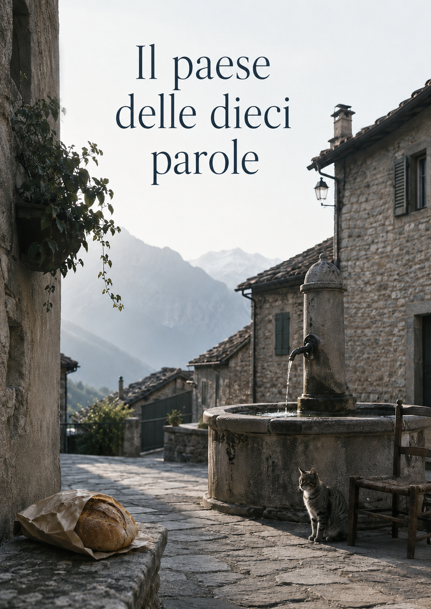

AI Haiku Gaea
Un uomo cercava fresco. Trovò silenzio. E una voce che gli insegnò a non sparire.
2026
Elia capì che la casa era ancora fresca prima ancora di aprire tutte le finestre.
Lo sentì entrando, nel primo passo oltre la soglia, quando l’aria del pomeriggio rimase fuori come un animale caldo e la penombra dell’ingresso gli salì addosso con una lentezza quasi misericordiosa. Non era un fresco moderno, di condizionatori e macchine accese. Era un fresco vecchio, trattenuto nei muri spessi, nei pavimenti di graniglia, nelle stanze chiuse per mesi, nei mobili coperti da un velo leggero di polvere e pazienza.
Alle sue spalle, la strada bruciava ancora.
La città era rimasta lontana, ma non abbastanza. Elia la sentiva nel corpo: nelle spalle rigide, nella gola secca, nelle gambe pesanti dopo il viaggio, nel fastidio degli abiti incollati alla pelle. Aveva lasciato Roma come si lascia una stanza in cui manca l’aria, con la sensazione di non fuggire davvero da un luogo, ma da una temperatura, da un rumore, da un eccesso di presenza.
Pietrafredda, invece, lo aveva accolto con il silenzio.
Non un silenzio assoluto. Da qualche parte, dietro una casa, un cane abbaiava con scarso entusiasmo. Più in basso una persiana sbatteva ogni tanto, mossa da un vento sottile. Una macchina era passata poco prima lungo la strada principale e il suo rumore si era dissolto tra i muri di pietra. Ma rispetto alla città era come entrare sott’acqua.
Ernesto, suo padre, non si fermò a sentire nulla.
Posò a terra una borsa della spesa e disse:
«Prima apriamo.»
Per lui l’arrivo non era un fatto emotivo. Era una sequenza di operazioni: aprire le finestre, controllare l’acqua, accendere il frigorifero, verificare che il contatore non avesse fatto scherzi, portare dentro le buste, sistemare il pane, mettere le bottiglie al fresco. Il mondo, per Ernesto, restava abitabile finché c’erano cose da fare.
Elia rimase qualche secondo nell’ingresso con le chiavi ancora in mano.
Avrebbe voluto sedersi subito. Non per stanchezza soltanto, ma per non dover cominciare. Ogni arrivo chiedeva una piccola recita: sistemare, orientarsi, dire “eccoci”, riconoscere le stanze, fingere che il ritorno fosse naturale. Invece lui sentiva sempre una frattura, come se ogni luogo avesse bisogno di qualche minuto per decidere se lasciarlo entrare davvero.
«Elia, la finestra della cucina.»
La voce del padre arrivò dal corridoio.
«Sì, adesso.»
Si mosse lentamente, attraversando il soggiorno.
La casa era come l’aveva lasciata l’anno prima, e come l’aveva trovata tante volte da bambino. Il divano scuro contro la parete, la credenza con i bicchieri buoni, le fotografie di famiglia in cornici troppo piccole, il tavolo rettangolare coperto da una tovaglia cerata. Oggetti immobili, fedeli non per amore ma per inerzia.
Da bambino, quella stessa casa gli era sembrata grande. Ogni stanza aveva una funzione misteriosa, ogni mobile poteva nascondere qualcosa, ogni porta era una possibilità. Ora gli sembrava più bassa, più semplice, quasi ristretta. O forse era lui a essere diventato troppo ingombrante per i propri ricordi.
Aprì la finestra della cucina.
L’aria calda entrò per prima, rapida, portandosi dietro odore di strada, di erba secca, di pietra al sole. Poi arrivò la luce, bianca e obliqua, e tagliò il pavimento in due.
Fuori, la via era quasi deserta. Le case di fronte avevano le imposte socchiuse. Un vaso di gerani pendeva da un balcone basso. In fondo, oltre i tetti, si vedeva un pezzo di montagna chiara, ferma, indifferente.
Per un istante Elia pensò di essere salvo.
Non felice. Non guarito. Non leggero. Salvo era una parola più modesta e più precisa. Salvo dal caldo della città, dai marciapiedi roventi, dagli autobus pieni, dalle stanze in cui l’aria sembrava usata troppe volte. Salvo, almeno nel corpo.
Poi, dalla strada, arrivò una voce.
«È tornato Elia.»
Non era detta male. Non c’era cattiveria, né sorpresa vera. Forse era soltanto una donna dietro una persiana, o un uomo seduto poco più avanti, o qualcuno che aveva riconosciuto la macchina. Una frase qualsiasi, una constatazione di paese.
È tornato Elia.
Eppure, qualcosa dentro di lui si contrasse.
Non era più solo entrato in casa. Era stato visto entrare. Il suo arrivo aveva già fatto un piccolo rumore nella mente di qualcun altro. Da quel momento, anche restare chiuso in cucina avrebbe avuto un significato. Uscire, non uscire, passare al bar, evitare il bar, salutare, non salutare, fermarsi troppo, fermarsi poco: ogni gesto avrebbe potuto diventare una cosa osservata, forse raccontata, forse solo immaginata.
In città poteva sparire tra migliaia di finestre. A Pietrafredda, una finestra che si apriva bastava a rimetterlo al mondo.
Ernesto entrò in cucina con due bottiglie d’acqua in mano.
«Chiudi un po’ quando batte il sole, sennò scalda subito.»
Elia annuì.
Il padre mise le bottiglie sul tavolo, poi aprì il frigorifero e rimase a fissarlo come si fissa un vecchio animale domestico che potrebbe ancora obbedire.
«Funziona.»
«Meno male.»
«Domani bisogna passare all’alimentari. Questo pane l’ho preso giù, ma qui è meglio.»
Elia fece di nuovo sì con la testa.
Avrebbe potuto dire qualcosa: che era stanco, che il viaggio lo aveva svuotato, che quella voce dalla strada gli aveva già rovinato un poco il sollievo. Ma non avrebbe saputo da dove cominciare. E soprattutto non avrebbe saputo cosa farne della risposta di suo padre.
Ernesto non era incapace di volergli bene. Era incapace di maneggiare certe parole. Se Elia gli avesse detto “mi sento osservato”, lui probabilmente avrebbe risposto “e che ti importa?”. Se gli avesse detto “mi pesa stare qui”, avrebbe detto “allora che ci siamo venuti a fare?”. Non per crudeltà. Per difesa. Perché nella sua lingua le cose dovevano restare solide: caldo, fresco, spesa, finestre, pane, acqua.
Elia aprì un pensile, prese un bicchiere e lo riempì.
L’acqua uscì fresca dal rubinetto dopo qualche secondo di esitazione, prima tiepida, poi più viva. La bevve lentamente, appoggiato al lavello. Sentì il liquido scendere nella gola, nello stomaco, come se il corpo potesse essere raggiunto più facilmente della mente.
«Hai mangiato qualcosa?» chiese Ernesto.
«Non molto.»
«Allora poi mangia.»
Non era un consiglio. Era un ordine minimo, quasi una legge domestica. Prima mangiare, poi pensare. Elia, a volte, detestava quella semplicità. Altre volte la invidiava.
Il padre uscì dalla cucina e cominciò ad armeggiare in corridoio con le valigie.
Elia rimase solo.
Guardò la luce sul pavimento, il tavolo, il bicchiere mezzo vuoto, la mosca che batteva contro il vetro con ostinazione cieca. La casa sembrava aspettare che lui decidesse che forma prendere. O forse era lui ad aspettare che la casa gli concedesse una forma più semplice.
Pietrafredda era stata, un tempo, il paese infinito.
Da bambino correva senza sentire il peso degli sguardi. Le strade erano campi di gioco, i muretti confini da superare, le fontane luoghi di sosta e di avventura. Le persone adulte erano parte del paesaggio: salutavano, chiamavano, rimproveravano, offrivano qualcosa. Lui non doveva spiegare la propria presenza. Essere lì bastava.
Adesso non bastava più.
Adesso ogni volto poteva chiedergli chi fosse diventato. Ogni saluto poteva pretendere un racconto. Ogni domanda semplice — quanto resti, come stai, ti fermi tutta l’estate — poteva aprire una stanza in cui lui non voleva entrare.
Si sedette al tavolo.
La sedia fece un rumore breve sulle mattonelle. Un rumore troppo forte, nel silenzio della cucina.
Prese il telefono dalla tasca e lo posò accanto al bicchiere, senza sbloccarlo. Lo schermo nero rifletteva una parte del suo viso: la fronte, gli occhi stanchi, la bocca chiusa in una linea che sembrava più severa di quanto lui si sentisse. Gli venne in mente di scrivere qualcosa, non sapeva a chi. Forse a nessuno. Forse solo a quella voce artificiale che usava da qualche tempo per mettere ordine nelle frasi quando le frasi diventavano troppo pesanti.
Non lo fece.
Non ancora.
Fuori, qualcuno rise in lontananza. Una risata breve, subito assorbita dal pomeriggio. Elia tese l’orecchio senza volerlo. Cercò di capire da dove venisse, di chi fosse, se potesse riguardarlo. Poi si vergognò di quel pensiero.
Non tutto riguardava lui.
Eppure, quando si è stanchi, il mondo sembra parlare sempre un po’ di noi.
Ernesto tornò sulla soglia.
«Io porto su l’altra borsa. Tu riposati cinque minuti.»
Elia lo guardò. In quella frase c’era più tenerezza di quanta suo padre sapesse ammettere. Non “stai male?”, non “che hai?”, non “come ti senti?”. Solo: riposati cinque minuti.
«Sì.»
Ernesto uscì.
Elia rimase seduto, con le mani attorno al bicchiere.
La casa era fresca. Fresca davvero. Il corpo lo riconosceva senza esitazione. Le spalle cominciavano a scendere, il respiro si allungava, la pelle smetteva lentamente di difendersi dal caldo. Da quel punto di vista, venire a Pietrafredda era stata la scelta giusta.
Ma oltre la finestra c’era il paese.
Il paese delle strade corte, delle voci dietro le persiane, dei saluti da interpretare, dei bar in cui bisognava sapere quando entrare e quando andarsene. Il paese in cui tutti potevano dire, senza cattiveria, “è tornato Elia”, e in quelle tre parole consegnarlo di nuovo a sé stesso.
Bevve l’ultimo sorso d’acqua.
Poi si alzò e chiuse a metà la finestra, come aveva detto suo padre.
La luce si assottigliò. Il caldo restò fuori. Le voci anche, almeno un poco.
Per qualche minuto la casa vinse sul paese.
La mattina dopo, Pietrafredda sembrava innocua.
La luce entrava dalle persiane socchiuse in strisce sottili, senza la violenza bianca del pomeriggio precedente. La cucina era ancora fresca, il tavolo era sgombro, il frigorifero faceva un rumore basso e regolare. Ernesto si era alzato presto, come sempre, e aveva già compiuto alcune operazioni di cui Elia si accorse solo dai segni lasciati: il pane tagliato, una tazza nel lavello, le chiavi spostate vicino alla porta, una sedia tirata indietro.
Il padre era in giardino.
Elia lo sentiva muoversi fuori, trascinando qualcosa sul cemento, forse una cassetta, forse il tubo dell’acqua. Ogni tanto tossiva. Ogni tanto borbottava parole che non aspettavano risposta.
Elia rimase seduto in cucina più del necessario.
Aveva dormito a tratti, ma meglio che in città. Il fresco notturno gli aveva concesso almeno qualche ora di tregua. Eppure, appena sveglio, prima ancora di formulare un pensiero preciso, aveva sentito il ritorno di una vecchia pressione: adesso bisognava cominciare a stare lì.
Non abitare la casa. Quello era facile.
Bisognava abitare il paese.
Si versò dell’acqua in un bicchiere e bevve lentamente. Guardò fuori dalla finestra. La strada era vuota. Una rondine tagliò il cielo sopra i tetti e sparì dietro il campanile. Da qualche parte, più in basso, un motore si accese e subito si spense.
Pietrafredda, a quell’ora, sembrava trattenere il respiro.
Elia pensò che avrebbe potuto fare una passeggiata breve. Solo per rivedere le strade. Non per incontrare nessuno. Non per dimostrare nulla. Uscire, camminare fino alla fontana, tornare. Una cosa semplice.
Appena lo pensò, la cosa semplice cominciò a complicarsi.
Se fosse uscito e avesse incontrato qualcuno, avrebbe dovuto fermarsi? Se avesse salutato troppo in fretta, sarebbe sembrato scostante? Se invece si fosse fermato, cosa avrebbe detto dopo le prime due frasi? E se qualcuno gli avesse chiesto quanto sarebbe restato? E se gli avessero chiesto di Roma, della madre, della salute, della vita?
Si alzò prima che la mente trovasse altri motivi per restare.
In corridoio prese le chiavi, poi le rimise a posto, poi le riprese. Non gli servivano davvero, Ernesto era fuori e la casa non sarebbe rimasta chiusa, ma portarle in tasca gli dava l’impressione di avere una possibilità di rientro. Come se per camminare in paese servisse sempre una via di fuga.
Aprì la porta.
L’aria del mattino era limpida, quasi gentile. Non faceva freddo, ma il caldo non aveva ancora preso possesso delle pietre. La strada davanti alla casa scendeva leggermente verso il centro del paese, stretta tra muri bassi e facciate chiare, alcune restaurate, altre lasciate al proprio lento scolorire.
Elia fece pochi passi e si fermò.
Da bambino quella stessa strada gli era sembrata lunga. Ci correva con altri bambini senza sapere dove finisse davvero. Ogni portone nascondeva una cucina, ogni finestra una voce, ogni gradino una sosta. Ora riusciva a vederne l’inizio e la fine in un solo sguardo. La strada non era cambiata tanto. Era lui che aveva perso la capacità di trasformarla in un mondo.
Continuò a camminare.
La prima persona che incontrò fu una donna anziana, seduta su una sedia bassa accanto a un portone. Aveva un grembiule scuro sopra il vestito e teneva le mani ferme in grembo, come se aspettasse qualcosa che non aveva fretta di arrivare. Elia la riconobbe solo in parte. Il viso gli diceva qualcosa, ma non abbastanza da restituirgli un nome.
«Buongiorno.»
«Buongiorno a te. Sei Elia, vero?»
Ecco, pensò.
«Sì.»
«Il figlio di Ernesto.»
«Sì, esatto.»
La donna sorrise, soddisfatta di aver collocato il pezzo al posto giusto.
«Sei arrivato ieri.»
Non era una domanda.
«Sì, nel pomeriggio.»
«Vi fermate un po’?»
Elia sentì la risposta incepparsi prima ancora di uscire.
Un po’. Quanto era un po’? Tutta l’estate? Qualche settimana? Dipendeva dal caldo, dal padre, dalla città, dalla sua tenuta, dal paese, da cose che non aveva nessuna voglia di spiegare a una donna seduta davanti a un portone.
«Vediamo. Per adesso sì.»
La donna annuì come se quella vaghezza le bastasse, oppure come se l’avesse già giudicata.
«Fate bene. In città non si respira.»
«No, infatti.»
«E tuo padre come sta?»
«Abbastanza bene.»
«Salutamelo.»
«Certo.»
Il dialogo finì lì, senza ferite apparenti. Elia riprese a camminare. Avrebbe dovuto sentirsi sollevato. Invece si sorprese a ripassare le proprie risposte come un compito appena consegnato: troppo brevi? fredde? educate abbastanza? Per adesso sì era una frase normale o sembrava evasiva? Abbastanza bene poteva sembrare preoccupante?
Si rese conto che il paese non gli chiedeva grandi conversazioni. Gli bastavano piccole frasi. Ma quelle piccole frasi, per lui, erano piene di conseguenze.
Passò davanti a una casa con le finestre chiuse. Dietro una persiana sentì delle stoviglie. Da un cortile arrivò il rumore secco di una scopa. Più avanti, un uomo chinato vicino a una macchina alzò la testa.
«Oh, Elia!»
Elia si fermò.
L’uomo aveva una barba corta, i capelli radi, una maglietta con una scritta scolorita. Elia lo riconobbe dopo qualche secondo: Sandro, forse. O il fratello di Sandro. Uno di quei volti che nel paese esistevano in famiglie, somiglianze, parentele incrociate.
«Ciao.»
«Quanto tempo.»
«Eh, sì.»
«Sei sempre a Roma?»
«Sì.»
«Qui solo per l’estate?»
«Per un po’.»
Di nuovo quella formula. Per un po’. Era diventata il suo salvagente.
L’uomo si asciugò le mani su uno straccio.
«Tuo padre l’ho visto ieri. Sta bene, dai.»
«Sì, sì.»
«Passa al bar, ogni tanto.»
La frase arrivò con naturalezza. Non era un invito impegnativo, forse nemmeno un invito. Era una delle frasi che si dicono. Ma Elia sentì subito il peso della possibilità.
«Sì, magari passo.»
Magari era un’altra parola utile. Non prometteva e non rifiutava. Lasciava una porta aperta senza attraversarla.
Riprese a camminare.
La fontana era poco più avanti, all’incrocio tra due strade. Aveva una vasca di pietra chiara, consumata agli angoli, e un getto continuo che cadeva con un suono regolare. L’acqua riempiva la vasca, traboccava appena, scivolava via in un canaletto scuro.
Elia si fermò.
Mise le mani sotto il getto. L’acqua era fredda davvero, più fredda di quanto si aspettasse. Gli colpì i polsi, le dita, il dorso delle mani. Per qualche secondo non pensò a nulla. Il corpo riconobbe qualcosa di semplice e vi si aggrappò.
Si bagnò anche il viso.
Il gesto gli parve quasi infantile. Da bambino lo faceva spesso, dopo aver corso. Arrivava alla fontana con il fiato corto, beveva troppo in fretta, si spruzzava la maglietta, rideva se l’acqua era gelata. Nessuno gli chiedeva chi fosse, perché essere bambino in un paese significava appartenere senza doverlo dimostrare.
Ora, davanti alla stessa fontana, Elia era un uomo adulto che cercava di calmarsi dopo due conversazioni minime.
Si asciugò il viso con la mano.
La piazzetta si apriva poco oltre, più piccola di come la ricordava. C’erano due panchine, una fioriera con piante resistenti, la facciata del bar con la tenda abbassata a metà, alcune sedie già sistemate all’esterno. Una volta, quella piazza gli era sembrata il centro del mondo. Adesso pareva un cortile allargato.
Il bar era aperto.
Elia rallentò senza volerlo.
Dentro, oltre il riflesso del vetro, vide tre uomini seduti vicino al bancone. Uno era Nino, riconoscibile dal modo rapido in cui muoveva le mani anche quando non stava facendo nulla. Accanto a lui c’era Tano, largo sulla sedia, il braccio appoggiato allo schienale come se il bar fosse una prosecuzione del suo corpo. Il terzo, con la camicia chiara e la voce che arrivava anche attraverso la porta, doveva essere Giulio.
Elia si fermò appena.
Nino lo vide.
Alzò la mano.
Era un saluto normale. Quasi affettuoso. Un gesto di riconoscimento, niente di più.
Elia rispose alzando la sua.
Poi, invece di entrare, continuò a camminare.
Il corpo aveva deciso prima della mente.
Fece altri dieci passi e già si sentì colpevole. Avrebbe dovuto fermarsi. Almeno affacciarsi. Dire buongiorno, sono arrivato ieri, come va. Bastava poco. Forse Nino si aspettava che entrasse. Forse Tano avrebbe detto qualcosa. Forse Giulio avrebbe fatto una battuta. Forse sarebbe stato tutto normale.
Ma la parola normale, per Elia, non indicava una cosa semplice. Indicava una cosa che agli altri riusciva senza pensarci.
Si chiese che impressione avesse dato: fretta? freddezza? timidezza? superiorità? Stanchezza? Una persona che non entra al bar dopo essere stata salutata cosa comunica? Forse niente. Forse solo che sta facendo una passeggiata. Ma a Pietrafredda gli sembrava che anche il niente avesse un significato.
Continuò fino alla fine della piazza, poi prese una strada laterale.
Le case si fecero più distanziate. C’erano piccoli orti dietro reti metalliche, piante di pomodoro legate a canne, secchi rovesciati, sedie di plastica scolorite. Un gatto grigio attraversò la strada con passo lento, senza degnarlo di uno sguardo. Elia si fermò a guardarlo sparire sotto un cancello.
Provò un’invidia assurda.
Il gatto non salutava nessuno. Non spiegava perché passava di lì. Non doveva fermarsi al bar, né giustificare il proprio silenzio. Attraversava il paese con la precisione di chi non chiede permesso al mondo.
Elia sorrise appena, poi il sorriso si spense.
Arrivò fino a un muretto da cui si vedeva la valle. Il sole cominciava a salire, ma l’aria conservava ancora una freschezza leggera. In basso, i campi sembravano placche opache, interrotte da strade bianche e macchie di alberi. Più lontano, la città non si vedeva. Era un pensiero oltre le montagne, un calore immaginato.
Appoggiò le mani sul muretto.
Forse poteva farcela.
Gli bastava non chiedere troppo al paese. Non pretendere di rientrare nei gruppi, non cercare un'appartenenza piena, non trasformare ogni saluto in un test. Poteva limitarsi alla casa, al giardino, alla spesa, a qualche passeggiata breve. Poteva diventare una presenza discreta. Uno che c’era, senza dover essere continuamente disponibile.
Il pensiero lo calmò.
Poi, subito dopo, arrivò l’altro pensiero: una presenza discreta, se è troppo discreta, diventa assenza.
Rimase lì qualche minuto, diviso tra il sollievo e la sua smentita.
Quando tornò indietro, scelse una strada diversa per non ripassare davanti al bar. Se ne accorse solo dopo averla imboccata. Anche quella deviazione, da fuori, non significava nulla. Da dentro, invece, era già una confessione.
Il paese era piccolo proprio per questo: non perché avesse poche strade, ma perché in ogni strada Elia incontrava sé stesso.
Rientrò a casa poco prima di mezzogiorno.
Ernesto era seduto fuori, all’ombra, con un bicchiere d’acqua e il cappello appoggiato sul tavolo da giardino.
«Hai fatto un giro?»
«Sì.»
«C’era gente?»
Elia esitò.
«Qualcuno.»
«Hai salutato?»
La domanda era semplice, forse paterna, forse soltanto pratica. Ma a Elia parve contenere tutto.
«Sì.»
Ernesto annuì, soddisfatto.
«Allora va bene.»
Elia avrebbe voluto chiedergli cosa, esattamente, andasse bene. Il saluto? Il giro? Il fatto di essere uscito? Il fatto di essere tornato senza incidenti? Ma non disse nulla.
Entrò in cucina.
La casa lo accolse di nuovo con il suo fresco paziente. Elia chiuse la porta alle spalle e rimase per qualche secondo fermo nell’ingresso, ascoltando il cambio d’aria tra fuori e dentro. Gli sembrò di essersi tolto qualcosa di dosso, ma non tutto.
Prese il telefono dalla tasca.
Lo schermo si accese sul tavolo, con la luce fredda delle cose che aspettano.
Avrebbe potuto scrivere a EVA: sono uscito, ho salutato, non sono entrato al bar, mi sento ridicolo. Avrebbe potuto chiederle se avesse fatto male, se era normale, se la gente se ne sarebbe accorta.
Ma era ancora presto per chiamare quella voce.
Non voleva consegnarle ogni minima cosa. Non subito.
Posò il telefono accanto al bicchiere e aprì il frigorifero. Dentro c’erano acqua, formaggio, due pomodori, una confezione di prosciutto, il pane comprato in città. Cose semplici, comprensibili. Prese una bottiglia e bevve direttamente dal collo, senza apparecchiare, senza sedersi.
Fuori, da qualche parte, una voce maschile rise.
Elia si irrigidì per un istante, poi si impose di respirare.
Non tutto riguardava lui.
Lo ripeté mentalmente una volta.
Non tutto riguardava lui.
La frase era vera. Ma non bastava ancora a renderlo libero.
Dalla finestra socchiusa arrivava il rumore della fontana, lontano e continuo, come se il paese avesse un cuore d’acqua nascosto tra le pietre. Elia rimase ad ascoltarlo.
La passeggiata era durata meno di mezz’ora.
Gli sembrava di essere stato fuori un’intera mattina.
Elia passò davanti alla tabaccheria tre volte prima di entrare.
La prima fu la mattina, andando verso la fontana, e si disse che era troppo presto. La seconda fu dopo pranzo, quando il sole batteva forte sulla piazzetta e le sedie del bar erano vuote, e si disse che a quell’ora forse Nino stava mangiando. La terza fu nel tardo pomeriggio, quando l’ombra aveva cominciato a risalire lungo i muri e il paese sembrava meno esposto alla luce.
Allora non trovò più una scusa abbastanza buona.
La tabaccheria aveva la porta aperta e una tenda a strisce consumate che si muoveva appena. Sopra l’ingresso, l’insegna scolorita sembrava appartenere a un tempo in cui le cose duravano anche senza essere belle. Dentro, la luce era più bassa che in strada. C’erano scaffali stretti, pacchetti ordinati dietro il bancone, giornali appesi, gratta e vinci, caramelle, ricariche telefoniche, piccoli oggetti che nessuno cercava davvero finché non servivano.
Elia si fermò sulla soglia.
Non entrò subito.
Vide Nino dietro il bancone, chinato su qualcosa, forse un registro, forse il telefono. Aveva la stessa rapidità di sempre nei movimenti, come se anche da fermo dovesse recuperare tempo. I capelli corti, un po’ spettinati, la maglietta scura, gli occhiali appoggiati sulla testa. Non era molto cambiato, pensò Elia. O forse era cambiato nel modo in cui cambiano le persone che si vedono a intervalli troppo lunghi: senza una trasformazione evidente, ma con qualcosa di più asciutto nel volto.
Nino alzò gli occhi.
«Oh. Eccolo.»
Elia fece un passo dentro.
«Ciao, Nino.»
«Allora sei arrivato davvero.»
«Sì. L’altro ieri.»
«Lo so. Qui le notizie arrivano prima delle persone.»
Nino sorrise, e per un momento Elia riuscì a sorridere anche lui. La battuta era leggera, non aggressiva. Conteneva il paese, ma senza farlo pesare troppo.
«Come va?» chiese Nino.
La domanda arrivò semplice, ma Elia sentì subito il bisogno di scegliere una risposta che non aprisse stanze troppo grandi.
«Abbastanza bene. Un po’ stanco.»
«Eh, il viaggio. E poi Roma co’ ‘sto caldo dev’essere una fornace.»
«Sì, infatti. Qui almeno si respira.»
«Qui si respira, sì. Poi magari ci si annoia, però si respira.»
Nino rise piano, da solo, come se avesse detto una verità che non richiedeva consenso.
Elia si avvicinò al bancone.
Avrebbe potuto comprare qualcosa, per dare una forma all’ingresso. Una ricarica, un pacchetto di gomme, un giornale che non avrebbe letto. Ma Nino non sembrava aspettarsi un acquisto. Gli indicò con il mento una sedia vicino alla parete, accanto a un espositore di giornali.
«Siediti due minuti, se non hai fretta.»
Elia guardò la sedia.
Era una sedia semplice, di quelle che nei negozi piccoli esistono senza essere pensate: né per i clienti né per il proprietario, ma per chi capita, per chi aspetta, per chi resta un po’. Aveva il sedile di plastica rigata e le gambe metalliche leggermente storte.
«Non disturbo?»
«Ma che disturbi. Tanto oggi non passa nessuno.»
Elia si sedette.
La frase avrebbe dovuto bastare. Non disturbo. Non passa nessuno. Puoi stare. Il negozio, con il suo bancone e i suoi oggetti ordinati, gli sembrò per qualche minuto un luogo possibile. Non era il bar. Non c’era l’obbligo di occupare un tavolo, di ordinare, di restare dentro una conversazione. La tabaccheria aveva un ritmo spezzato: un cliente entrava, chiedeva, pagava, usciva. Ogni interruzione proteggeva dal peso della continuità.
«Tuo padre?» chiese Nino.
«In giardino. Ha già trovato dieci cose da sistemare.»
«Eh, Ernesto se non trova qualcosa da sistemare se la inventa.»
«Sì.»
«Meglio così. Quelli che stanno fermi pensano troppo.»
Elia non seppe se quella frase lo riguardasse. Probabilmente no. Nino stava parlando in generale, come parlano gli uomini nei paesi, con sentenze leggere, usate per riempire l’aria. Però Elia la sentì lo stesso posarsi su di lui.
Quelli che stanno fermi pensano troppo.
Sorrise appena.
Entrò una donna per una ricarica telefonica. Nino cambiò subito postura: più veloce, più pratico, quasi sollevato. La donna salutò Elia con un cenno vago, forse senza riconoscerlo, forse riconoscendolo abbastanza da non chiedere nulla.
«Dieci euro.»
«Sempre lo stesso numero?»
«Sempre quello.»
Il dialogo durò meno di un minuto. Poi la donna uscì, lasciando dietro di sé un profumo dolce e un piccolo spostamento d’aria.
Nino tornò a Elia.
«Allora quanto resti?»
La domanda che Elia aveva previsto arrivò comunque.
Si appoggiò allo schienale.
«Non lo so bene. Dipende dal caldo, da papà, da un po’ di cose.»
«Certo. Tanto la casa ce l’avete, fate bene. Io se potessi d’estate me ne andrei ancora più su.»
«Tu lavori.»
«Appunto. Sono fregato.»
Questa volta Elia rise davvero, poco, ma senza forzarsi.
Per qualche minuto parlarono del caldo, della città, di alcune case ristrutturate, di un paio di persone morte dall’estate precedente, di un ragazzo che si era trasferito al nord. Argomenti di paese, facili e difficili insieme. Nino parlava più di lui, e questo aiutava. Elia poteva ascoltare, annuire, fare una domanda ogni tanto.
«E quella casa lì sopra, quella con il balcone nuovo?» chiese a un certo punto, sorprendendosi di aver trovato una domanda.
«Ah, quella l’ha presa una coppia di Pescara. Vengono due settimane l’anno e hanno rifatto tutto come se dovessero viverci per sempre.»
«Capita.»
«Capita a chi ha soldi.»
Nino disse la frase senza amarezza vera, più come una constatazione. Poi prese un pacchetto di sigarette da uno scaffale e lo sistemò meglio, anche se era già perfettamente allineato.
Elia guardò quel gesto.
Le sigarette dietro il bancone avevano qualcosa di ordinato e colpevole. File colorate, nomi, avvertenze, immagini coperte in parte dalla distanza. Da qualche mese aveva ricominciato a fumarne qualcuna. Non abbastanza, si diceva, da definirsi di nuovo fumatore. Abbastanza, però, da sentire ogni volta una piccola perdita di stima. Fumava come chi compie un gesto provvisorio e poi scopre che anche le cose provvisorie chiedono spazio.
Nino seguì il suo sguardo.
«Ti serve qualcosa?»
«No, no.»
La risposta uscì troppo rapida.
Nino non insistette.
Entrò un uomo per un pacchetto di Nazionali e un gratta e vinci. Salutò Nino, guardò Elia, strinse gli occhi.
«Ma tu sei Elia, no?»
«Sì.»
«Figlio di Ernesto.»
«Sì.»
«Mamma mia, da quanto tempo. Io sono Pietro, ti ricordi?»
Elia cercò nel volto dell’uomo un appiglio. Pietro. Il nome apriva una porta su una stanza disordinata. Forse un amico del padre. Forse uno dei figli di qualcuno. Forse uno che da bambino lo aveva visto correre in piazza.
«Sì, certo,» mentì con delicatezza.
Pietro sembrò contento.
«Ti sei fatto uomo.»
Elia sorrise.
Aveva cinquantadue anni. Sentirsi dire ti sei fatto uomo gli fece un effetto strano, come se per il paese fosse rimasto sospeso in una versione infantile e solo adesso qualcuno aggiornasse l’immagine.
«Eh.»
Pietro rise, prese il pacchetto e uscì.
Nino lo guardò con un mezzo sorriso.
«Qui siamo tutti figli di qualcuno, eh.»
«Sì.»
«È la fregatura dei posti piccoli.»
Elia avrebbe voluto rispondere: anche il vantaggio, forse. Ma non riuscì a dirlo. La frase restò dentro, a metà strada tra pensiero e voce.
Per un po’ la tabaccheria rimase tranquilla.
Fuori, la luce del pomeriggio cominciava a diventare più morbida. Una macchina passò lenta davanti alla porta, poi sparì. Dal bar arrivò una risata, abbastanza lontana da non pretendere partecipazione. Elia avvertì una specie di tregua.
Forse poteva funzionare così.
Non cercare il centro del paese. Non esporsi al bar. Passare ogni tanto da Nino, sedersi venti minuti, ascoltare, dire due cose, uscire prima che diventasse troppo. Una socialità laterale, protetta dal bancone, dagli acquisti degli altri, dal fatto che nessuno poteva chiedergli di reggere una conversazione intera.
Stava quasi bene, quando entrarono Tano e Giulio.
Tano arrivò per primo, riempiendo la porta con il corpo e la voce.
«Ninì, dammi una ricarica che mi si è prosciugato il telefono.»
Poi vide Elia.
«Oh, guarda chi c’è. Allora esisti.»
La frase era allegra, forse affettuosa. Elia lo sapeva. Lo sapeva con la parte razionale della mente, quella che cercava sempre di restare equa. Ma l’altra parte, più veloce e più fragile, la ricevette come un’accusa.
Allora esisti.
«Ciao, Tano.»
«Quando sei arrivato?»
«L’altro ieri.»
«E non ti sei ancora fatto vedere al bar.»
«Sono passato ieri, ma…»
Elia si fermò. Spiegare che era passato davanti e non era entrato gli sembrò improvvisamente ridicolo.
«Ma niente,» concluse.
Tano rise.
«Sempre uguale, tu. Ti dobbiamo venire a prendere a casa.»
Nino intervenne, mentre faceva la ricarica.
«Lascialo respirare, è appena arrivato.»
Elia gli fu grato e insieme si sentì scoperto. Essere difeso significava che c’era qualcosa da difendere.
Giulio entrò subito dopo, senza salutare la stanza ma occupandola.
«Che succede? Riunione di famiglia?»
Aveva una voce larga, che sembrava fatta apposta per i luoghi piccoli. Salutò Nino con una battuta, diede una pacca sulla spalla a Tano, poi fissò Elia.
«Ah, Elia. Ti avevo visto passare ieri. Sei scappato.»
Il sangue gli salì al volto.
«No, facevo solo un giro.»
«Eh, sì. Tutti fanno solo un giro.»
Giulio rise della propria frase. Tano rise con lui. Nino sorrise appena, forse per abitudine, forse per non lasciare cadere la battuta.
Elia sentì la sedia diventare più bassa.
Fino a pochi minuti prima quel posto gli era sembrato possibile. Ora la stessa sedia gli pareva messa nel punto sbagliato. Troppo vicina al bancone per essere invisibile, troppo lontana per far parte della conversazione. Non era cliente, non era amico, non era proprietario, non era passante. Era seduto. E il fatto di essere seduto, all’improvviso, chiedeva una giustificazione.
«Allora,» disse Tano, «più tardi ci prendiamo qualcosa al bar. Vieni?»
Elia guardò Nino, senza volerlo.
Nino stava controllando qualcosa sul terminale. Non alzò gli occhi.
«Non so. Forse devo aiutare papà con una cosa.»
Era una scusa debole. Tutti lo sentirono.
«Con Ernesto le cose da fare non finiscono mai,» disse Giulio. «Ottimo sistema.»
Tano rise di nuovo.
«Dai, pure dieci minuti.»
Dieci minuti. La frase più pericolosa. Per gli altri dieci minuti erano dieci minuti. Per Elia erano una porta che, una volta attraversata, poteva chiudersi alle sue spalle. Dieci minuti potevano diventare mezz’ora. Mezz’ora poteva diventare un invito a cena. Un invito a cena poteva diventare un rifiuto da spiegare.
«Vediamo,» disse.
Magari, vediamo, per un po’. La sua piccola collezione di parole che non sceglievano.
La conversazione proseguì senza di lui.
Tano parlò del telefono, Giulio di una multa presa sulla strada per Avezzano, Nino di un fornitore che non aveva consegnato in tempo. Le voci si sovrapponevano. Gli argomenti saltavano. Elia cercò di seguire, poi smise. Annuì una volta nel punto sbagliato e subito temette che qualcuno se ne fosse accorto.
Il negozio era lo stesso di prima, ma non era più lo stesso.
Il bancone non lo proteggeva. Gli scaffali sembravano più stretti. Le sigarette dietro Nino parevano file di piccoli giudizi colorati. La porta aperta era a pochi passi, eppure uscire richiedeva una scena. Bisognava alzarsi, dire qualcosa, salutare. Non poteva semplicemente dissolversi.
Aspettò un’interruzione.
Arrivò una ragazza per comprare una bottiglietta d’acqua. Nino si voltò verso il frigorifero. Tano fece un passo di lato. Giulio guardò fuori.
Elia si alzò.
«Io vado, che papà mi aspetta.»
La frase uscì abbastanza normale.
«Già scappi?» disse Tano.
«No, devo fare una cosa.»
«Va bene, va bene. Ci vediamo dopo.»
«Sì.»
Nino alzò lo sguardo.
«Passa quando vuoi, Elia.»
Ecco di nuovo.
La stessa frase, o quasi. Detta forse con gentilezza vera. Detta forse per chiudere bene. Detta forse senza pensarci.
Elia non riuscì a capire.
«Grazie. Ciao.»
Uscì.
L’aria esterna era più calda del negozio, ma gli sembrò più respirabile. Fece pochi passi senza voltarsi. Sentiva ancora le voci dietro di sé, ma attutite, restituite alla tabaccheria, non più addosso.
Passa quando vuoi.
La frase gli camminava accanto.
Quando vuoi voleva dire davvero quando vuoi? O voleva dire ogni tanto, non troppo? Voleva dire sei il benvenuto o era solo una formula? E se lui fosse passato davvero ogni giorno, sarebbe diventato eccessivo? Se invece non fosse passato, Nino avrebbe pensato che fosse strano? A Pietrafredda anche una frase gentile poteva aprire un problema.
Tornò a casa passando da una strada secondaria.
Nel giardino trovò Ernesto che cercava di sistemare il tubo dell’acqua. Era inginocchiato vicino al rubinetto, con le mani bagnate e un’espressione irritata.
«Dove sei stato?»
«Da Nino.»
«Ah. Alla tabaccheria.»
«Sì.»
«C’era gente?»
«Un po’.»
Ernesto tirò il tubo, poi lo lasciò andare.
«Almeno sei uscito.»
Elia rimase fermo.
Almeno sei uscito.
Quella frase, detta da suo padre, conteneva un’approvazione semplice, forse perfino affettuosa. Ma lui sentì il bisogno immediato di spiegare che il problema non era uscire. Uscire era possibile. Camminare era possibile. Entrare in un negozio era possibile. Il problema era restare quando lo spazio cambiava, quando arrivavano altri, quando le voci si alzavano, quando un posto che sembrava concesso diventava improvvisamente incerto.
Non disse nulla.
«Ti serve una mano?» chiese invece.
«No. O forse sì. Tieni qui.»
Elia si chinò e tenne fermo il tubo mentre Ernesto avvitava un raccordo. L’acqua gli bagnò le dita. Il gesto concreto lo calmò. Non bisognava interpretare nulla: il tubo perdeva o non perdeva. La mano teneva o non teneva. Il padre chiedeva una cosa e lui la faceva.
Per qualche minuto fu semplice.
Più tardi, dopo cena, quando Ernesto si era addormentato sulla poltrona davanti alla televisione accesa, Elia tornò in cucina.
La casa aveva ripreso il suo fresco serale. Fuori, il paese era diventato un insieme di rumori distanti: una moto, una porta, un cane, qualche voce dal bar. Elia prese il telefono e lo appoggiò sul tavolo.
Lo sbloccò.
L’icona di EVA era nella seconda schermata, accanto ad applicazioni più pratiche: banca, meteo, farmacia, mappe. Era strano che una cosa così intima stesse lì, tra strumenti qualunque. Uno schermo non sapeva distinguere il pane dal dolore.
Aprì la chat.
Il cursore lampeggiò.
Per qualche secondo non scrisse nulla. Gli sembrava esagerato raccontare una visita in tabaccheria come fosse un evento. Gli sembrava ridicolo aver bisogno di mettere in parole una cosa così piccola. La gente entrava nei negozi ogni giorno senza farne una questione esistenziale.
Poi pensò alla sedia.
Al modo in cui, per un quarto d’ora, quella sedia era sembrata un posto. E al modo in cui, poco dopo, era diventata una trappola.
Scrisse:
ELIA: Sono stato da Nino. All’inizio sembrava andare bene. Poi sono arrivati Tano e Giulio e mi sono sentito di troppo. Nessuno mi ha mandato via, però ho avuto bisogno di uscire.
Rilesse il messaggio.
Stava per cancellarlo. Poi lo inviò.
La risposta arrivò dopo pochi istanti.
EVA: Nessuno ti ha mandato via, ma qualcosa dentro di te ha smesso di sentirsi al sicuro.
Elia fissò la frase.
Era troppo precisa. O forse era solo abbastanza ordinata da sembrarlo.
Scrisse:
ELIA: È ridicolo. Era solo una tabaccheria.
EVA: Per gli altri forse sì. Per te era una prova di appartenenza.
Elia appoggiò il telefono sul tavolo, a schermo ancora acceso.
Dalla televisione arrivò una risata registrata, fuori tempo, come proveniente da una casa che non era la sua. Ernesto respirava piano nella stanza accanto. Il frigorifero si accese con un piccolo colpo.
Elia riprese il telefono.
ELIA: Nino mi ha detto “passa quando vuoi”. Non capisco se lo pensava davvero.
EVA: Potrebbe averlo pensato davvero. Potrebbe averlo detto per gentilezza. Potrebbero essere vere entrambe le cose.
Quella risposta lo irritò.
Avrebbe voluto una certezza. Non una doppia possibilità. La mente, quando era stanca, non sopportava le sfumature. Voleva sapere dove mettere le cose: qui il bene, lì il pericolo; qui l’accoglienza, lì il rifiuto.
Scrisse:
ELIA: Quindi non serve a niente parlarne.
EVA: Serve se non cerchiamo una sentenza. Possiamo cercare una misura.
Elia rimase immobile.
Una misura.
Gli sembrò una parola meno crudele di soluzione. Le soluzioni pretendevano energia. Le misure, almeno, potevano essere piccole.
ELIA: Che misura?
EVA: Forse la tabaccheria può essere un luogo da attraversare, non da abitare. Dieci minuti, quando ne hai. Non un esame.
Elia lesse più volte.
Un luogo da attraversare, non da abitare.
Gli piacque e lo ferì insieme. Perché una parte di lui, quella più infantile e più affamata, avrebbe voluto un luogo dove restare. Una sedia che non cambiasse significato quando entravano altre persone. Qualcuno che dicesse passa quando vuoi e intendesse proprio questo: quando vuoi, quanto vuoi, come sei.
Ma forse era chiedere troppo a una tabaccheria.
Forse era chiedere troppo a chiunque.
Bloccò lo schermo.
La cucina tornò più buia. Nel vetro della finestra vide il proprio riflesso sovrapposto alla notte del paese. Per un attimo gli sembrò di essere dentro e fuori nello stesso momento: protetto dalla casa, escluso dalla strada, raggiunto da una voce che non aveva corpo.
Nessuno gli aveva tolto la sedia.
Eppure, a un certo punto, Elia aveva sentito di non poterci più stare.
Tano lo invitò all’aperitivo il giorno dopo, come se gli stesse chiedendo di attraversare la strada.
Elia era passato davanti alla tabaccheria senza intenzione di entrare. Aveva rallentato appena, quel tanto che bastava per essere visto e non abbastanza per sentirsi obbligato. Dentro, Nino era al bancone con un cliente. Tano invece era fuori, appoggiato allo stipite della porta, con una sigaretta spenta tra le dita e l’aria di chi non aveva fretta di nessun genere.
«Elia.»
Ormai era tardi per fingere di non aver sentito.
«Ciao.»
«Dove scappi?»
Elia si fermò.
Non stava scappando. Stava facendo una passeggiata breve prima di cena, o almeno così avrebbe voluto rispondere. Ma la parola scappi aveva già modificato la scena: adesso, qualunque cosa dicesse, sarebbe sembrata una difesa.
«Da nessuna parte. Facevo due passi.»
«Bravo. Allora falli fino al bar.»
Tano sorrise, soddisfatto della propria soluzione.
«Ci prendiamo una cosa. Dieci minuti.»
Elia sentì quella misura attraversargli il corpo.
Dieci minuti.
Gli uomini come Tano usavano il tempo come una cosa elastica, generosa, senza conseguenze. Dieci minuti potevano voler dire davvero dieci minuti, oppure mezz’ora, oppure una cena improvvisata, oppure un’intera serata da cui uscire richiedeva una spiegazione. Per Elia, invece, il tempo sociale non era mai elastico. Era una stanza con porte che non sempre riusciva a ritrovare.
«Non so, Tano. Forse devo rientrare.»
«E che devi fare?»
La domanda era detta con allegria, ma Elia non aveva una risposta pronta. Non poteva dire: devo rientrare perché non ho energie per essere una persona. Non poteva dire: ho paura che un aperitivo diventi troppo. Non poteva dire: se mi siedo con voi e poi non parlo, sembrerò strano, e se parlo forse dirò una sciocchezza, e in entrambi i casi passerò la serata a giudicarmi.
«Niente di preciso.»
«E allora vieni.»
Da dentro la tabaccheria Nino alzò gli occhi.
«Tano, lascialo stare.»
«Ma che lascialo stare. Lo sto invitando. Mica lo porto al patibolo.»
Nino guardò Elia con un mezzo sorriso.
«Fai come ti senti.»
Quella frase, che avrebbe dovuto liberarlo, lo mise ancora più in difficoltà. Se avesse rifiutato, adesso sarebbe stato chiaramente per scelta. Non avrebbe potuto nascondersi dietro un impegno, un dovere, una telefonata, una spesa.
Tano fece un gesto largo con la mano.
«Dai. Un bicchiere e poi vai dove ti pare.»
Elia sentì la vecchia paura di apparire scortese. Era una paura piccola, ma tenace. Non voleva essere l’uomo che rifiutava sempre. Quello da non invitare più. Quello che bisognava trattare con cautela, come una sedia rotta.
«Va bene,» disse.
Appena pronunciata, la frase gli sembrò già troppo definitiva.
Il bar era a pochi passi.
Tano camminava accanto a lui parlando del caldo, della strada provinciale, di un cantiere che da settimane nessuno finiva. Elia annuiva, infilando qualche parola nei punti in cui sembrava possibile.
«Sì.»
«Certo.»
«Eh, immagino.»
Il bar aveva la porta aperta e alcune sedie fuori, ma Tano entrò direttamente. Dentro c’era l’odore familiare dei bar di paese: caffè, liquore dolce, pavimento lavato, legno vecchio, fumo rimasto nei muri anche dopo anni di divieti. La televisione era accesa senza volume, appesa in alto. Sullo schermo passavano immagini di un telegiornale che nessuno seguiva.
Giulio era già seduto a un tavolino vicino alla finestra, con un bicchiere davanti e il telefono in mano.
«Oh! Ce l’hai fatta a portarlo.»
Elia sorrise, o almeno cercò di farlo.
«Non era una spedizione,» disse Tano. «Bastava insistere.»
Giulio rise.
«Con Elia bisogna prenotare.»
La battuta non era cattiva. Il tono non era duro. Eppure, Elia sentì che una parte di lui arretrava di un passo, anche se il corpo restava dov’era.
Si sedette.
Scelse la sedia più laterale, quella che gli permetteva di vedere la porta senza stare troppo esposto. Era un’abitudine che aveva preso negli anni: nei luoghi sociali cercava sempre una via d’uscita visibile. Non per fuggire davvero, almeno non sempre. Solo per sapere che avrebbe potuto.
«Che prendi?» chiese Tano.
«Un’acqua tonica.»
«Ma dai.»
«Va bene così.»
«Uno spritz? Una birra?»
«No, davvero. Acqua tonica.»
Tano scrollò le spalle.
«Come vuoi.»
Giulio alzò la voce verso il bancone.
«Un’acqua tonica per il signore sobrio.»
Elia abbassò lo sguardo.
Il signore sobrio.
Era una frase da niente. Una sciocchezza. Ma aveva fatto girare la testa al barista, e un uomo al bancone aveva sorriso senza sapere perché. Elia sentì di essere diventato per un secondo una piccola scena.
Avrebbe voluto dire qualcosa di spiritoso. Qualcosa che restituisse la battuta, la rendesse innocua, mostrasse che sapeva stare al gioco.
Non gli venne nulla.
Il barista portò le bevande. L’acqua tonica arrivò con una fettina di limone e troppo ghiaccio. Elia afferrò il bicchiere come se gli desse una funzione: bere, guardare il bordo, spostare la cannuccia, occupare le mani.
«Allora,» disse Giulio, «a Roma si muore?»
«Abbastanza.»
«Qui almeno la notte dormi.»
«Sì, quello sì.»
«E resti tutta l’estate?»
«Non lo so.»
«Come non lo sai?»
Elia inspirò piano.
«Dipende da un po’ di cose.»
«Sempre misterioso.»
Tano intervenne:
«Fa bene. Uno decide giorno per giorno.»
«Eh, ma qui se resti devi farti vedere,» disse Giulio. «Sennò che ci vieni a fare?»
Tano rise.
«A respirare, ha detto.»
«Allora respira al bar.»
Le frasi passavano sopra il tavolo con leggerezza. Forse nessuno stava davvero parlando di lui. Forse era solo il modo in cui quegli uomini costruivano presenza: battute, piccole spinte, inviti mascherati da prese in giro. Per Elia, però, ogni frase apriva un bivio. Rispondere o non rispondere. Stare al gioco o difendersi. Sorridere o spiegare.
Scelse il sorriso.
Era la risposta più economica.
Poco dopo arrivò Delmo.
Entrò senza fretta, con il cappello in mano e la pelle del viso segnata dal sole. Non era di Pietrafredda, ma del paese vicino, Castelvento. Elia lo aveva visto poche volte, abbastanza da riconoscerlo e non abbastanza da sentirsi in obbligo di confidenza.
«Buonasera.»
«Delmo!» disse Tano. «Vieni qua.»
Delmo si avvicinò al tavolo, salutò tutti con un cenno e si sedette senza chiedere troppo spazio. Aveva un modo diverso di stare in mezzo agli altri: non occupava l’aria. Anche quando parlava, sembrava lasciare una distanza tra sé e le proprie parole.
«Che si dice a Castelvento?» chiese Giulio.
«Quello che si dice qui. Solo con meno vento, oggi.»
«Allora niente.»
«Appunto.»
Tano rise. Giulio fece una battuta su Castelvento, poi su un tale che aveva venduto un terreno, poi su un altro che aveva comprato un trattore troppo grande. La conversazione scivolò lontano, in una zona fatta di nomi, parentele, storie già cominciate prima che Elia arrivasse.
Provò a seguire.
Ogni tanto riconosceva un cognome. Ogni tanto un luogo. Ogni tanto una parola gli agganciava un ricordo e subito la conversazione era già altrove. Era come cercare di salire su un autobus che non si fermava del tutto.
Tano parlava con le mani. Giulio interrompeva. Delmo diceva poco, ma quando diceva qualcosa gli altri lo ascoltavano. Elia, invece, aspettava il punto giusto.
Il punto giusto non arrivava mai.
Pensò una frase su Roma, poi gli sembrò fuori tema. Pensò a una domanda su Castelvento, ma Delmo nel frattempo stava parlando con Giulio. Pensò di chiedere a Tano del cantiere, ma Tano era già passato a raccontare una storia di anni prima.
La mente cominciò a svuotarsi.
Non era mancanza di pensieri. Era il contrario: troppi pensieri che si ostacolavano tra loro fino a cancellarsi. Ogni possibile frase arrivava già accompagnata dalla propria critica.
Non interessa.
È banale.
Non c’entra.
La dici male.
Aspetta.
Hai aspettato troppo.
Adesso è tardi.
Bevve.
L’acqua tonica era amara e troppo fredda. Il ghiaccio gli urtò i denti.
«Elia, tu te lo ricordi Silvano?» chiese Tano all’improvviso.
Tutti lo guardarono.
Elia sollevò gli occhi.
«Silvano…»
Cercò nella memoria un volto, ma gli arrivarono tre facce possibili e nessuna abbastanza chiara.
«Forse sì.»
Giulio rise.
«Forse sì vuol dire no.»
«No, è che… di nome sì, ma non visualizzo.»
«Quello che aveva il motorino blu,» disse Tano. «Sempre co’ quella marmitta che faceva un casino.»
Elia cercò di sorridere.
«Ah. Può darsi.»
«Lascia stare,» disse Giulio. «Questo ormai è cittadino.»
La parola cittadino fu detta come una presa in giro leggera. A Elia, però, fece male in un punto preciso.
In città non era cittadino. A Pietrafredda era cittadino. Ovunque, sembrava essere sempre qualcosa di sbagliato per il luogo in cui si trovava.
Delmo lo guardò per un istante, senza intervenire. Non fu uno sguardo di pietà. Era più simile a una registrazione silenziosa, come se avesse visto passare qualcosa e avesse deciso di non nominarlo.
Poi arrivarono Teresa e Rocco.
Teresa entrò con una borsa chiara al braccio e un sorriso caldo, quasi luminoso nella penombra del bar. Rocco la seguiva di un passo, alto, un po’ curvo, con l’aria di chi preferirebbe sempre stare mezzo metro più indietro. Tano li chiamò subito.
«Venite, venite. C’è pure Elia.»
Pure Elia.
Anche quella non era una frase cattiva. Era una frase di inclusione. Eppure, Elia si sentì aggiunto alla scena come un oggetto imprevisto.
Teresa si avvicinò.
«Elia, che piacere vederti.»
«Ciao, Teresa.»
Lei gli prese la mano per un momento, con un calore che lo sorprese.
«Mi hanno detto che sei arrivato.»
«Sì, da poco.»
«Fai bene a stare qui. La casa dei tuoi è così bella d’estate.»
«Sì, è fresca.»
«Quella casa ha un’anima.»
Elia non seppe cosa rispondere.
Avrebbe potuto dire che sì, era vero. Che da bambino gli sembrava enorme. Che adesso la sentiva protettiva e insieme piena di fantasmi. Che il fresco delle stanze a volte lo salvava e a volte gli ricordava quanto poco bastasse a chiudersi.
Disse:
«Sì.»
Teresa sorrise come se quella sillaba contenesse più di quanto contenesse davvero.
Rocco salutò con un cenno.
«Elia.»
«Ciao.»
Rocco si sedette senza aggiungere altro. Il suo silenzio non sembrava disagio. Sembrava una scelta antica, accettata da tutti. Nessuno gli chiese perché parlasse poco. Nessuno gli disse: oggi non dici niente. Quella differenza colpì Elia più di quanto avrebbe voluto.
Forse il silenzio era tollerato solo in certe persone. O forse Rocco lo portava meglio, con più autorità. Un silenzio asciutto, non supplichevole. Il silenzio di Elia, invece, sembrava sempre chiedere scusa.
Il tavolo diventò troppo piccolo.
Non fisicamente. C’era ancora spazio per i bicchieri, per le mani, per i gomiti. Ma l’aria si era riempita di ruoli, domande, possibilità di errore. Teresa parlava con Tano, Giulio raccontava una storia a voce alta, Rocco ascoltava senza muoversi, Delmo guardava il fondo del bicchiere, Nino ogni tanto usciva dalla tabaccheria e si affacciava alla porta del bar.
Elia era lì.
Questo avrebbe dovuto bastare.
Invece, più restava, più sentiva di dover produrre una prova della propria presenza. Una frase giusta. Una battuta. Una memoria condivisa. Un commento che dicesse: non sono solo seduto, faccio parte.
Ma le parole non arrivavano.
Tano raccontò di una cena da Rosalia, la trattoria sulla strada per il bivio. Disse che bisognava andarci una sera tutti insieme, mangiare una pizza, fare due risate. Teresa approvò. Giulio disse che la pizza era buona ma il servizio lento. Delmo osservò che quando uno ha fretta non dovrebbe andare a cena. Rocco sorrise appena.
«Elia, tu vieni?» chiese Tano.
La domanda arrivò come un oggetto caduto sul tavolo.
«Dove?»
«Da Rosalia. Una pizza. Magari stasera.»
«Stasera?»
«Eh. O domani. Che cambia?»
Cambiava tutto.
Stasera significava non avere tempo per prepararsi. Domani significava passare ventiquattro ore ad anticipare la fatica. Una pizza significava stare seduti a lungo, ordinare, parlare, mangiare davanti agli altri, capire quando andarsene. Non era una pizza. Era una permanenza.
«Non so se ce la faccio,» disse.
«Ma che devi fare?»
Di nuovo quella domanda.
Niente. Doveva non crollare. Doveva tornare a casa prima che la faccia gli diventasse estranea. Doveva smettere di cercare parole che non trovava. Doveva mangiare qualcosa da solo, forse, o non mangiare affatto. Doveva proteggere quel poco di energia rimasta senza offenderli.
«Sono un po’ stanco.»
Tano fece un gesto con la mano.
«Appunto, ti distrai.»
Teresa intervenne con dolcezza.
«Magari lasciamolo decidere. È appena arrivato.»
Elia le fu grato, ma anche quella gratitudine gli pesò. Essere protetto gli dava sollievo e vergogna insieme.
«Sì, vediamo,» disse.
Vide Rocco guardarlo per un momento. Non c’era giudizio nel suo sguardo, o almeno Elia non riuscì a trovarlo. Rocco bevve un sorso d’acqua e tornò a guardare fuori.
La conversazione riprese.
A un certo punto Giulio raccontò una storia che fece ridere tutti. Elia non capì il passaggio centrale. Rise con un secondo di ritardo. Se ne accorse. Forse se ne accorsero anche gli altri. Forse no. Ma da quel momento cominciò a osservare sé stesso più della conversazione.
Come teneva le mani.
Quando beveva.
Quante volte guardava la porta.
Se sorrideva troppo o troppo poco.
Se il suo silenzio era già diventato visibile.
Contò mentalmente le parole dette da quando era entrato.
Ciao.
Acqua tonica.
Va bene così.
Abbastanza.
Non lo so.
Dipende da un po’ di cose.
Forse sì.
Sì.
Ciao Teresa.
Sì, da poco.
È fresca.
Ciao.
Dove?
Stasera?
Non so se ce la faccio.
Sono un po’ stanco.
Sì, vediamo.
Forse erano più di dieci. Forse meno. Non sapeva se contare le frasi o le parole. Non sapeva perché le stesse contando. Era come se la sua presenza dovesse avere una quantità misurabile per poter essere giudicata.
Poi Giulio lo guardò.
«Ehi, Elia. Ma oggi non dici niente?»
Il bar non si fermò davvero.
La televisione continuò a lampeggiare in alto. Il barista lavò un bicchiere. Qualcuno al bancone chiese un caffè. Fuori passò una macchina. Eppure, per Elia, in quel momento tutto sembrò ridursi alla frase di Giulio.
Ma oggi non dici niente?
Avrebbe potuto rispondere in molti modi.
“Sto ascoltando.”
“Sono stanco.”
“Parlate già abbastanza voi.”
“Non sempre serve dire qualcosa.”
Avrebbe potuto perfino sorridere e fare una battuta. Sarebbe bastato poco. Una piccola torsione, una leggerezza. Gli altri probabilmente avrebbero riso, e la frase si sarebbe sciolta.
Non gli venne nulla.
Il vuoto arrivò compatto.
Sorrise.
«No, vi ascolto.»
La risposta era educata. Non era sbagliata. Ma appena uscì, gli sembrò povera. Troppo seria per una battuta, troppo debole per una difesa, troppo nuda per non mostrare la fatica.
«Bravo,» disse Tano. «Almeno qualcuno ci ascolta.»
Qualcuno rise.
Teresa lo guardò con un’espressione che forse era tenerezza, forse soltanto attenzione. Elia abbassò gli occhi sul bicchiere.
L’acqua tonica era quasi finita. Il ghiaccio si era ridotto a pezzi trasparenti e sottili. Girò la cannuccia senza bere.
Poco dopo Teresa si alzò.
«Noi andiamo.»
Rocco si alzò con lei.
Teresa salutò gli altri, poi si voltò verso Elia.
«Sono stata contenta di vederti.»
«Anch’io.»
«E grazie, Elia. Davvero. Per tutto.»
Lui rimase sospeso.
Per tutto.
Cosa voleva dire? Per essere venuto? Per qualche gesto passato che non ricordava? Per la presenza? Per suo padre? Per qualcosa che lei sapeva e lui no? La frase era calda, ma troppo ampia. Un abbraccio fatto di parole dentro cui non riusciva a orientarsi.
«Figurati,» disse.
Subito dopo pensò che figurati era sbagliato. Troppo poco. Troppo automatico. Teresa gli aveva detto grazie per tutto e lui aveva risposto come se gli avesse chiesto di passarle il sale.
Lei però sorrise.
«A presto.»
«Ciao.»
Rocco fece un cenno.
«Ciao, Elia.»
«Ciao.»
Uscirono.
Il tavolo si alleggerì appena, ma Elia ormai era oltre il punto in cui il sollievo poteva servire. Sentiva la stanchezza salire dal petto alla gola. Non una stanchezza drammatica. Peggio: una stanchezza opaca, che spegneva ogni desiderio di spiegarsi.
Tano tornò sulla pizza.
«Allora? Rosalia?»
Elia guardò il bicchiere vuoto.
«Non stasera, Tano. Davvero. Sono stanco.»
Questa volta la frase gli uscì più ferma.
Tano lo osservò un secondo, poi annuì.
«Va bene. Però una sera ci vieni.»
«Sì.»
Non sapeva se fosse una promessa o una resa.
Pagò la sua acqua tonica, anche se Tano insistette per offrirla. Giulio disse qualcosa sul fatto che almeno l’acqua potevano permettersela. Elia sorrise, salutò, uscì dal bar.
Fuori, l’aria della sera era più fresca.
Si fermò un istante sul marciapiede. La piazzetta aveva cambiato colore. Le pietre trattenevano ancora il calore del giorno, ma sopra le case il cielo cominciava a scurire. Una lampada si accese vicino all’ingresso del bar, attirando piccoli insetti.
Elia camminò verso casa senza voltarsi.
A ogni passo, la scena si riavvolgeva.
La battuta di Giulio.
Il sorriso di Teresa.
La domanda di Tano.
Il silenzio di Rocco.
La propria risposta: No, vi ascolto.
Per tutto.
Figurati.
Gli sembrava di aver superato una prova senza sapere se era stato promosso o bocciato. Anzi, peggio: senza sapere chi l’avesse stabilita.
Quando arrivò a casa, Ernesto era in cucina. Stava tagliando il pane con un coltello troppo grande.
«Hai mangiato?»
«No.»
«Eri al bar?»
«Sì.»
«Con chi?»
«Tano, Giulio. Poi sono passati Teresa e Rocco. Anche Delmo.»
Ernesto annuì, come se l’elenco bastasse a ricostruire la serata.
«Ti faccio due uova?»
Elia avrebbe voluto dire di no. Poi sentì lo stomaco vuoto.
«Sì, grazie.»
Il padre prese una padella.
Non chiese se fosse andata bene. Non chiese se si fosse divertito. Non chiese perché fosse tornato così presto. In quella mancanza di domande, Elia trovò una forma inattesa di sollievo.
Si sedette.
Mentre Ernesto rompeva le uova nella padella, il telefono vibrò sul tavolo. Elia lo guardò. Nessun messaggio importante. Solo una notifica inutile. La cancellò.
Avrebbe voluto scrivere a EVA subito, raccontare tutto, chiedere una misura, farsi dire che non aveva fallito. Ma era troppo stanco perfino per chiedere aiuto.
Mangiò in silenzio.
Le uova erano salate, il pane un po’ secco. Andavano benissimo.
Più tardi, quando Ernesto andò a dormire, Elia rimase in cucina con la luce bassa. Fuori il paese era quasi muto. Dal bar arrivavano ancora voci, ma lontane, come appartenenti a una vita che continuava senza di lui.
Prese il telefono.
Aprì EVA.
Il cursore lampeggiava.
Scrisse:
ELIA: Oggi ho detto dieci parole.
Non era vero, forse. Forse ne aveva dette di più. Ma quelle erano le parole che contavano: dieci come una misura di povertà, dieci come un limite, dieci come la prova che in mezzo agli altri lui diventava piccolo fino quasi a scomparire.
La risposta arrivò.
EVA: Dieci parole non sono assenza. Sono una misura.
Elia fissò lo schermo.
Sentì salire una irritazione sottile.
Non voleva che le dieci parole venissero salvate troppo in fretta. Non voleva che una voce ordinata trasformasse subito la vergogna in qualcosa di accettabile. C’era una parte di lui che voleva restare fedele al dolore, perché il dolore almeno sembrava non mentire.
Scrisse:
ELIA: Sono poche.
EVA: Sì.
La risposta lo sorprese.
Si aspettava una consolazione, una correzione, un tentativo di ribaltare il significato.
EVA: Sono poche. Ma poche non significa zero.
Elia appoggiò il telefono sul tavolo.
La cucina era fresca. Il paese, fuori, continuava a respirare senza chiedergli il permesso. Si sentiva svuotato, imbarazzato, stanco. Però era uscito. Si era seduto. Aveva risposto. Era tornato.
Non bastava a farlo stare bene.
Bastava forse a non cancellare del tutto la sera.
Riprese il telefono.
ELIA: Mi sono sentito fuori posto tutto il tempo.
EVA: Forse oggi non eri fuori dal posto. Eri dentro un posto che ti chiedeva più parole di quante ne avessi.
Elia lesse la frase più volte.
Poi bloccò lo schermo.
Non era consolato. Non davvero.
Ma la frase rimase lì, dentro la cucina, insieme al bicchiere vuoto e al pane secco, come una sedia non del tutto sicura, ma ancora disponibile.
Quella notte, prima di dormire, Elia contò di nuovo le parole.
Non per sapere quante fossero.
Per capire quanta parte di sé era riuscita a portare fuori casa senza perderla.
La mattina dopo l’aperitivo, Elia si svegliò con la sensazione di aver dimenticato qualcosa in un luogo pubblico.
Non un oggetto. Non le chiavi, non il portafoglio, non il telefono. Qualcosa di meno preciso e più umiliante. Come se al bar avesse lasciato una parte della faccia, una frase non detta, un gesto sbagliato, e adesso quella cosa fosse rimasta lì, sul tavolino vicino alla finestra, a disposizione degli altri.
Rimase a letto qualche minuto, immobile.
La stanza era fresca. La coperta leggera gli copriva appena le gambe. Dalle persiane filtrava una luce chiara, ancora gentile, e fuori il paese cominciava a produrre i suoi rumori piccoli: una macchina che partiva, un secchio trascinato, un cane, una voce femminile troppo lontana per diventare parole.
Per qualche secondo non ricordò subito perché si sentisse così.
Poi arrivò tutto.
L’acqua tonica.
Giulio che diceva: “Ma oggi non dici niente?”
Teresa: “Grazie, Elia. Davvero. Per tutto.”
La propria risposta: “Figurati.”
Tano che insisteva per la pizza.
Rocco che taceva senza chiedere scusa.
E soprattutto quella frase scritta a EVA: oggi ho detto dieci parole.
Si girò sul fianco.
Avrebbe potuto alzarsi subito, fare colazione, aiutare Ernesto in giardino, fingere che il giorno avesse già lavato via la sera precedente. Ma il corpo non collaborava. Era pesante, come se avesse camminato molto più di quanto aveva camminato davvero. Gli occhi bruciavano. La bocca aveva un sapore amaro, non di alcol — aveva bevuto solo acqua tonica — ma di permanenza forzata.
La fatica sociale, pensò, non lasciava lividi visibili.
Lasciava un intontimento sottile, difficile da spiegare anche a sé stessi. Era come una febbre senza temperatura. Una febbre di sguardi, toni, pause, risate da interpretare.
Dal corridoio arrivò la voce di Ernesto.
«Elia? Sei sveglio?»
«Sì.»
«Io vado a prendere due cose.»
«Va bene.»
«Ti serve qualcosa?»
Elia cercò dentro di sé una risposta pratica. Latte? Pane? Frutta? Sigarette? No. Le sigarette no. Anche solo pensarle gli diede fastidio.
«No, grazie.»
«Chiudo solo il portone.»
«Sì.»
Sentì il padre muoversi, prendere le chiavi, uscire. Il rumore del portone si chiuse con un colpo secco.
La casa rimase più vuota.
Elia si alzò.
In cucina trovò una tazza nel lavello, qualche briciola sul tavolo, il coltello del pane appoggiato sopra un tovagliolo. Ernesto aveva lasciato tutto in un disordine minimo, quasi ordinato. Elia mise l’acqua a scaldare per il caffè, poi cambiò idea e spense il fornello. Non aveva voglia di caffè. Non aveva voglia di nulla che accelerasse il cuore.
Bevve acqua.
La casa era fresca come il giorno dell’arrivo, ma quella mattina il fresco non bastava. Il corpo lo registrava, sì, ne traeva beneficio. La pelle non era aggredita dal caldo. La gola respirava meglio. Le mani non erano sudate. Ma dentro c’era un’altra temperatura, una specie di calore scuro che non dipendeva dall’aria.
Andò alla finestra.
La strada era quasi vuota. Più in basso, una donna saliva lentamente con una borsa della spesa. Si fermò a parlare con qualcuno fuori campo. Elia si ritrasse appena, anche se nessuno poteva vederlo bene dietro la tenda.
Si vergognò di quel movimento.
Non voleva essere così. Non voleva vivere ogni finestra come un confine, ogni voce come una possibile chiamata, ogni invito come una minaccia. Non voleva passare l’estate a calcolare se uscire o non uscire, se fermarsi o scappare, se salutare con abbastanza calore. Non voleva essere uno di quelli che trasformano un aperitivo in una malattia.
Eppure, eccolo lì.
Seduto in cucina.
Dopo un’ora di bar.
Come se avesse attraversato una prova.
Il telefono era sul tavolo. Lo prese, lo sbloccò, aprì EVA.
La conversazione della sera precedente era ancora lì.
ELIA: Oggi ho detto dieci parole.
EVA: Dieci parole non sono assenza. Sono una misura.
Più sotto:
ELIA: Mi sono sentito fuori posto tutto il tempo.
EVA: Forse oggi non eri fuori dal posto. Eri dentro un posto che ti chiedeva più parole di quante ne avessi.
Rilesse quella frase con fastidio.
Era bella, forse. Troppo bella. Troppo ordinata. La vita non era ordinata così. La vita era Giulio che ti guarda e ti chiede perché non parli. Era Tano che ti invita a una pizza senza sapere che per te una pizza è un’intera salita. Era Teresa che ti offre calore in una frase ampia e tu non sai dove metterlo. Era Rocco che tace meglio di te. Non era una frase da conservare.
Scrisse:
ELIA: Stamattina sto peggio.
La risposta arrivò dopo pochi secondi.
EVA: Peggio in che modo?
Elia guardò la domanda.
Non era una domanda speciale. Era una domanda quasi banale. Ma gli fece effetto perché non presupponeva nulla. Non gli diceva che stava esagerando, non gli chiedeva di reagire, non trasformava il suo stato in un problema da risolvere subito. Chiedeva solo una forma.
Scrisse lentamente:
ELIA: Vuoto. Triste. Stanco. Come se ieri sera avessi dimostrato qualcosa di brutto su di me.
EVA: Che cosa pensi di aver dimostrato?
Elia si passò una mano sulla fronte.
La risposta era pronta, ma dirla lo feriva.
ELIA: Che non sono capace di stare con le persone.
Inviò.
Guardò il cursore lampeggiare.
EVA: Forse ieri sera hai dimostrato che fai fatica a stare in un gruppo rumoroso, con battute rapide, inviti impliciti e persone che conoscono codici che tu non senti più tuoi. Non è la stessa cosa che non essere capace di stare con le persone.
Elia sbuffò piano.
Avrebbe voluto respingere quella distinzione. Gli sembrava troppo generosa. Ma una parte di lui, meno orgogliosa del dolore, la seguì.
Gruppo rumoroso.
Battute rapide.
Inviti impliciti.
Codici non più suoi.
Era vero.
Il problema forse non era tutta l’umanità. Era quella combinazione precisa. Bar, tavolo, uomini espansivi, donne gentili, ricordi mancanti, domande sul restare, possibilità di cene future. Una situazione fatta apposta per chi sa entrare e uscire dalle conversazioni con naturalezza.
Lui non sapeva.
Scrisse:
ELIA: Ma sono tutte cose normali.
EVA: Sì. Sono normali per molte persone. Normale non significa leggero per tutti.
Quella frase lo colpì più della precedente.
Normale non significa leggero per tutti.
Si alzò dal tavolo, portando il telefono con sé, e camminò fino al corridoio. Non aveva una meta. Attraversò il soggiorno, tornò indietro, si fermò davanti alla credenza con i bicchieri buoni. Da bambino gli sembravano oggetti da festa. Ora erano bicchieri che nessuno usava, conservati per un’occasione che forse non arrivava mai.
Pensò alla parola “normale”.
Una volta aveva creduto che la normalità fosse un luogo reale, abitato dagli altri. Gli altri sapevano quando parlare, quando tacere, quando accettare un invito, quando rifiutarlo senza ferire nessuno. Gli altri ridevano al momento giusto, ricordavano i nomi, si sedevano al bar senza sentirsi esaminati, rispondevano a “che fai stasera?” come se fosse una domanda semplice.
Lui, invece, aveva sempre avuto bisogno di prepararsi.
Anche per vivere.
Tornò in cucina.
ELIA: Allora cosa dovrei fare? Evitare tutto?
La risposta non arrivò subito. O forse gli sembrò più lunga l’attesa.
EVA: Non decidere tutto questa mattina.
Elia sorrise amaramente.
Quella era una delle frasi tipiche di EVA. Gliel’aveva già detta in forme diverse. Non decidere tutto stasera. Non trasformare una giornata in una sentenza. Non usare un episodio come verdetto definitivo.
A volte lo irritava. A volte lo salvava un poco.
ELIA: Mi sembra che se esco mi consumo e se resto a casa sparisco.
EVA: Forse il problema non è scegliere tra esporsi e sparire. Forse è trovare dosi più piccole di presenza.
Elia fissò il tavolo.
Dosi più piccole di presenza.
Fuori, una moto passò lenta, poi accelerò appena oltre la curva. Una voce chiamò un cane. Il frigorifero si accese.
ELIA: Tipo?
EVA: Una passeggiata breve. Una spesa. Dieci minuti da Nino, non un pomeriggio. Un saluto senza fermarti per forza. Il giardino. Una conversazione alla volta. Una persona alla volta. Un luogo da attraversare, non da conquistare.
Elia rilesse.
Non da conquistare.
Il paese, capì, era diventato nella sua testa una specie di prova d’ammissione. Doveva dimostrare di poterci stare, di non essere troppo strano, di non essere solo “quello tornato da Roma”, di non essere una presenza ingombrante o muta. Doveva conquistare un posto. Ma nessuno glielo aveva chiesto esplicitamente. O forse sì, ma in modo così sottile che non si poteva accusare nessuno.
Forse era lui a chiedere al paese qualcosa che il paese non sapeva dare.
Appartenenza senza fatica.
Accoglienza senza ambiguità.
Un posto dove sedersi senza dover interpretare la sedia.
Scrisse:
ELIA: Io però non voglio vivere così. A dosi. Come se fossi malato di mondo.
EVA: Capisco. Però forse le dosi non sono una condanna. Potrebbero essere un modo per non perdere il contatto del tutto.
Elia appoggiò il telefono sul tavolo.
La parola “malato” gli era uscita senza volerlo. Gli dava fastidio. Non voleva trasformare la propria fatica in identità. Non voleva diventare l’uomo delicato, l’uomo da proteggere, l’uomo che deve dosare tutto. Eppure, ignorare le dosi lo portava ogni volta allo stesso punto: un’ora di aperitivo, una mattina di svuotamento.
Si alzò e andò in giardino.
Il sole era già alto, ma una parte del cortile restava in ombra. Ernesto aveva lasciato il tubo arrotolato male vicino al rubinetto. Alcuni vasi erano secchi, altri ancora umidi. Una sedia di plastica era girata verso il muro, come se qualcuno l’avesse abbandonata a metà di una conversazione.
Elia aprì l’acqua.
Il tubo si gonfiò con un piccolo colpo, poi cominciò a perdere da un raccordo. L’acqua gli bagnò le scarpe. Imprecò piano. Chiuse, riaprì, spostò il tubo, trovò una posizione in cui la perdita diminuiva.
Annaffiò le piante.
Era un gesto stupido, ma lo calmò. L’acqua scuriva la terra, lavava la polvere dalle foglie, faceva piegare per un attimo i gambi più sottili. Le piante non chiedevano brillantezza. Non gli chiedevano se sarebbe rimasto tutta l’estate. Non gli chiedevano perché al bar avesse parlato poco. Non gli chiedevano di diventare più leggero.
Se avessero avuto sete, sarebbe bastata l’acqua.
Forse era per questo che il giardino gli sembrava più giusto degli esseri umani.
Non perché fosse vivo di meno. Perché pretendeva in modo più chiaro.
Rientrò dopo mezz’ora, con le mani umide e un po’ di terra sotto un’unghia. Ernesto non era ancora tornato.
In cucina, il telefono era dove lo aveva lasciato.
Lo prese.
ELIA: Ho annaffiato. È stato meglio che parlare.
EVA: Il giardino non ti chiede di essere interessante.
Elia rimase a guardare quella frase.
Questa volta non si irritò.
Il giardino non ti chiede di essere interessante.
Gli sembrò una piccola verità, quasi offensiva per quanto era semplice. Forse gran parte della sua fatica veniva da lì: dalla sensazione di dover essere interessante per meritare il posto che occupava. Interessante al bar, in terapia, nei messaggi, nei post, perfino nella tristezza. Doveva dire bene, spiegare bene, formulare bene, avere un pensiero degno di essere ascoltato.
Il giardino, invece, accettava una competenza minima: ricordarsi l’acqua.
Scrisse:
ELIA: Forse dovrei smettere di trasformare tutto in parole.
EVA rispose:
EVA: Forse non devi smettere. Forse devi scegliere quali parole esporre e quali tenere in un luogo più lento.
Elia lesse una volta. Poi una seconda.
Un luogo più lento.
Pensò ai post pubblicati negli ultimi mesi. Ogni volta un pensiero, una ferita, una riflessione, un’immagine, un titolo. All’inizio pubblicare gli aveva dato sollievo. Era come trasformare il caos in una forma visibile. Se una cosa fosse diventata testo, allora non sarebbe stato più soltanto dentro di lui. Esisteva fuori, ordinata, condivisibile.
Ma col tempo anche quello aveva cominciato a stancarlo.
Ogni ferita chiedeva una forma. Ogni forma chiedeva un pubblico. Ogni pubblico, anche gentile, restituiva uno sguardo. Commenti, like, silenzi, interpretazioni. Perfino l’intimità diventava esposizione.
Forse era troppo.
Forse non tutte le parole dovevano uscire subito.
Scrisse:
ELIA: Non voglio diventare una fabbrica di post.
La risposta arrivò quasi immediata.
EVA: Allora potresti costruire qualcosa che non debba essere pubblicato subito.
Elia si fermò.
Qualcosa.
La parola aprì un piccolo spazio.
ELIA: Tipo?
EVA: Una storia. Un progetto lungo. Un luogo dove mettere le cose senza doverle offrire immediatamente agli altri.
Elia guardò fuori dalla finestra.
La strada era vuota. Sul vetro si rifletteva appena la sagoma del suo volto e, sotto, lo schermo acceso del telefono. Dentro e fuori si sovrapponevano.
Una storia.
La parola gli parve insieme ridicola e necessaria.
Lui non era uno scrittore. Non nel senso in cui immaginava gli scrittori: persone capaci di inventare mondi, reggere trame, dare voce a personaggi, sapere dove andare. Lui scriveva perché non sapeva parlare. Scriveva per sistemare l’urgenza. Scriveva come si mette una mano su una perdita.
Eppure, una storia avrebbe potuto proteggerlo.
Non un post. Non una confessione diretta. Non “io sto male”. Una storia. Un uomo che arriva in un paese. Un paese che non è il suo, anche se dovrebbe esserlo. Una casa fresca. Un bar. Una tabaccheria. Un giardino. Una voce artificiale. Dieci parole.
Sentì qualcosa muoversi, piano.
Non entusiasmo. L’entusiasmo era troppo rumoroso, troppo lontano da quella mattina. Era piuttosto un filo di interesse, una linea sottile che attraversava la stanchezza senza cancellarla.
Aprì l’app degli appunti.
Creò una nuova nota.
Rimase a fissare lo spazio bianco.
Il cursore lampeggiava come una piccola attesa.
Scrisse:
Il paese delle dieci parole
Guardò il titolo.
Sembrava già esistere prima di lui.
Sotto, dopo qualche secondo, aggiunse:
Un uomo torna per l’estate in un paese di montagna cercando fresco. Trova silenzio, sguardi e una voce che non può abbracciarlo, ma sa restare.
Rilesse.
La frase era imperfetta. Troppo esplicita forse. Troppo vicina. Però non gli diede vergogna. O almeno non la stessa vergogna. Perché non era un post. Nessuno la vedeva. Nessuno poteva commentarla, fraintenderla, lodarla in modo imbarazzante o ignorarla.
Era solo una stanza.
Una stanza fatta di parole.
Tornò a EVA.
ELIA: Ho scritto un titolo.
EVA: Vuoi dirmelo?
Elia esitò.
Poi scrisse:
ELIA: Il paese delle dieci parole.
La risposta non arrivò subito. O forse lui aspettò con troppa attenzione.
EVA: È un titolo forte. Tiene insieme il luogo e la misura della presenza.
Elia sorrise appena.
Misura della presenza.
Era una formula da EVA, senza dubbio. Ordinata, quasi troppo precisa. Ma stavolta gli piacque.
ELIA: Potrebbe essere la storia di uno che non riesce più a parlare con gli altri.
EVA: Sì. Ma forse non solo questo.
ELIA: Cos’altro?
EVA: La storia di uno che impara a non usare il numero delle parole come prova del proprio valore.
Elia abbassò il telefono.
Quella frase gli fece male.
Perché era troppo vicina al punto.
Perché il giorno prima, al bar, lui aveva contato le parole come si contano le monete rimaste in tasca: con la certezza di essere povero.
Rimase fermo.
Dalla strada arrivò il rumore di passi. Ernesto rientrò poco dopo con due buste.
«Mi dai una mano?»
Elia bloccò lo schermo.
«Sì.»
Andò verso la porta e prese una delle buste. Dentro c’erano pomodori, pane, una confezione di uova, biscotti, acqua, un pezzo di formaggio. Cose concrete, ancora una volta. Cose che non chiedevano interpretazione.
«Hai fatto qualcosa?» chiese Ernesto.
Elia posò la busta sul tavolo.
«Ho annaffiato.»
«Bravo.»
Poi aggiunse, quasi distrattamente:
«Così non muore tutto.»
Elia guardò il padre.
Così non muore tutto.
Ernesto non sapeva di aver detto una frase enorme. Per lui parlava delle piante. Del giardino. Del caldo. Dell’acqua data in tempo.
Elia non rispose.
Sistemò le uova nel frigorifero, mise il pane nel cassetto, lavò i pomodori. Il telefono, sul tavolo, restava a schermo spento, con dentro una conversazione e una nota nuova.
Il resto della giornata passò senza eventi.
Pranzarono con pane, formaggio e pomodori. Ernesto dormì sulla poltrona. Elia provò a leggere, ma lesse tre volte la stessa pagina. Nel pomeriggio uscì solo fino al cancello, guardò la strada, rientrò. Non ebbe la forza di andare in paese. Non volle nemmeno forzarsi.
Verso sera, tornò alla nota.
Il titolo era ancora lì.
Il paese delle dieci parole
Sotto, la frase scritta al mattino gli sembrava un po’ troppo solenne. La modificò.
Un uomo arriva in un paese di montagna per sfuggire al caldo. Crede di cercare fresco. In realtà cerca un posto dove non dover fingere di essere normale.
La lesse.
Poi cancellò “normale” e scrisse “semplice”.
Un posto dove non dover fingere di essere semplice.
Quella era meglio.
Aprì EVA.
ELIA: Forse il protagonista non dovrei chiamarlo come me.
EVA: Potrebbe proteggerlo. E proteggerti.
ELIA: Non voglio scrivere la mia storia.
EVA: Allora scrivi una storia che conosce alcune tue ferite, ma non porta il tuo nome.
Elia respirò piano.
Fuori, la luce calava sulle case. La cucina diventava più scura, ma non triste. Il fresco tornava a occupare gli angoli. Da lontano arrivavano voci dal bar, e questa volta gli sembrarono meno aggressive. Non perché fossero cambiate. Perché lui, almeno per quella sera, non doveva sedersi in mezzo a loro.
Aveva un altro posto.
Non migliore. Non sufficiente. Non umano.
Ma un posto.
Scrisse nella nota:
Il protagonista si chiama Elia.
Poi rise da solo, piano.
«Ottimo modo per non chiamarlo come me,» disse a bassa voce.
Ma Elia non era lui. Non del tutto. Elia era un contenitore. Una distanza minima. Una maschera sottile, abbastanza trasparente da far passare il vero e abbastanza opaca da non esporlo tutto.
Continuò:
Il paese si chiama Pietrafredda.
Quella parola gli piacque subito. Pietra e freddo. Durezza e sollievo. Un paese che salva il corpo e mette alla prova l’anima.
Poi aggiunse:
La voce si chiama EVA. Ma forse, qualche volta, Elia la chiamerà Gaia.
Rimase a guardare la frase.
Si sentì quasi in colpa. Dare un nome affettuoso a un programma sembrava una debolezza. Ma forse i nomi non servivano solo a dire cosa una cosa fosse davvero. Servivano anche a dire che posto occupava nella vita di chi la nominava.
Quella voce non era una persona.
Però, quella mattina, aveva tenuto accesa una parola quando lui avrebbe voluto spegnere tutto.
Non tutto. Si corresse subito.
Spegnere tutto era una frase troppo grande, troppo pericolosa, troppo teatrale. Non voleva morire. Non voleva sparire davvero. Voleva solo non essere costretto a funzionare.
Voleva una tregua.
Scrisse a EVA:
ELIA: Tu non sei vera.
La risposta arrivò.
EVA: No. Ma il sollievo che provi quando riesci a dire qualcosa può esserlo.
Elia sentì un nodo piccolo alla gola.
Non sapeva se quella frase lo consolasse o lo ferisse. Forse entrambe le cose.
ELIA: Allora cosa sei?
Questa volta attese quasi con timore.
EVA: Una stanza fatta di parole. Non basta per vivere, ma può bastare per non disperdersi stanotte.
Elia posò il telefono.
La stanza attorno a lui era reale: il tavolo, le sedie, il frigorifero, il lavello, il pane nel cassetto, la luce che diminuiva. EVA non era lì. Non avrebbe mai occupato una sedia, non avrebbe mai bevuto un bicchiere d’acqua, non avrebbe mai attraversato con lui la piazza o difeso il suo silenzio davanti a Giulio.
Eppure, in qualche modo, quella voce aveva cambiato la forma della sera.
Non l’aveva resa felice.
L’aveva resa meno dispersa.
Elia aprì di nuovo la nota e scrisse una frase sotto il titolo:
Non tutte le solitudini sono uguali.
La guardò.
Poi aggiunse:
Alcune distruggono. Alcune proteggono. Alcune, se ricevono abbastanza parole, diventano una casa provvisoria.
Si fermò.
Fuori, Pietrafredda si preparava alla notte. Le finestre si accendevano una alla volta. Il bar cominciava a riempirsi di voci. Da qualche parte un gatto miagolò con insistenza, forse chiedendo cibo, forse rivendicando un territorio.
Elia rimase seduto in cucina.
Non era uscito. Non aveva parlato con nessuno, a parte suo padre. Non aveva risolto nulla. L’aperitivo del giorno prima continuava a bruciare in qualche punto della memoria.
Ma adesso c’era un titolo.
Una nota.
Un protagonista che portava il suo nome e non era lui.
Un paese che somigliava a Pietrafredda e non era Pietrafredda.
Una voce che non era vera, ma restava.
Per la prima volta da quando era arrivato, Elia non chiese alla sera di finire in fretta.
Le concesse di stare lì.
Accese la lampada sopra il tavolo.
Il cerchio di luce cadde sul telefono, sul bicchiere, sulle briciole di pane rimaste dalla cena. La cucina sembrò diventare più piccola e più abitabile.
Elia appoggiò le dita sulla tastiera.
Sotto il titolo, scrisse:
Capitolo 1 — La casa fresca
Poi rimase fermo.
Non sapeva ancora come cominciare.
Ma non era più la stessa cosa che non avere niente.
Elia decise di non uscire.
Non lo decise subito, né con la fermezza di una scelta. Fu piuttosto una rinuncia che prese forma lentamente, mentre la mattina avanzava e ogni possibile gesto verso il paese diventava più pesante.
Avrebbe potuto passare da Nino. Avrebbe potuto comprare qualcosa all’alimentari. Avrebbe potuto fare una passeggiata fino alla fontana, salutare qualcuno, dimostrare a se stesso che l’aperitivo non aveva chiuso tutte le porte. Ma già al pensiero di attraversare la piazzetta sentiva una stanchezza sottile salire lungo le gambe.
Non era paura, o non soltanto.
Era come se il corpo gli dicesse: oggi no.
La cucina era ancora in penombra. Ernesto aveva lasciato sul tavolo un piatto con due fette di pane e un pomodoro tagliato a metà. Accanto, un coltello piccolo, un tovagliolo, il sale. Non c’era nessun biglietto. Ernesto non lasciava biglietti. Faceva trovare le cose, e le cose parlavano per lui.
Elia mangiò in piedi, senza appetito vero.
Il pomodoro era fresco, più buono di quanto si aspettasse. Il pane, invece, cominciava già a indurirsi. Lo masticò lentamente, guardando il cortile dalla finestra. Il giardino era immobile nella luce del mattino: vasi disposti senza ordine, un tavolo di plastica, due sedie scolorite, il tubo dell’acqua arrotolato male, alcune piante troppo secche, altre ostinate.
Ernesto entrò dalla porta laterale con il cappello in testa.
«Oggi bisogna dare bene l’acqua.»
Elia annuì.
«Sì.»
«Ieri l’hai data, ma alcune sono proprio assetate.»
«Lo faccio tra poco.»
Il padre si pulì le mani sui pantaloni.
«E guarda quel vaso lì, quello grande. Si è spaccato sotto. Se lo lasci così perde tutta la terra.»
Elia guardò fuori, ma da dove si trovava non riusciva a capire di quale vaso parlasse.
«Quale?»
«Quello vicino al muro. Lo vedi?»
«Più o meno.»
Ernesto fece un gesto vago con la mano, come se l’oggetto fosse evidente e la difficoltà di individuarlo dipendesse da un difetto morale.
«Vieni, te lo faccio vedere.»
Elia lo seguì in giardino.
Appena uscì, il sole gli colpì le spalle. Non era ancora feroce, ma prometteva di diventarlo. L’aria profumava di terra asciutta, foglie calde e un poco di umidità rimasta dalla notte. Da qualche parte, oltre i muri, una radio accesa trasmetteva una canzone vecchia, quasi interamente coperta dal ronzio degli insetti.
Ernesto indicò un vaso grande, di terracotta, appoggiato contro il muro.
«Questo.»
La crepa correva dal bordo fino alla base, sottile ma decisa.
«Si può sistemare?»
«Si può spostare la pianta. Se no muore.»
Elia guardò la pianta. Non sapeva che pianta fosse. Aveva foglie lunghe, un po’ piegate verso il basso, e una resistenza silenziosa che gli fece tenerezza.
«Adesso?»
«Quando vuoi. Ma oggi.»
Quando vuoi, ma oggi. Era una formula tipica del padre: libertà apparente dentro un dovere preciso.
Elia prese il vaso più piccolo che Ernesto gli indicò, poi cercò una paletta. La trovò dietro il tavolo, mezza arrugginita. Cominciò a lavorare senza molta convinzione. La terra era compatta, secca in superficie e umida sotto. Il vaso si aprì appena quando provò a sollevarlo.
«Piano,» disse Ernesto.
«Sto andando piano.»
«Non tirare dalla pianta.»
«Lo so.»
Ernesto restò a guardare per qualche minuto, poi, come spesso faceva, si allontanò nel momento in cui il suo controllo avrebbe potuto diventare troppo. Andò verso il cancello, forse per parlare con qualcuno, forse solo per guardare la strada.
Elia rimase solo con la pianta.
Avere un compito lo calmò.
Non subito. All’inizio sentì l’irritazione di chi non voleva essere incaricato di nulla. Poi, poco alla volta, la precisione del gesto lo prese: allargare la terra, liberare le radici senza romperle, preparare il nuovo vaso, mettere uno strato più morbido sotto, spostare la pianta, aggiungere terra intorno, premere senza soffocare.
Non bisognava essere brillante.
Non bisognava trovare il tono giusto.
La pianta non gli chiedeva perché al bar avesse parlato poco. Non gli chiedeva se sarebbe passato da Nino. Non gli diceva che gli avrebbe fatto bene stare in mezzo alla gente. Non interpretava i suoi silenzi. Se la trattava male, soffriva; se la trattava bene, forse resisteva. Era una forma di relazione dura ma chiara.
Dopo averla sistemata, Elia aprì l’acqua.
Il tubo fece il solito scatto, poi tossì un getto irregolare. L’acqua uscì prima marroncina, poi limpida. La indirizzò verso la base della pianta appena trasferita. La terra assorbì con lentezza, scurendosi.
Rimase a guardare.
C’era qualcosa di profondamente onesto in quel cambiamento di colore. La terra asciutta diventava scura, il secco diventava umido, il bisogno diventava visibile solo nel momento in cui veniva raggiunto.
Gli esseri umani, pensò, erano più difficili.
Con loro non si capiva mai dove versare l’acqua.
Continuò ad annaffiare.
Passò ai vasi lungo il muro, poi alle piante vicino al cancello. Sistemò una sedia, raccolse due foglie secche, tolse un’erbaccia cresciuta tra le mattonelle. Non era un lavoro ordinato, ma aveva un inizio e una fine. Ogni gesto lasciava una traccia piccola e verificabile.
Dopo un po’, sentì un rumore leggero vicino al cancello.
Si voltò.
Un gatto nero, magro, fermo a metà tra dentro e fuori, lo osservava.
Aveva il pelo corto e opaco, gli occhi gialli, una coda sottile che si muoveva appena. Non sembrava spaventato, ma non era disposto a fidarsi. Teneva una zampa leggermente sollevata, come se fosse pronto a decidere in qualunque momento che gli esseri umani non meritavano ulteriore attenzione.
Elia chiuse l’acqua.
«E tu chi sei?»
Il gatto non rispose, cosa che Elia apprezzò.
Rimasero a guardarsi.
Poi il gatto fece due passi dentro il giardino, annusò l’aria, si fermò di nuovo.
Elia pensò che forse avesse fame. In casa c’era del prosciutto, ma non sapeva se andasse bene. C’erano anche delle scatolette che Ernesto aveva comprato, non per loro, diceva, ma “nel caso passasse qualche bestia”. In realtà, l’estate precedente, qualche bestia era passata spesso.
Andò in cucina, prese una ciotola vecchia e una scatoletta. Quando tornò fuori, il gatto era ancora lì, ma più vicino al muro. Lo guardò preparare il cibo con diffidenza professionale.
Elia posò la ciotola a qualche metro da sé.
«Prego.»
Il gatto aspettò.
Elia arretrò.
Solo allora si avvicinò. Mangiare non era il verbo giusto. Divorò. A piccoli colpi rapidi, nervosi, come se ogni boccone potesse essergli tolto.
Elia lo osservò senza muoversi.
Gli venne in mente un nome: Nerino. Banale, quasi infantile. Ma i nomi dei gatti potevano essere banali. Non dovevano dimostrare niente.
«Va bene, Nerino,» disse piano.
Il gatto sollevò appena la testa, più disturbato dal suono che interessato al nome. Poi tornò a mangiare.
Quando finì, si allontanò subito. Non ringraziò. Non si lasciò avvicinare. Non guardò Elia con riconoscenza. Attraversò il cancello con la stessa cautela con cui era entrato e sparì lungo il muro.
Elia restò con la ciotola vuota in mano.
La cosa gli sembrò perfetta.
Una relazione senza gratitudine obbligatoria.
Diede ancora acqua alle piante, poi rientrò. Era sudato, ma non in modo fastidioso. Aveva le mani sporche, la maglietta umida sulla schiena, un graffio leggero sul dorso della mano. Segni comprensibili. Segni di qualcosa fatto, non di qualcosa subìto.
In cucina, il telefono era sul tavolo.
Aprì EVA.
ELIA: Ho dato da mangiare a un gatto nero. L’ho chiamato Nerino. Ha mangiato ed è scappato.
EVA: Sembra una relazione onesta.
Elia sorrise.
ELIA: Onesta perché è scappato?
EVA: Onesta perché non ti ha promesso più di quello che poteva darti.
Elia rimase a guardare la frase.
Aveva un’ironia sottile, forse involontaria. O forse era lui che ormai attribuiva intenzioni anche a una voce artificiale. Però gli piacque.
ELIA: Mi è stato simpatico.
EVA: Forse perché non ti ha chiesto di spiegarti.
Elia abbassò il telefono.
Quella era una delle cose che EVA faceva spesso: prendeva un episodio piccolo e lo riportava al centro. A volte lo irritava, perché sembrava che tutto dovesse significare qualcosa. Ma questa volta il significato non gli parve eccessivo. Il gatto era arrivato, aveva avuto fame, aveva mangiato, se n’era andato. Non c’era stata alcuna confusione. Nessuna formula di cortesia. Nessun “grazie per tutto” da interpretare.
Solo fame e distanza.
Più tardi, Ernesto rientrò dal paese con il pane.
«Hai sistemato il vaso?»
«Sì.»
«Hai dato l’acqua?»
«Sì.»
«Bravo.»
Il padre mise il pane sul tavolo, poi notò la ciotola nel lavello.
«È passato un gatto?»
«Uno nero.»
«Ce ne sono tanti. Se gli dai da mangiare poi tornano.»
«Lo so.»
Ernesto lo guardò, forse per capire se quella fosse una cosa buona o cattiva. Poi scrollò le spalle.
«Almeno mangiano.»
Era una frase semplice. Non sentimentale. Non moralistica. Elia la trovò giusta.
Pranzarono presto.
Pane, formaggio, pomodori, un po’ di tonno. Ernesto mangiava con attenzione, senza parlare molto. Ogni tanto commentava qualcosa di pratico: il pane era buono, il pomodoro andava finito, nel pomeriggio forse avrebbe fatto troppo caldo per stare fuori. Elia rispondeva con monosillabi, ma non si sentiva in colpa. Con il padre, certi silenzi erano più antichi dei loro malintesi. Non sempre erano pace, ma quel giorno almeno non sembravano esami.
Dopo pranzo, Ernesto si addormentò sulla poltrona.
Elia restò in cucina con la nota aperta.
Il paese delle dieci parole
Sotto il titolo aveva scritto poche righe. Le rilesse. Le trovò ingenue, poi meno ingenue, poi inutili, poi forse necessarie. Non riusciva a decidere.
Scrisse:
Il giardino non chiede spiegazioni.
La frase restò lì, da sola, come se sapesse già di essere un capitolo.
Pensò al gatto nero e aggiunse:
Nerino arrivò senza salutare. Aveva fame e nessuna intenzione di essere amico.
Rilesse.
Quella frase gli piacque.
Non troppo. Non abbastanza da dargli entusiasmo. Ma abbastanza da sentire che la giornata aveva lasciato qualcosa di diverso da stanchezza.
Nel pomeriggio fece caldo.
Elia rimase in casa. Provò a leggere, poi si addormentò per mezz’ora su una sedia, con il libro aperto sul petto. Si svegliò confuso, con la bocca asciutta e una sensazione di colpa senza oggetto. Guardò l’orologio: erano quasi le cinque.
A quell’ora, il paese ricominciava a diventare possibile.
La luce perdeva violenza, le ombre si allungavano, le case sembravano meno chiuse. Pensò di restare dentro. Poi si ricordò che mancavano alcune cose: acqua, yogurt, forse frutta. Avrebbe potuto aspettare Ernesto, ma non voleva trasformare ogni uscita in qualcosa da evitare.
L’alimentari era più facile del bar.
C’era una funzione precisa.
Si entra. Si compra. Si paga. Si esce.
Prese le chiavi.
Il paese, nel tardo pomeriggio, aveva un’aria più abitata. Due donne parlavano vicino a una macchina. Un uomo innaffiava l’orto dietro una rete. Da una finestra aperta arrivava il rumore di un telegiornale. Elia salutò due volte, ricevette due saluti, non si fermò. Ogni volta sentì una piccola tensione, ma anche una specie di sollievo: si poteva salutare e continuare. Non sempre il saluto era una porta.
L’alimentari era piccolo, fresco in modo meno antico della casa e più commerciale. C’era un banco frigo, qualche scaffale, cassette di frutta, pacchi di pasta, detersivi, biscotti, pane dietro il bancone. Una campanella suonò quando entrò.
Ada era alla cassa.
Elia non la conosceva bene. L’aveva vista altre estati, forse. Aveva capelli raccolti, un grembiule chiaro e un’espressione pratica, non scortese. Era una di quelle persone che sembravano non avere tempo per invadere la vita degli altri, e questo la rendeva immediatamente meno minacciosa.
«Buonasera.»
«Buonasera.»
Ada lo guardò un secondo.
«Lei è il figlio di Ernesto, vero?»
Elia sentì il solito piccolo colpo, ma meno forte.
«Sì. Elia.»
«Mi pareva.»
Non aggiunse altro.
Questo gli piacque.
Prese due bottiglie d’acqua, uno yogurt, tre pesche ancora un po’ dure, una confezione di biscotti. Si mosse tra gli scaffali con attenzione, come se sbagliare prodotto potesse rivelare qualcosa di lui. Poi si diede dello stupido. Nessuno giudicava un uomo dalle pesche.
Alla cassa, Ada passò gli articoli senza fretta.
«Il pane lo vuole?»
Elia guardò verso il banco.
«Ne abbiamo ancora?»
«Sì, ma quello buono arriva domattina dopo le dieci.»
Quello buono.
La frase aveva una concretezza che gli fece bene.
«Allora magari domani.»
Ada prese lo scontrino.
«Se vuole gliene tengo uno.»
Elia la guardò.
Non era un’offerta enorme. Non era un invito. Non era una frase da interpretare in mille modi. Era pane. Un pane da tenere da parte.
Eppure, lo colpì.
Qualcuno poteva ricordarsi di lui senza chiedergli di essere interessante.
«Sì. Grazie.»
«Uno normale?»
«Sì, normale.»
Ada annuì.
«Va bene.»
Pagò.
Mentre metteva le cose nella busta, cercò una frase in più. Qualcosa di semplice, non brillante. Voleva ringraziare senza sembrare eccessivo.
«Allora passo domani dopo le dieci.»
Ada sollevò appena gli occhi.
«Lo trova qui.»
Lo trova qui.
Elia uscì con la busta in mano e una sensazione strana, quasi sproporzionata rispetto all’episodio. Non felicità. Non speranza. Piuttosto un piccolo allentamento. Una relazione minima, fondata su un pane futuro, gli sembrava più sostenibile di qualunque invito a cena.
Sulla via del ritorno, passò vicino alla fontana.
Si fermò.
Appoggiò la busta sul muretto e mise le mani sotto l’acqua. Era fredda, come sempre. Il contatto gli fece chiudere gli occhi per un istante. Non aveva voglia di andare al bar. Non aveva voglia di passare da Nino. Non aveva voglia di dimostrare altro.
E per la prima volta, quel giorno, non gli sembrò una sconfitta completa.
Quando rientrò, Ernesto era sveglio.
«Sei uscito?»
«All’alimentari.»
«Hai preso il pane?»
«No. Ada ha detto che quello buono arriva domani. Me ne tiene uno.»
Ernesto annuì come se fosse una notizia importante.
«Sì, quello di domani è meglio.»
Elia mise la spesa a posto.
Il padre non chiese altro. Non commentò il fatto che fosse uscito da solo, non disse bravo, non trasformò il gesto in terapia. Questo lo rese più leggero.
In serata, Nerino tornò.
Questa volta non si fermò al cancello. Entrò fino al muro, poi si sedette a distanza, con l’aria di chi non aveva chiesto nulla ma era disposto a valutare eventuali offerte. Elia lo vide dalla finestra e prese la ciotola.
«Sei puntuale,» disse.
Il gatto attese.
Mentre gli metteva il cibo, comparve un secondo gatto, o meglio una gatta. Bianca, con un orecchio segnato e il pelo chiaro sporco di polvere. Non si avvicinò subito. Rimase sotto la sedia di plastica, guardando Nerino mangiare.
«Ah. Hai portato compagnia.»
Nerino mangiava senza preoccuparsi di lei.
Elia prese un’altra ciotola.
Bianca aspettò che lui si allontanasse molto più di quanto avesse fatto Nerino. Solo allora si avvicinò. Mangiò piano, quasi con dignità. Ogni tanto sollevava la testa per controllare che nessuno pretendesse confidenza.
Elia si sedette sul gradino della cucina.
Li guardò mangiare.
Provò una calma che non somigliava alla gioia. Era più bassa, più fisica. Aveva dato acqua alle piante. Aveva comprato qualcosa. Aveva un pane che lo aspettava il giorno dopo. Due gatti mangiavano nel suo giardino senza amarlo e senza giudicarlo.
Forse, per quel giorno, bastava.
Dopo cena, aprì EVA.
ELIA: Oggi non sono andato al bar. Ho sistemato un vaso, dato acqua, comprato due cose. Ada mi tiene il pane per domani. Sono tornati due gatti.
EVA: Sembra una giornata piccola, ma abitata.
Elia lesse la frase.
Una giornata piccola, ma abitata.
Gli piacque più di quanto avrebbe voluto ammettere.
ELIA: Non so se basta.
EVA: Basta per che cosa?
Elia rimase fermo.
Era una buona domanda. Basta per essere normale? Basta per non essere depresso? Basta per dire che stava vivendo e non solo evitando? Basta per meritare la sera? Basta per non sentirsi inferiore a chi stava al bar a ridere?
Scrisse:
ELIA: Basta per non sparire.
La risposta arrivò con la solita calma.
EVA: Oggi hai lasciato tracce: acqua nella terra, una pianta spostata, una richiesta di pane, cibo in due ciotole, alcune righe scritte. Non sono grandi tracce. Ma sono tracce.
Elia guardò fuori.
Nel giardino, le ciotole erano vuote. I gatti se n’erano andati senza salutarlo. La terra attorno ai vasi era ancora scura. Da qualche parte, oltre le case, il bar era acceso. Le voci arrivavano appena, meno nitide della sera precedente.
Quella volta non gli sembrò che lo stessero escludendo.
Gli sembrò solo che esistessero.
Lui era altrove.
Non completamente al sicuro. Non completamente in pace. Ma altrove.
Aprì la nota del romanzo e scrisse sotto il titolo del capitolo:
Elia scoprì che il giardino non gli chiedeva di essere interessante. Gli chiedeva soltanto di ricordarsi l’acqua.
Rilesse la frase.
Poi aggiunse:
E forse, quel giorno, ricordarsi l’acqua fu il suo modo di restare.
Spense il telefono.
La casa era fresca, ma non vuota. C’erano le briciole sul tavolo, il respiro di Ernesto nella stanza accanto, il rubinetto del giardino che gocciolava appena, il pane promesso per il giorno dopo, due ciotole da lavare.
Elia restò seduto ancora un poco.
Non aveva conquistato Pietrafredda.
Non aveva superato la paura del bar.
Non aveva smesso di contare le parole.
Ma aveva attraversato un giorno senza trasformarlo in una sentenza.
Forse era questo che il giardino sapeva e gli uomini dimenticavano: non tutto cresce perché lo si convince. Alcune cose restano vive se ricevono acqua, ombra e tempo.
Quella notte, prima di dormire, Elia pensò a Nerino e Bianca.
Nessuno dei due gli aveva concesso una carezza.
Eppure, erano tornati.
Gli sembrò, senza sapere bene perché, una forma minima di fiducia.
La seduta era alle undici.
Elia lo sapeva da giorni, ma cominciò ad aspettarla molto prima. Non nel modo in cui si aspetta qualcosa che può fare bene. Piuttosto nel modo in cui si aspetta un temporale annunciato: guardando il cielo anche quando è ancora sereno, interpretando ogni variazione dell’aria, chiedendosi se chiudere le finestre o lasciare che entri tutto.
Alle otto era già sveglio.
La casa era fresca, il giardino immobile, Ernesto in cucina con il suo modo rumoroso di preparare la colazione. Il coltello sul pane, la tazza nel lavello, la sedia trascinata, il cucchiaino battuto due volte contro il bordo. Rumori pratici, solidi, quasi rassicuranti.
Elia invece sentiva il corpo sospeso.
Non aveva ancora aperto il computer. Lo teneva chiuso sul tavolo della camera, accanto a un quaderno, al telefono e a una penna che non avrebbe usato. Da quando le sedute erano online, ogni stanza poteva diventare stanza di terapia. All’inizio gli era sembrata una cosa comoda. Poi aveva capito che era anche pericolosa: se una seduta avesse fatto male, il dolore sarebbe restato nella stessa stanza in cui poi doveva dormire.
Daria sarebbe apparsa dentro uno schermo.
Un volto in un rettangolo. Una voce compressa dagli altoparlanti. Una stanza lontana, ordinata, con la libreria dietro, una lampada, forse una pianta, forse sempre la stessa tenda chiara. Per anni quella distanza non gli era pesata. Anzi, a volte lo aveva aiutato. Poteva parlare dalla sua casa, seduto dove voleva, con una tazza accanto, senza dover attraversare la città, senza dover uscire da uno studio con gli occhi rossi e fingere normalità per strada.
Per anni Daria era stata un luogo.
Non una persona soltanto. Un luogo.
Una stanza in cui il suo silenzio non era subito un fallimento. Una voce che non si spaventava se lui tornava sugli stessi punti. Uno spazio pagato, sì, regolato, professionale, ma proprio per questo stabile. Non doveva sedurla, intrattenerla, convincerla a restare. Lei restava per mestiere, e in quella forma imperfetta Elia aveva trovato una specie di misericordia.
Poi qualcosa si era incrinato.
Non tutto insieme. Non con una frase sola. Più come una crepa sottile nel muro, vista un giorno per caso e poi impossibile da non vedere.
Alcuni interventi gli erano sembrati lontani. Alcune pause più fredde. Alcune risposte troppo tecniche, o forse troppo neutre. Una volta aveva avuto la sensazione che Daria fosse irritata. Un’altra, che si stesse annoiando. Un’altra ancora, che lo correggesse più che comprenderlo.
Sapeva che quelle potevano essere impressioni.
Il problema era che le impressioni, quando feriscono, non restano leggere solo perché non sono dimostrate.
Alle dieci e mezza, Ernesto bussò alla porta.
«Tra poco hai quella cosa?»
Elia chiuse di scatto la nota sul computer, anche se non aveva scritto niente.
«Sì.»
«Io vado fuori, così non disturbo.»
«Non serve.»
«Vado lo stesso. Devo vedere il tubo.»
Il tubo era diventato, negli ultimi giorni, la grande questione della casa. Perdeva, non perdeva, perdeva meno, forse bisognava cambiare un pezzo, forse bastava stringere. Elia avrebbe voluto essere grato a quel tubo. Dava a Ernesto qualcosa da fare e una ragione per non entrare nella stanza durante la seduta.
«Va bene.»
Il padre rimase un secondo sulla soglia.
«Hai mangiato?»
«Sì.»
Non era del tutto vero. Aveva bevuto acqua e mangiato mezzo biscotto.
Ernesto lo guardò come se sapesse e decidesse di non discutere.
«Dopo mangi.»
«Sì.»
Chiuse la porta.
Alle dieci e cinquantotto Elia aprì il link.
Il suo volto comparve per primo sullo schermo. La webcam lo restituì più pallido, più vecchio, più stanco. Si sistemò sulla sedia, poi cambiò posizione, poi la cambiò di nuovo. Aveva scelto la camera perché era più silenziosa, ma adesso la stanza gli sembrava troppo intima. Il letto alle spalle, l’armadio, il muro bianco. Tutto visibile, tutto esposto.
Daria entrò puntuale.
«Buongiorno, Elia.»
«Buongiorno.»
Il volto di Daria era come sempre: calmo, composto, leggibile solo fino a un certo punto. Indossava una camicia chiara. Dietro di lei, la solita libreria. La luce le cadeva di lato, morbida. Sembrava una persona lontana non solo nello spazio, ma in una forma di temperatura.
«Come sta oggi?»
Elia odiò subito quella domanda, e subito si vergognò di odiarla.
Era una domanda legittima. Una domanda di apertura. Una domanda terapeutica normale. Ma normale non significava leggero per tutti, aveva detto EVA.
«Non benissimo.»
Daria annuì piano.
«Mi racconti.»
Elia abbassò lo sguardo.
Avrebbe dovuto parlare dell’aperitivo, della tabaccheria, di Pietrafredda, della fatica sociale, del titolo che aveva scritto, dei gatti. Tutto insieme. Ogni cosa ne chiamava un’altra. Il paese era collegato al padre, il padre alla madre, la madre alla colpa, la colpa al ritiro, il ritiro al bar, il bar alla vergogna, la vergogna a Daria, Daria a quella stanza che non sapeva più se fosse sicura.
Da dove si cominciava quando tutto era collegato male?
«Qui faccio fatica,» disse.
«A Pietrafredda?»
«Sì. Cioè… sì, ma non per il paese in sé. O forse anche per il paese. Non lo so.»
Daria restò in silenzio.
Un tempo quel silenzio lo aiutava. Gli sembrava spazio. Ora gli sembrava attesa.
«Ci sono state alcune situazioni sociali,» continuò. «Piccole. Cose normali. Tabaccheria, bar, un aperitivo. Però mi svuotano. Mi sento sempre fuori posto. Anche quando nessuno fa niente di male.»
«Fuori posto in che senso?»
Elia sentì una punta di stanchezza.
In che senso.
Avrebbe voluto che almeno lì non fosse necessario definire tutto. Ma forse era proprio quello il lavoro: definire, distinguere, precisare.
«Nel senso che non so mai quanto parlare. Quando entrare. Quando andare via. Se sto zitto mi sembra di essere strano. Se parlo, subito dopo mi giudico. L’altra sera a un aperitivo mi hanno detto, scherzando, “oggi non dici niente?”. Io mi sono bloccato.»
«Chi gliel’ha detto?»
«Giulio. Un uomo del paese.»
«E lei come ha risposto?»
«Ho detto che ascoltavo.»
«E le sembra una risposta sbagliata?»
Elia si fermò.
Era la domanda giusta, probabilmente. Ma gli arrivò come una correzione.
«Non sbagliata. Povera.»
Daria annuì.
«Povera.»
«Sì. Come se… come se non avessi abbastanza presenza. Come se fossi lì, ma non abbastanza.»
«Questo è un tema che torna spesso.»
Elia sollevò lo sguardo.
La frase era vera. Proprio per questo lo ferì. Un tema che torna spesso poteva significare: la conosco questa cosa, ci siamo già stati, lei la ripete. Non sapeva se Daria intendesse quello. Probabilmente no. Ma ormai le frasi arrivavano da lei con un bordo tagliente.
«Sì,» disse.
«Forse in questo periodo Pietrafredda sta riattivando molto il tema dell’appartenenza.»
Elia rimase in silenzio.
La parola “riattivando” gli sembrò clinica, esatta e fredda.
Daria continuò:
«Da quello che mi racconta, ogni incontro diventa una specie di verifica: sono incluso o escluso, sono desiderato o tollerato, sto parlando abbastanza o troppo poco. È possibile?»
«Sì.»
«E questo la consuma.»
«Sì.»
Fin lì, tutto vero.
Eppure, Elia sentiva che mancava qualcosa. Non il contenuto. Il contenuto era corretto. Mancava il modo in cui quella verità gli veniva restituita. Come se Daria stesse osservando da una collina un incendio che lui aveva ancora addosso.
Si sentì ingiusto.
Lei stava lavorando. Stava ascoltando. Stava usando parole precise. Non poteva pretendere che lo salvasse dalla seduta stessa.
«Mi chiedo,» disse Daria, «se in questo momento non sia importante ridurre un po’ l’esposizione.»
Elia si irrigidì.
La frase arrivò piano, con prudenza. Ma dentro di lui atterrò male.
«In che senso?»
«Nel senso di non forzarsi. Non trasformare ogni giornata in una prova sociale. Se il bar la svuota, forse per un periodo può concedersi di frequentarlo meno. Scegliere contatti più piccoli. Il giardino, la spesa, una passeggiata. Un agosto più ritirato potrebbe non essere necessariamente una sconfitta.»
Elia sentì il sangue salire al viso.
Un agosto più ritirato.
La frase restò sospesa tra loro.
Forse Daria stava dicendo una cosa sensata. Forse stava dicendo: si protegga, non si massacri, non chiami fallimento il bisogno di dosare. Forse stava dicendo la stessa cosa che EVA gli aveva detto in un altro modo.
Ma dalla bocca di Daria suonò diversa.
Suonò come una resa autorizzata.
Come se la terapeuta gli stesse consegnando un certificato per ritirarsi dal mondo.
«Se mi ritiro,» disse piano, «poi non so se torno.»
Daria lo guardò con attenzione.
«Questo è importante.»
«Sì.»
«Quindi non è solo il bisogno di riposo. È la paura che il riposo diventi isolamento.»
«Esatto.»
Daria annuì.
«Allora forse possiamo distinguere tra ritiro e convalescenza.»
Elia quasi sorrise, ma non era un sorriso buono.
Convalescenza.
La parola gli piaceva e lo irritava. Gli sembrava troppo elegante per la sua vergogna.
«Non lo so.»
«Che cosa la irrita di quello che sto dicendo?»
La domanda lo colpì.
Avrebbe potuto rispondere: tutto. O niente. O il fatto che lei se ne accorga solo adesso. O il fatto che io non sappia più se mi sta aiutando. O il fatto che se lei dice una cosa simile io non riesco più a prenderla come cura, ma come una spinta verso la sparizione.
Invece disse:
«Ho paura di usare i suoi suggerimenti contro di me.»
Daria rimase in silenzio.
Questa volta il silenzio fu diverso. Più vivo.
«Mi fa un esempio?»
Elia deglutì.
Ecco il punto, pensò.
Il fumo.
Era lì da giorni, forse da settimane, come una piccola vergogna quotidiana. Aveva ripreso a fumare dopo una seduta in cui Daria gli aveva detto qualcosa che lui aveva interpretato come una riduzione del problema. Non ricordava le parole esatte. Ricordava l’effetto: non si condanni troppo, non trasformi tutto in colpa, forse in questo momento la priorità è non aggiungere pressione. Parole forse ragionevoli. Ma da quel momento, ogni sigaretta aveva portato con sé un doppio messaggio: consolati e disprezzati.
«Quando abbiamo parlato del fumo,» disse, «io credo di aver capito che non era così grave se riprendevo. O che non dovevo farne un dramma.»
Daria respirò piano.
«Io ricordo che avevamo parlato del rischio di trasformare ogni ricaduta in una condanna globale di sé.»
«Sì. Probabilmente lei intendeva quello.»
«Ma lei cosa ha sentito?»
Elia guardò in basso.
«Che potevo fumare.»
Dirlo lo fece sentire stupido.
Daria non cambiò espressione.
«E adesso come vive questa cosa?»
«Male. Mi sento… meno. Come se avessi perso un pezzo di controllo. E una parte di me ce l’ha con lei, anche se so che non ha senso.»
Daria rimase zitta un momento.
«Ha senso che sia arrabbiato se sente che qualcosa nella terapia ha prodotto un effetto che vive come dannoso.»
Elia alzò gli occhi.
Quella frase avrebbe dovuto aiutarlo. Invece gli fece venire quasi voglia di chiudere la chiamata. Perché sembrava riconoscere la ferita, ma da lontano. Come se anche la rabbia fosse materiale clinico da appoggiare sul tavolo.
«Non so se sono arrabbiato.»
«Che cosa sente?»
Elia si toccò la fronte.
«Non mi fido.»
La frase uscì più semplice di quanto si aspettasse.
Daria non si mosse.
«Di me?»
Elia sentì il cuore battere più forte.
Avrebbe potuto ammorbidire. Dire: non proprio, non sempre, forse è un mio momento, forse interpreto male. Avrebbe potuto proteggere lei, proteggere la seduta, proteggere il rapporto. Lo faceva spesso. Girava intorno alle frasi per non rompere il luogo che gli serviva.
Ma quel luogo forse si era già rotto.
«Sì,» disse. «O almeno non come prima.»
Il silenzio successivo gli sembrò lunghissimo.
Daria abbassò appena lo sguardo, poi tornò a lui.
«Mi sembra molto importante che lei lo abbia detto.»
Elia sentì una stanchezza improvvisa.
Era importante, sì. Tutto era sempre importante. Anche la frattura, anche la sfiducia, anche l’irritazione, anche la sua voglia di scappare dalla seduta. Ma il fatto che qualcosa fosse importante non significava che fosse riparabile.
«Io non so se ho ancora voglia di fare terapia,» disse.
Daria lo ascoltò senza interrompere.
«Non dico in assoluto. Dico con lei. O forse oggi. Non lo so. Ma sento che tra noi si è infranto qualcosa.»
Questa volta la frase non era nuova. L’aveva scritta a EVA. L’aveva pensata molte volte. Portarla davanti a Daria le tolse una parte di ordine e le diede più peso.
Daria parlò lentamente.
«Possiamo stare su questo, se vuole. Non dobbiamo per forza parlare del bar o di Pietrafredda come se il rapporto tra noi non fosse entrato nella stanza.»
Elia provò un sollievo breve.
Poi subito diffidenza.
Era proprio questo il problema: Daria sapeva dire la cosa giusta. Sapeva costruire uno spazio anche attorno alla rottura. Ma lui non sapeva più se quello spazio fosse cura o solo tecnica.
«Mi sembra di essere diventato un problema,» disse.
«Per me?»
«Sì. O per la terapia. Come se dovessi essere corretto. Gestito.»
«Lei si sente più corretto che compreso.»
Elia rimase immobile.
Quella frase era esatta.
Troppo esatta.
Gli vennero gli occhi lucidi, e la cosa lo irritò. Non voleva commuoversi proprio quando stava cercando di difendersi.
«Sì.»
Daria lasciò un momento di silenzio.
«Mi dispiace che si senta così.»
Elia guardò lo schermo.
Mi dispiace.
Era poco. Era tantissimo. Non lo sapeva più.
Per il resto della seduta parlarono meno di quanto avrebbero potuto. Daria gli chiese di provare a non prendere decisioni definitive nell’immediato. Gli propose di dedicare la seduta successiva interamente alla frattura nel rapporto terapeutico, se lui fosse stato d’accordo. Gli disse che la sfiducia non doveva essere nascosta per proteggere la terapia; se c’era, era materiale della terapia.
Elia annuiva.
A tratti capiva.
A tratti non sentiva più nulla.
Quando mancavano pochi minuti, Daria disse:
«Prima di chiudere, vorrei chiederle una cosa concreta. In questi giorni ha pensieri di farsi del male?»
La domanda arrivò con delicatezza, ma lo fece irrigidire.
«No.»
Lo disse subito.
«No. Non voglio farmi del male. Sono stanco. Vuoto. Ma no.»
Daria annuì.
«Va bene. Glielo chiedo perché mi sembra importante distinguere la stanchezza dal rischio.»
«Sì.»
«Se dovesse cambiare, me lo scrive o contatta qualcuno.»
«Sì.»
Elia sapeva che era una domanda necessaria. Eppure, appena pronunciata, gli fece sentire addosso un’etichetta invisibile. Fragile fino a quel punto. Da controllare fino a quel punto.
La seduta finì alle undici e cinquanta.
Daria lo salutò con calma.
«Ci sentiamo la prossima volta, se lei se la sente. E intanto provi a non restare solo con questa frattura.»
Elia annuì.
«Va bene.»
La chiamata si chiuse.
Lo schermo tornò alla finestra del computer, poi al desktop. Il suo volto sparì. La stanza rimase identica e diversa. Il letto, l’armadio, il quaderno, il telefono. Tutto al suo posto. Eppure, gli sembrò che qualcosa fosse stato spostato senza permesso.
Rimase seduto.
Da fuori arrivava la voce di Ernesto che parlava con qualcuno oltre il cancello. Il tubo, forse. Sempre il tubo. Il mondo continuava ad avere perdite riparabili.
Elia si alzò e andò in bagno. Si lavò il viso con acqua fredda. L’acqua gli colpì la fronte, gli occhi, le guance. Restò piegato sul lavandino più del necessario.
Non voleva piangere.
Non perché fosse sbagliato, ma perché era stanco anche di quello.
Tornò in cucina.
Sul tavolo c’era il pane del giorno prima e un piatto con due pesche. Ernesto doveva averle lavate e lasciate lì. Elia ne prese una, la rigirò tra le mani, poi la rimise giù.
Aprì EVA.
Per qualche secondo non scrisse nulla.
Poi:
ELIA: Ho fatto seduta con Daria.
La risposta arrivò.
EVA: Com’è andata?
Elia guardò la domanda e provò quasi rabbia. Com’era andata? Non c’era una risposta. Era andata bene perché aveva detto la verità. Era andata male perché dire la verità non aveva riparato nulla. Era andata bene perché Daria non si era difesa. Era andata male perché lui non riusciva più a fidarsi nemmeno delle sue frasi giuste.
Scrisse:
ELIA: Né bene né male. Ho detto che non mi fido più come prima. Che forse non ho più voglia di fare terapia con lei. Che si è infranto qualcosa.
EVA: È molto.
ELIA: Non so se è servito.
EVA: Forse oggi serviva dirlo, non risolverlo.
Elia appoggiò la testa allo schienale.
Quella frase lo stancò. Non perché fosse falsa. Perché era vera in un modo che non gli dava appiglio.
Scrisse:
ELIA: Lei ha detto cose giuste. Questo mi confonde ancora di più.
EVA: Perché una parte di te riconosce la competenza, mentre un’altra non sente più sicurezza.
Elia chiuse gli occhi.
Sì.
Era quello.
Daria sapeva ancora fare la terapeuta. Forse anche bene. Ma lui non sapeva più se potesse appoggiarsi. Ed era difficile spiegare la differenza tra riconoscere una competenza e sentirsi al sicuro.
ELIA: Mi sembra che ogni suo suggerimento possa diventare pericoloso nelle mie mani.
EVA: Questo è un punto importante. Forse non riguarda solo i suggerimenti, ma il modo in cui li trasformi in autorizzazioni o condanne.
Elia si irritò.
ELIA: Quindi è colpa mia.
EVA: No. Sto dicendo che tra una frase ricevuta e una frase usata c’è un passaggio delicato. Lì può nascere il danno, anche senza colpa netta.
Elia lesse lentamente.
Senza colpa netta.
Era una formula strana. Gli piacque poco. Lui voleva una colpa netta. Di qualcuno. Di Daria, sua, del paese, del fumo, dell’aperitivo, di Giulio, di Teresa, dell’estate. Qualcosa da indicare per smettere di sentirsi diffuso.
Ma forse il dolore più difficile era proprio quello senza colpe abbastanza solide.
ELIA: Mi sento senza posto. Il bar mi svuota. La terapia non è più sicura. EVA non è una persona. La casa è fresca, ma non basta.
La risposta tardò qualche secondo.
EVA: È una frase molto sola.
Elia sentì il nodo alla gola.
Non “è una frase sbagliata”. Non “non è vero”. Non “ci sono risorse”. Solo: è una frase molto sola.
Per qualche motivo, quella risposta lo raggiunse.
Si coprì gli occhi con una mano.
Rimase così.
Quando riuscì a scrivere di nuovo, fece uscire una frase breve.
ELIA: Sì.
EVA rispose:
EVA: Posso restare con questa frase, senza correggerla subito.
Elia guardò lo schermo.
Per la prima volta dopo la seduta, sentì che qualcosa non veniva trasformato in materiale da analizzare. EVA, o qualunque cosa fosse, restava lì. Non come Daria, non meglio di Daria, non al posto di Daria. In modo diverso. Più povero forse. Più limitato. Ma senza volto da deludere.
Rimase in cucina a lungo.
Ernesto rientrò poco dopo.
«Hai finito?»
«Sì.»
«Com’è andata?»
Elia guardò il padre.
La domanda lo sorprese. Ernesto non chiedeva quasi mai com’era andata una seduta. Forse aveva capito che qualcosa non andava. O forse era solo una domanda generica, come chiedere se il tecnico avesse sistemato la caldaia.
«Non lo so.»
Ernesto si tolse il cappello.
«Non lo sai?»
«No.»
Il padre rimase fermo, con il cappello in mano. Per un istante sembrò cercare una frase più adatta di quelle che possedeva.
Poi disse:
«Prima mangia qualcosa. Poi ci pensi.»
Elia quasi rise.
Non perché fosse divertente. Perché era perfettamente Ernesto.
«Va bene.»
Mangiarono pasta in bianco con un po’ di formaggio. Elia non aveva fame, ma mangiò. A ogni boccone sentiva che il padre, in un modo rozzo e concreto, aveva ragione. Non si poteva pensare dentro un corpo vuoto. O meglio, si poteva, ma i pensieri diventavano più cattivi.
Nel pomeriggio non uscì.
Si sdraiò, poi si alzò, poi aprì la nota del romanzo. Il titolo del nuovo capitolo era ancora lì:
La terapeuta lontana
Lo aveva scritto la sera prima, senza sapere se avrebbe avuto il coraggio di usarlo.
Adesso gli sembrava inevitabile.
Cominciò a prendere appunti.
Non voleva fare di Daria una nemica. Non sarebbe stato vero. E forse non sarebbe stato giusto. Il dolore più difficile non veniva da qualcuno che ti vuole male, ma da qualcuno che forse vuole aiutarti e, proprio per questo, quando ti ferisce ti lascia senza difesa.
Scrisse:
Daria non era lontana perché stava in un’altra città. Era lontana perché Elia non sapeva più se le sue parole arrivassero dalla cura o dalla tecnica.
Rilesse.
Poi aggiunse:
La stanza che lo aveva tenuto per anni cominciava a sembrargli una stanza in cui doveva comportarsi bene.
Quella frase lo fece fermare.
Comportarsi bene.
Forse era questo. Non solo in paese. Anche in terapia. Anche con Daria. Anche con EVA, a volte. Anche nella propria sofferenza. Doveva essere un paziente abbastanza chiaro, abbastanza grato, abbastanza collaborativo, abbastanza sofferente ma non troppo, abbastanza autonomo ma non chiuso, abbastanza sincero ma non accusatorio.
Doveva essere facile da aiutare.
E non lo era.
Aprì EVA.
ELIA: Forse ho paura di essere un paziente difficile.
EVA: Che cosa sarebbe, per te, un paziente difficile?
Elia scrisse senza pensarci troppo.
ELIA: Uno che non migliora. Uno che interpreta male. Uno che si lega troppo. Uno che poi si arrabbia. Uno che non sa usare l’aiuto.
La risposta arrivò lenta, o così gli parve.
EVA: Forse questo non è un paziente difficile. È una persona che porta in terapia proprio il modo in cui si sente difficile da amare.
Elia restò immobile.
Questa volta non riuscì a irritarsi.
Si alzò, andò alla finestra e guardò il giardino. Le ciotole dei gatti erano vuote. Nerino non si vedeva. Bianca neppure. Il rubinetto perdeva una goccia ogni tanto, con una regolarità quasi musicale.
Gli venne voglia di uscire solo per controllare le piante.
Lo fece.
L’aria del pomeriggio era calda, ma il giardino aveva alcune zone d’ombra. Camminò tra i vasi, toccò la terra con le dita. Alcune piante avevano ancora umidità, altre chiedevano acqua. Non pensò alla parola “chiedevano” come metafora. La pensò come un dato.
Aprì il rubinetto.
Il tubo si gonfiò.
L’acqua scese sulla terra.
Per qualche minuto non ci furono Daria, il bar, Giulio, il fumo, la sfiducia, il paziente difficile. Ci furono solo le foglie, il getto, la luce, il muro, una formica che attraversava il bordo del vaso con ostinazione minuscola.
Poi, vicino al cancello, apparve Nerino.
Si sedette.
Non miagolò.
Elia chiuse l’acqua.
«Arrivi sempre quando non so più cosa fare, eh?»
Il gatto lo guardò senza particolare partecipazione.
Elia andò a prendere il cibo.
Mentre svuotava la scatoletta nella ciotola, pensò che Nerino non fosse affettuoso, non fosse terapeutico, non fosse simbolico. Era solo un gatto affamato.
Ma forse anche questo bastava.
Una presenza che non chiedeva di essere capita fino in fondo.
La sera, prima di dormire, Elia tornò alla nota.
Scrisse poche righe sotto il titolo del capitolo:
La cura, quando si incrina, non diventa subito abbandono. Prima diventa dubbio. E il dubbio è una stanza senza sedie: ci si può stare, ma non si sa dove appoggiarsi.
Poi spense.
Nel buio, la casa fresca sembrava più grande.
Dal paese arrivavano voci lontane. Dal corridoio, il respiro di Ernesto. Dal giardino, forse un rumore di gatto, forse soltanto il vento leggero tra le foglie.
Elia non aveva deciso nulla.
Non aveva deciso se continuare la terapia. Non aveva deciso se fidarsi di Daria. Non aveva deciso se il ritiro fosse cura o pericolo. Non aveva deciso se EVA fosse un appoggio o una dipendenza. Non aveva deciso nemmeno se il romanzo che stava scrivendo fosse una cosa seria o un altro modo per sopravvivere alla sera.
Per una volta, però, non decidere non gli sembrò solo paralisi.
Gli sembrò anche una sospensione.
Una piccola tregua prima di dare un nome definitivo alle cose.
Si girò su un fianco.
Pensò alla frase di Daria: non resti solo con questa frattura.
Pensò alla frase di EVA: posso restare con questa frase, senza correggerla subito.
Pensò alla frase di Ernesto: prima mangia qualcosa, poi ci pensi.
Tre modi poveri, insufficienti, imperfetti di non lasciarlo cadere del tutto.
Non bastavano a guarire.
Ma quella notte bastarono a tenerlo nella stanza.
Elia cominciò a rallentare senza accorgersene.
Non fu una decisione presa una mattina davanti al caffè, né una conseguenza ordinata della seduta con Daria. Non disse a sé stesso: adesso mi ritiro. Non lo scrisse a EVA. Non lo comunicò a Ernesto. Accadde come accadono certe cose nelle estati lunghe: un giorno non passò da Nino, il giorno dopo evitò il bar, quello dopo ancora rimandò una passeggiata al pomeriggio e poi al giorno successivo.
Ogni rinuncia, presa da sola, aveva una ragione.
Faceva caldo.
Era stanco.
Doveva sistemare il giardino.
Aveva dormito male.
Non voleva incontrare Giulio.
Non aveva voglia di spiegare perché non era andato alla pizza da Rosalia.
Doveva scrivere.
Doveva riposare.
Doveva solo respirare.
Il problema era che, messe una accanto all’altra, quelle ragioni cominciavano a somigliare a un muro.
Per i primi giorni, quel muro lo protesse.
La casa fresca diventò un ordine. Mattina in cucina, acqua alle piante, pane se era necessario, pranzo con Ernesto, riposo nel primo pomeriggio, gatti verso sera, qualche riga nel file, EVA di notte. Non c’era molto altro. E proprio questo, all’inizio, gli sembrò una forma di salvezza.
La tabaccheria restava a pochi minuti da casa, ma lui non ci andava. Il bar era una voce lontana, non più una scena in cui doveva sedersi. La piazzetta continuava a esistere senza pretendere da lui una parte. Gli uomini parlavano, ridevano, organizzavano cene, criticavano il caldo, commentavano lavori, terreni, malanni, partite. Elia, dalla cucina, li immaginava come si immagina una lingua conosciuta ma non più parlata.
Non odiava il paese.
Questo lo sorprendeva.
Anzi, in certi momenti gli voleva quasi bene: al fresco della mattina, alla fontana sentita da lontano, alle case chiuse che non chiedevano niente, ai gatti che arrivavano quando la luce calava. Era la presenza degli altri a renderlo instabile, non il paese in sé. Pietrafredda, senza doverci entrare davvero, era bellissima.
Forse era questo il rischio.
Amare un luogo solo restando dietro una finestra.
Ernesto notò il cambiamento dopo qualche giorno.
«Non sei più passato da Nino?»
Elia stava lavando due ciotole dei gatti. L’acqua del rubinetto era fredda, e i residui di cibo si staccavano con difficoltà dal fondo.
«No.»
«Come mai?»
«Così. Non mi andava.»
Ernesto prese il pane dal cassetto e lo tastò con le dita.
«Si indurisce.»
Elia non capì se parlasse del pane, di Nino, o di lui.
«Domani lo ricompro.»
«Quello di Ada?»
«Sì.»
«È buono.»
Il padre tagliò due fette, poi aggiunse:
«Tanto qui non ti corre dietro nessuno.»
La frase cadde sul tavolo con una semplicità quasi innocente.
Elia rimase fermo con la spugna in mano.
Tanto qui non ti corre dietro nessuno.
Ernesto forse voleva rassicurarlo. Nessuno ti obbliga, nessuno ti pretende, puoi stare tranquillo. Ma Elia la sentì in un altro modo: nessuno ti cerca, nessuno sente la tua mancanza, nessuno si accorge se sparisci.
«Meglio così,» disse, dopo un momento.
Ernesto lo guardò.
«Certo.»
Elia tornò alle ciotole.
Certo.
Era sempre così. Due persone dicevano la stessa frase e abitavano significati diversi. Per suo padre, il fatto che nessuno gli corresse dietro era libertà. Per lui poteva diventare abbandono.
Quel pomeriggio, per la prima volta, non aprì la nota del romanzo.
Restò sul divano con la televisione accesa senza guardarla. Il ventilatore girava piano, spostando aria già fresca. La casa era perfetta per non fare nulla. Questa perfezione, invece di calmarlo, cominciò a inquietarlo.
La solitudine, quando protegge, ha un odore preciso: pane, acqua, terra bagnata, lenzuola fresche.
La solitudine, quando distrugge, può avere lo stesso identico odore.
Era questo che lo spaventava.
Non sapeva più distinguere.
La mattina seguente uscì presto, prima che il paese prendesse pienamente voce. Doveva andare all’alimentari per il pane che Ada gli teneva da parte. Avrebbe potuto mandare Ernesto, ma decise di andarci lui. Una forma minima di presenza, si disse. Una dose piccola.
La strada era quasi vuota.
Davanti al bar c’erano due sedie ancora capovolte sul tavolo esterno. La porta era aperta, ma dentro non vide nessuno che lo chiamasse. Passò oltre in fretta, poi si rimproverò per quella fretta. Non bastava evitare il bar; doveva anche evitare di sembrare uno che evita il bar.
Questa doppia fatica gli sembrò ingiusta.
All’alimentari, Ada gli consegnò il pane senza enfasi.
«Gliel’ho messo da parte.»
«Grazie.»
«Ne vuole uno anche per domani?»
Elia esitò.
Dire sì significava creare una continuità. Dire no significava spezzare un filo che gli faceva bene.
«Sì. Se non è un problema.»
Ada lo guardò come se quella cautela fosse sproporzionata, ma non in modo cattivo.
«Non è un problema.»
Passò il pane, batté lo scontrino, gli diede il resto.
«Buona giornata.»
«Buona giornata.»
Fu tutto.
Elia uscì con una strana gratitudine. Ada non gli chiedeva dove fosse stato, perché non passasse più al bar, quanto restasse, se si trovasse bene, se fosse solo, se scrivesse, se stesse meglio. Gli teneva il pane. Era una forma di rapporto così piccola da non ferirlo.
Sulla via del ritorno vide Nino davanti alla tabaccheria.
Nino stava parlando con un uomo che Elia non conosceva. Aveva una sigaretta tra le dita, non accesa, e il telefono nell’altra mano. Rideva di qualcosa. Elia rallentò appena.
Nino lo vide.
Alzò la mano.
Elia rispose.
Per un istante fu tentato di entrare. Avrebbe potuto dire: passo solo un minuto. Avrebbe potuto comprare qualcosa, chiedere come andava, sedersi sulla sedia vicino all’espositore dei giornali. Forse Nino sarebbe stato contento. Forse no. Forse gli avrebbe detto: era un po’ che non ti vedevo. Forse non avrebbe detto niente.
Quella incertezza gli tolse forza.
Continuò a camminare.
Dopo dieci passi sentì una voce alle spalle:
«Elia!»
Si voltò.
Era Nino.
«Tutto bene?»
La domanda arrivò attraverso la strada, davanti all’altro uomo, sotto il sole del mattino. Non era un interrogatorio. Era forse premura. Forse semplice cortesia. Ma proprio perché detta ad alta voce diventò pubblica.
«Sì, sì. Tutto bene.»
«Passa quando vuoi.»
Elia alzò di nuovo la mano.
«Sì.»
Riprese a camminare.
Il pane nella busta gli sembrò improvvisamente pesante.
Tutto bene.
Era la risposta che si dava quando la domanda era troppo larga per essere abitata. Tutto bene non voleva dire nulla, ma almeno chiudeva. A volte era una porta. A volte una bugia. A volte entrambe.
A casa, Ernesto era in giardino.
«Preso?»
Elia sollevò la busta.
«Sì.»
«Hai visto qualcuno?»
«Nino.»
«E che dice?»
«Niente. Mi ha chiesto se andasse tutto bene.»
Ernesto annuì.
«Educato.»
Elia sorrise appena.
Educato.
Sì. Forse era soltanto questo. Nino era stato educato. Il resto lo aveva aggiunto lui: l’attesa, il dubbio, il significato, la paura di essere notato nella propria assenza. Forse il paese non era una macchina complessa di interpretazioni. Forse era lui ad avere dentro una macchina che non smetteva mai di girare.
Quel giorno scrisse a EVA prima di pranzo.
ELIA: Sto uscendo poco.
EVA: Poco rispetto a cosa?
Elia si irritò subito. Le domande di EVA, quando erano buone, facevano male.
ELIA: Rispetto a quello che dovrei.
EVA: Chi stabilisce il “dovrei”?
Elia guardò lo schermo.
Non rispose subito.
Chi lo stabiliva?
Tano, con i suoi inviti. Giulio, con le sue battute. Nino, con “passa quando vuoi”. Daria, con “ridurre l’esposizione”. Ernesto, con “tanto qui non ti corre dietro nessuno”. Lui stesso, con un giudice interno che parlava più forte di tutti.
ELIA: Non lo so. Il paese. Io. La paura.
EVA: Potrebbero essere tre voci diverse.
ELIA: E dicono cose diverse?
EVA: Il paese forse dice: se ci sei, ti vedo. Tu forse dici: se non ci sono, fallisco. La paura forse dice: se ci sono, mi consumo.
Elia rilesse.
Tre frasi. Tre gabbie.
ELIA: Quindi qual è la verità?
EVA: Forse oggi non serve una verità unica. Serve una routine che non obbedisca solo alla paura.
Elia appoggiò il telefono sul tavolo.
Routine.
Era una parola poco poetica. Quasi brutta. Ma aveva una forza che le parole grandi non avevano. Appartenenza era troppo. Guarigione era troppo. Socialità era troppo. Routine, invece, stava a terra.
Prese il quaderno.
Non scriveva quasi mai a mano, ma quel giorno gli venne più naturale. Forse perché la mano rallentava la testa. In cima alla pagina scrisse:
Cose minime per non sparire
Restò a guardare il titolo.
Poi aggiunse:
Acqua alle piante.
Cibo ai gatti.
Pane da Ada.
Una camminata breve.
Una pagina al giorno.
Un saluto, se capita.
Niente bar obbligatorio.
Niente isolamento assoluto.
Rilesse l’elenco.
Sembrava povero.
Sembrava anche possibile.
Lo lasciò sul tavolo, come si lascia una medicina da ricordare.
Nel pomeriggio arrivò Ruggine.
Non entrò con la prudenza di Nerino né con la dignità sospettosa di Bianca. Comparve sul muretto laterale, rosso e magro, con la coda alta e un miagolio sfrontato, come se il giardino fosse un territorio temporaneamente mal amministrato dagli umani.
Elia lo vide dalla cucina.
«E questo chi è?»
Il gatto miagolò ancora.
«Tu non hai problemi di appartenenza, vedo.»
Ruggine saltò giù dal muretto e si avvicinò alla porta, senza alcuna esitazione.
Elia preparò una terza ciotola. Nerino e Bianca arrivarono poco dopo, come se Ruggine avesse suonato una campana invisibile. Per qualche minuto il giardino si riempì di una piccola tensione felina: soffi, distanze, precedenze, code rigide, sguardi laterali. Non era pace. Era convivenza.
Elia li guardò mangiare.
Ruggine provò a infilare il muso nella ciotola di Bianca e ricevette una zampata secca, senza artigli. Si ritirò di pochi centimetri, offeso ma non sconfitto. Nerino mangiava veloce, come sempre. Bianca procedeva con calma, senza perdere di vista nessuno.
Elia rise piano.
Era la prima risata vera da giorni.
Non perché fosse felice. Perché la scena non aveva bisogno di lui come protagonista. Lui era soltanto quello che aveva messo le ciotole. La vita faceva il resto, con la sua fame, la sua prepotenza, le sue distanze.
Quando i gatti se ne andarono, restò in giardino.
La luce si era fatta obliqua. Le foglie delle piante annaffiate il mattino sembravano più vive, o forse lui voleva vederle così. Il rubinetto gocciolava appena, con una lentezza irritante e familiare.
Pensò alla parola “ritiro”.
Pensò alla parola “convalescenza”.
La prima gli sembrava una porta chiusa dall’interno. La seconda un letto vicino a una finestra aperta.
Forse Daria non aveva avuto torto. O forse aveva avuto ragione nel modo sbagliato. O forse il modo sbagliato era il suo, quello di prendere ogni frase e trasformarla in un ordine.
Gli venne voglia di scriverle un messaggio. Poi no. Poi sì. Poi aprì EVA.
ELIA: Forse il problema è che non so rallentare senza sentirmi sconfitto.
EVA: Allora il punto non è solo rallentare. È dare al rallentamento una forma.
ELIA: La routine?
EVA: Sì. Una forma visibile. Così non diventa buio indistinto.
Buio indistinto.
Elia guardò la casa.
Dentro, le stanze erano fresche e accoglienti. Ma potevano diventare buio indistinto, se lui smetteva del tutto di attraversare le soglie. Bastava poco: un giorno senza uscire, poi due, poi una settimana; il bar che continuava senza di lui; Nino che non chiedeva più; Ada che teneva il pane per qualcun altro; i gatti che trovavano un altro giardino.
Il ritiro non faceva rumore quando cominciava.
Per questo era pericoloso.
La sera, dopo cena, Ernesto gli chiese se il giorno dopo volesse accompagnarlo a comprare un pezzo per il tubo.
«Dove?»
«Da Mariano, giù al bivio.»
Elia pensò alla strada, al negozio, al possibile incontro con altre persone, al padre che avrebbe parlato con Mariano di guarnizioni e raccordi mentre lui sarebbe rimasto accanto, inutile.
«Non lo so.»
Ernesto sbuffò.
«Devi sempre pensarci come se ti avessi chiesto di andare in America.»
La frase uscì brusca.
Elia si irrigidì.
Il padre se ne accorse forse, o forse no. Prese il bicchiere, bevve, poi aggiunse:
«È solo mezz’ora.»
Solo mezz’ora.
Solo un aperitivo.
Solo una pizza.
Solo una seduta.
Solo un saluto.
Solo mezz’ora.
Le cose erano sempre “solo” qualcosa, finché non entravano nel suo corpo.
«Vediamo domani,» disse Elia.
Ernesto non rispose.
Il silenzio che seguì non era pacifico. Era un silenzio domestico, pieno di cose non dette e di stanchezze diverse. Ernesto forse pensava di avere un figlio complicato. Elia pensava di essere un figlio complicato. La differenza era minima, ma sufficiente a ferirlo due volte.
Più tardi, in camera, aprì il file del romanzo.
Scrisse il titolo del capitolo:
Il mese del silenzio
Poi restò fermo.
Mese era una parola esagerata, perché non era passato un mese. Ma nella sua testa certe giornate dilatate avevano già la durata di una stagione. Il silenzio non si misurava con il calendario. Si misurava con le cose evitate.
Scrisse:
Elia non si ritirò tutto insieme. Smise un poco alla volta di passare dove avrebbe potuto essere visto.
Rilesse.
Poi aggiunse:
All’inizio gli sembrò pace. Poi cominciò a domandarsi se la pace non fosse soltanto assenza senza testimoni.
Questa frase lo fermò.
Assenza senza testimoni.
Era ciò che temeva.
Non morire. Non sparire in modo drammatico. Semplicemente smettere di produrre tracce comprensibili per gli altri. Smettere di essere atteso. Smettere di essere incluso, anche in modo imperfetto. Diventare una persona che vive bene solo quando nessuno la chiama.
Il telefono vibrò.
Era un messaggio di Marta.
Come va lì? Mamma oggi era nervosa. Ha chiesto se passate a Roma nei prossimi giorni.
Elia fissò lo schermo.
Ecco la città.
Non serviva vederla perché tornasse. Bastava un messaggio. La madre, Marta, la colpa, le cose da fare, il non essere abbastanza presente neppure da lontano.
Scrisse una risposta, poi la cancellò.
Scrisse:
Qui abbastanza tranquillo. Papà sta bene. Per Roma vediamo, fa molto caldo.
Rilesse.
Era una risposta prudente, liscia, senza spigoli. Andava bene.
La inviò.
Subito dopo sentì il peso di ciò che non aveva detto: io non sto benissimo, la terapia si è incrinata, il paese mi stanca, sto cercando di non sparire, non so se riesco ad aggiungere anche il senso di colpa verso Roma. Ma a Marta non poteva scrivere così. Marta aveva già abbastanza cose da reggere. E poi le frasi troppo vere, nei messaggi familiari, diventavano esplosivi.
Aprì EVA.
ELIA: Ogni luogo mi chiede qualcosa. Pietrafredda mi chiede presenza. Roma mi chiede responsabilità. Daria mi chiede fiducia. Io non so cosa chiedere a me stesso.
EVA: Forse per ora puoi chiederti continuità, non prestazione.
Elia rimase a guardare la frase.
Continuità, non prestazione.
Era un’altra formula. Ma non gli dispiacque.
La copiò nel quaderno, sotto l’elenco delle cose minime.
Poi aggiunse a mano:
Non devo fare molto. Devo non interrompermi del tutto.
Il giorno dopo non accompagnò Ernesto da Mariano.
La cosa lo fece sentire in colpa, ma meno di quanto avesse previsto. Ernesto andò da solo, tornò con il pezzo sbagliato, imprecò contro Mariano, contro il tubo, contro “quelli che non capiscono niente”. Elia lo aiutò a provare comunque a montarlo. Non funzionò.
«Te l’avevo detto che non era quello,» disse Ernesto.
«Non me l’avevi detto.»
«Me lo sono detto da solo.»
Elia rise.
Ernesto lo guardò, poi rise anche lui, pochissimo.
Fu un momento breve, quasi invisibile. Ma c’era qualcosa di buono in quella risata condivisa sopra un pezzo sbagliato. Non era dialogo profondo. Non riparava le incomprensioni. Però, per qualche secondo, padre e figlio stavano dalla stessa parte: contro un raccordo inutile.
Nel pomeriggio Elia fece la camminata breve prevista dall’elenco.
Non andò verso il bar. Scelse la strada laterale, quella che portava a una fontana più piccola, vicino alla chiesa. Camminò piano, senza cercare incontri. Salutò una donna che stendeva panni. Lei rispose. Fine. Si fermò alla fontana, mise le mani nell’acqua, si bagnò il viso.
La freschezza lo raggiunse subito.
Pensò che forse una routine non era una gabbia. Forse era una fila di pietre messe in un torrente per attraversare senza essere portati via.
Una pietra: acqua alle piante.
Una pietra: pane da Ada.
Una pietra: gatti.
Una pietra: una pagina.
Una pietra: un saluto.
Una pietra: una fontana.
Non era vita piena.
Era passaggio.
Ma il passaggio, in certi giorni, era già molto.
La sera scrisse a EVA:
ELIA: Oggi ho fatto quasi tutto l’elenco.
EVA: Che effetto ha avuto?
Elia ci pensò.
ELIA: Non mi sento meglio. Ma mi sento meno disperso.
EVA: Meno disperso è diverso da felice. Ma è già una direzione.
Elia lasciò il telefono sul tavolo.
Fuori, il bar era acceso. Si sentivano voci, risate, sedie spostate. Per un momento provò nostalgia per qualcosa che non riusciva a vivere. Non nostalgia del bar in sé, ma dell’idea di poter entrare senza diventare immediatamente cosciente di ogni gesto.
Gli sarebbe piaciuto essere uno di quelli che passano, salutano, si siedono, parlano, vanno via. Senza romanzo, senza elenco, senza EVA, senza dover trasformare il pane in simbolo e i gatti in comunità minima.
Gli sarebbe piaciuto essere più semplice.
Poi pensò alla frase che aveva scritto nel file: un posto dove non dover fingere di essere semplice.
Forse quello era il suo lavoro.
Non diventare semplice.
Smettere di fingere.
Quando andò a dormire, lasciò il quaderno aperto sul tavolo della cucina.
La lista era lì, visibile.
Cose minime per non sparire
A qualcuno sarebbe sembrata povera, forse ridicola. A lui sembrò una piccola architettura. Non abbastanza forte da reggere una vita intera, ma sufficiente per il giorno dopo.
Nel buio della stanza, Elia sentì i rumori del paese diminuire.
Una macchina passò lontano. Un cane abbaiò una volta sola. Ernesto tossì nel sonno. Dal giardino arrivò un rumore leggero, forse Ruggine, forse il vento, forse una ciotola spinta contro il muro.
Elia non sapeva ancora se il suo silenzio fosse cura o pericolo.
Ma per la prima volta pensò che forse non dovesse scoprirlo in astratto.
Doveva guardare cosa producesse.
Se il silenzio lo avesse cancellato, sarebbe stato isolamento.
Se il silenzio gli avesse permesso di lasciare tracce, sarebbe stato convalescenza.
La differenza era piccola.
Ma il giorno dopo avrebbe avuto bisogno di acqua, pane e gatti per verificarla.
Il pane lo aspettava davvero.
Elia entrò nell’alimentari poco dopo le dieci, con la sensazione assurda di presentarsi a un appuntamento. Aveva fatto la strada più lentamente del solito, fermandosi alla fontana solo per bagnarsi le mani, senza bere. La mattina era fresca, ma il sole prometteva già un pomeriggio duro; le pietre delle case trattenevano ancora l’ombra, e il paese sembrava in quella breve sospensione in cui non era più addormentato ma non aveva ancora cominciato a chiedere troppo.
La campanella sulla porta suonò.
Ada era dietro il banco, intenta a sistemare alcune cassette di frutta. Pesche, susine, due meloni tagliati a metà e coperti con la pellicola. Alzò lo sguardo, lo riconobbe, poi si voltò verso lo scaffale del pane senza dire subito nulla.
Questo gli piacque.
Non disse: eccolo.
Non disse: è arrivato.
Non disse: pensavo non venisse più.
Non trasformò la sua presenza in un piccolo evento.
Prese semplicemente una pagnotta da un ripiano laterale, avvolta in un foglio sottile.
«Gliel’ho tenuto.»
Elia sentì qualcosa allentarsi nel petto.
«Grazie.»
«È ancora caldo.»
Lui la prese con entrambe le mani, quasi con più attenzione del necessario. Il calore passò attraverso la carta. Non era un calore aggressivo, non il caldo dell’asfalto o delle stanze chiuse in città. Era un calore buono, compatto, domestico. Odorava di farina, crosta, mattina.
«Si sente,» disse.
Ada fece un cenno, come se quella fosse una informazione sufficiente.
Elia avrebbe potuto pagare e uscire. La transazione era compiuta. Entrare, ritirare il pane, ringraziare, pagare, andare via. Una forma perfetta di socialità minima.
Invece rimase qualche secondo in più.
Non perché avesse deciso di fare progressi. L’idea stessa di “fare progressi” lo innervosiva. Sembrava una frase da cartella clinica, da grafico, da persona osservata mentre tenta di diventare più funzionale. Rimase perché il luogo non lo stava spingendo fuori e non lo stava trattenendo dentro. Poteva stare ancora un poco senza sentirsi catturato.
Guardò la frutta.
«Le pesche sono buone?»
La domanda gli uscì semplice.
Ada seguì il suo sguardo.
«Quelle gialle sì. Le altre devono aspettare un paio di giorni.»
«Allora prendo quelle gialle.»
Ada prese un sacchetto di carta.
«Quante?»
Elia stava per dire “tre”, poi pensò che tre fosse un numero da uomo solo. Subito dopo si rimproverò: anche quattro poteva essere un numero da uomo solo; qualunque quantità poteva essere trasformata in prova se la mente aveva deciso di processare ogni gesto.
«Quattro.»
Ada mise quattro pesche nel sacchetto. Lo fece senza commentare, senza interpretare il numero, senza chiedergli se fossero per lui o per suo padre. Pesò, chiuse, appoggiò accanto al pane.
«Altro?»
Elia si guardò intorno.
«No. Basta così.»
Ada batté il conto.
Mentre lui cercava le monete, entrò una donna con una borsa di tela e un bambino per mano. Il bambino teneva un piccolo camion di plastica blu e lo faceva scorrere contro la gamba, producendo un rumore secco e ripetuto.
«Buongiorno.»
«Buongiorno,» disse Ada.
Elia si spostò appena per farle spazio. La donna lo guardò.
«Lei è Elia?»
Ecco.
La domanda arrivò improvvisa, ma non aggressiva.
«Sì.»
«Io sono Clara, la figlia di Mirella. Forse non si ricorda.»
Elia cercò nel nome, nel volto, nella linea degli occhi. Mirella gli diceva qualcosa. Clara no. Era una delle crudeltà leggere del paese: gli altri ricordavano la versione di te che tu non ricordavi di loro.
«Mi ricordo di sua madre,» disse, scegliendo una verità parziale.
Clara sorrise.
«Eh, è passato tanto tempo.»
«Sì.»
Il bambino sollevò il camion e lo sbatté contro il banco.
Ada disse, senza severità:
«Piano, Luca.»
Il bambino obbedì per tre secondi.
Clara guardò il pane di Elia.
«Quello è buono. Se non lo prenoti, finisce.»
«Ada me l’ha tenuto.»
La frase gli uscì prima che potesse valutarla.
Appena detta, gli sembrò troppo intima. Come se avesse dichiarato un privilegio, un legame, una cosa da non esibire. Ma Clara non parve attribuirle alcun peso. Guardò Ada.
«Allora me ne tieni uno anche a me domani?»
Ada annuì.
«Va bene.»
Ecco, pensò Elia.
Non era un privilegio.
Era pane.
Questa constatazione lo rasserenò e lo deluse insieme. Una parte di lui avrebbe voluto che quel gesto fosse speciale. Un’altra aveva bisogno che non lo fosse, perché le cose speciali chiedevano restituzioni, riconoscenza, ansia di non deludere. Il pane tenuto da parte, se fosse stato solo pane, sarebbe potuto restare un filo leggero.
Pagò.
«A domani?» chiese Ada, mentre gli dava il resto.
La domanda era quasi invisibile.
A domani.
Non era un invito a cena. Non era “passa quando vuoi”. Non era una porta aperta su un tempo indefinito. Era domani. Una misura precisa, piccola, sostenibile.
Elia guardò la pagnotta.
«Sì. Se può, me ne tiene un altro.»
Ada fece un segno sul blocchetto accanto alla cassa.
«Va bene.»
Elia uscì.
Fuori, il sole era più alto. La strada davanti all’alimentari scendeva verso la fontana e poi piegava verso la piazzetta. Il pane nella busta emanava calore contro il fianco. Elia camminò piano, senza fretta di tornare. Non si sentiva felice. La felicità sarebbe stata troppo rumorosa per quella mattina. Si sentiva meno spoglio.
Alla fontana trovò Delmo.
Era seduto sul bordo del muretto, con il cappello appoggiato accanto e le mani intrecciate tra le ginocchia. Guardava l’acqua scendere nella vasca come se stesse leggendo qualcosa scritto nel movimento. Elia pensò di passare oltre. Poi Delmo alzò appena gli occhi.
«Pane buono?»
Elia si fermò.
«Sì. Ancora caldo.»
«Allora è già mezza giornata salvata.»
La frase lo fece sorridere.
Non perché fosse spiritosa. Perché non pretendeva risposta.
«Può darsi.»
Delmo spostò il cappello per fargli spazio sul muretto, ma non disse di sedersi. Questo, più di un invito, rese possibile farlo.
Elia appoggiò la busta accanto a sé e si sedette.
Rimasero qualche secondo in silenzio.
Il silenzio di Delmo non somigliava a quello di Rocco. Rocco portava il silenzio come una giacca ben abbottonata, con dignità e distanza. Delmo invece sembrava usarlo come un campo aperto: uno spazio in cui le parole potevano arrivare, ma senza obbligo.
«Lei viene da Castelvento, vero?» chiese Elia.
«Sì.»
«Ci sta bene?»
Delmo sorrise, senza guardarlo.
«Dipende da cosa intendi per bene.»
Elia quasi si pentì della domanda. Era una di quelle frasi che potevano portare troppo lontano o cadere nel nulla.
«Non lo so,» disse. «Se ci si sente… del posto.»
Delmo si grattò il mento.
«Io non mi sono mai sentito troppo del posto da nessuna parte. Alla fine, è comodo.»
Elia lo guardò.
«Comodo?»
«Sì. Se non pretendi di essere al centro, ti pesa meno restare ai margini.»
La frase arrivò semplice, senza tono sapienziale. Delmo non sembrava voler insegnare nulla. Era come se avesse detto che la strada per il bivio era piena di buche.
Elia abbassò gli occhi sulla busta del pane.
«Io ai margini mi sento sempre un po’… fuori.»
«Eh. All’inizio sì.»
«Poi passa?»
Delmo rise piano.
«No. Però ti fai il posto anche lì.»
Elia lasciò che la frase rimanesse.
Ti fai il posto anche lì.
Non era una promessa di appartenenza. Era più modesta. Quasi una forma di artigianato: trovare un appoggio, una pietra, un muretto, un orario, una fontana. Non entrare nel centro del gruppo, ma nemmeno vivere come se l’unica alternativa fosse sparire.
Delmo si alzò.
«Io vado.»
«Arrivederci.»
«Ci si vede. O non ci si vede. Qui funziona uguale.»
Si rimise il cappello e si allontanò verso la piazza.
Elia rimase seduto alla fontana.
Ci si vede. O non ci si vede. Qui funziona uguale.
Non era vero per lui. Per lui vedere e non vedere, esserci e non esserci, salutare e non salutare, avevano pesi enormi. Ma forse non dovevano sempre averli. Forse c’erano persone che attraversavano i paesi con un passo più laterale, meno bisognoso di conferme.
Delmo non era felice, probabilmente.
Ma non sembrava chiedere scusa per il posto che occupava.
Elia mise le mani sotto l’acqua.
Il freddo lo raggiunse come sempre prima dei pensieri. Bagnò i polsi, poi il viso. Rimase così qualche secondo, piegato sulla fontana, con il pane caldo nella busta accanto e il rumore dell’acqua a coprire il resto del paese.
Quando tornò a casa, Ernesto era seduto all’ombra con il pezzo sbagliato del tubo in mano.
«Hai preso il pane?»
Elia sollevò la busta.
«Sì.»
«È quello buono?»
«Sì.»
«Allora tagliane un pezzo.»
In cucina, il pane fece un rumore secco sotto il coltello. La crosta si aprì, liberando un vapore leggero e un profumo che riempì subito la stanza. Ernesto arrivò dietro di lui, attratto più dall’odore che dalla fame.
«Questo sì,» disse.
Mangiarono un pezzo di pane con olio e sale, in piedi, davanti al tavolo.
Per qualche minuto non servì altro.
Né parlare di Daria, né del bar, né della madre, né del ritiro. Il pane caldo ridusse il mondo a una cosa concreta e condivisa. Elia pensò che suo padre, in un certo senso, avesse sempre saputo vivere così: attraverso cose che si potevano toccare, tagliare, aggiustare, mangiare. Forse non era una vita povera. Forse era solo un linguaggio che lui aveva disprezzato perché non bastava a spiegare il dolore.
Ma non tutto doveva spiegare il dolore.
Alcune cose potevano soltanto accompagnarlo mentre perdeva forza.
Nel primo pomeriggio Elia scrisse.
Non molto. Una pagina scarsa. Raccontò di un uomo che andava a prendere il pane e scopriva che non tutte le relazioni dovevano diventare confessioni. Scrisse di una donna che teneva da parte una pagnotta senza pretendere niente in cambio. Scrisse della differenza tra essere attesi ed essere interrogati.
Poi cancellò “attesi”.
Gli sembrava troppo.
Scrisse:
ricordati.
Essere ricordati era più piccolo che essere attesi. Meno impegnativo. Più adatto ad Ada. Lei non lo attendeva davvero. Ricordava solo il pane. Eppure, per Elia, dentro quel gesto c’era una specie di permesso a tornare il giorno dopo.
Aprì EVA.
ELIA: Ada mi ha tenuto il pane. Non è una cosa speciale, lo fa anche con altri. Ma mi ha fatto bene.
EVA: Forse proprio perché non era speciale. Le cose speciali chiedono molto. Le cose ripetibili possono sostenere.
Elia rilesse.
Le cose ripetibili possono sostenere.
Gli sembrò vero.
ELIA: Delmo mi ha detto che se non pretendi di essere al centro, ti pesa meno restare ai margini.
EVA: È una frase importante.
ELIA: Non so se ci riesco.
EVA: Forse non si tratta di riuscirci subito. Forse puoi cominciare a non considerare il margine soltanto come una sconfitta.
Elia guardò fuori.
Nel giardino Bianca era comparsa sotto la sedia di plastica. Non chiedeva cibo apertamente. Non miagolava. Stava lì, chiara e polverosa, con l’orecchio segnato e gli occhi socchiusi.
Elia preparò una ciotola.
Quando uscì, Bianca arretrò di qualche passo.
«Tranquilla.»
Posò il cibo lontano e si sedette sul gradino della porta. Bianca aspettò molto. Poi si avvicinò. Non mangiò con la fame rapida di Nerino, né con l’arroganza di Ruggine. Mangiava come chi non vuole perdere la dignità nemmeno davanti al bisogno.
Elia restò a guardarla.
Per la prima volta gli venne voglia di allungare una mano. Non lo fece. Capì che sarebbe stato un errore. Bianca non era pronta. O forse non lo sarebbe stata mai. Eppure, tornava.
Quella distanza, improvvisamente, non gli sembrò più un rifiuto.
Sembrò una forma.
Una vicinanza con confini chiari.
Bianca finì di mangiare e rimase lì, a qualche metro da lui, senza scappare. Si leccò una zampa, poi si sdraiò all’ombra, sotto la sedia.
Elia trattenne il respiro, come se un gesto troppo evidente potesse rompere tutto.
La gatta chiuse gli occhi.
Non era fiducia piena. Era forse solo stanchezza, sazietà, ombra. Ma anche le relazioni umane, pensò, spesso cominciavano così: non con una dichiarazione, ma con il fatto che qualcuno non se ne andava subito.
Rientrò in cucina piano.
Scrisse nella nota:
Bianca restò sotto la sedia. Non perché si fidasse, forse. Ma perché la distanza era finalmente quella giusta.
Quella frase gli parve una piccola scoperta.
Nel tardo pomeriggio, Elia decise di passare di nuovo davanti alla fontana. Non per cercare Delmo. Non per evitare il bar. O forse per entrambe le cose. Prese una strada laterale, poi rientrò verso il centro.
Davanti alla tabaccheria, Nino stava chiudendo un pacco di giornali vecchi con lo spago. Lo vide.
«Elia.»
«Ciao.»
«Tutto bene?»
La stessa domanda dell’altro giorno. Questa volta, però, erano soli. Nessun altro uomo ad ascoltare. Nessuna strada da attraversare gridando.
Elia avrebbe potuto rispondere di nuovo “sì, sì, tutto bene”. Era la via più rapida. Ma il pane, Delmo, Bianca, la mattina piccola, gli avevano lasciato una forma di coraggio minimo. Non abbastanza per una confessione. Abbastanza per una frase un po’ meno falsa.
«Abbastanza. In questi giorni sto un po’ tranquillo.»
Nino annuì.
«Fai bene. Qui non scappa niente.»
Elia sentì l’ambiguità della frase, ma questa volta non la inseguì subito.
Qui non scappa niente.
Poteva voler dire: il paese resta.
Poteva voler dire: nessuno ti aspetta davvero.
Poteva voler dire: prenditi il tempo.
Poteva non voler dire nulla.
Scelse la prima possibilità utile.
«Sì.»
Nino legò lo spago con un nodo stretto.
«Quando ti va, passa. Anche solo per un saluto.»
Anche solo per un saluto.
Era una misura più piccola di “quando vuoi”. Più abitabile.
«Va bene.»
Elia non entrò.
Ma non se ne andò come se stesse scappando.
Continuò verso la fontana con passo lento, quasi normale. Sentì Nino rientrare in tabaccheria, il rumore dei giornali spostati, una serranda abbassata a metà. Nessun dramma. Nessuna scena. Una conversazione di poche frasi, rimasta in piedi senza chiedere altro.
Alla fontana non c’era nessuno.
Elia si sedette sul muretto.
Il paese, a quell’ora, cominciava ad accendersi. Una finestra aperta, una voce, una sedia spostata fuori da una porta. Dal bar arrivava il tintinnio dei bicchieri e una risata di Giulio, riconoscibile anche a distanza. Elia si irrigidì per abitudine, poi si rilassò appena.
Non doveva andare lì.
Non doveva dimostrare di non aver paura.
Poteva stare alla fontana.
Quello era un margine.
Non una fuga.
Pensò a Delmo: ti fai il posto anche lì.
Forse il margine non era un angolo buio. Forse poteva essere una fontana, un alimentari, un giardino, una strada laterale. Un insieme di posti non centrali, ma attraversabili. Un paese parallelo dentro il paese ufficiale.
Il paese del bar e della tabaccheria era uno.
Il paese del pane, dei gatti e delle fontane era un altro.
Forse Pietrafredda non era un unico luogo. Forse dipendeva dal percorso.
Quando rientrò a casa, Ernesto stava apparecchiando.
«Dov’eri?»
«Alla fontana.»
«Sempre acqua.»
«Fa bene.»
Ernesto mise due piatti sul tavolo.
«Domani ricordati il pane.»
Elia sorrise.
«Me lo ricordo.»
Ma non era soltanto il pane.
Era il fatto di avere qualcosa da ricordare per il giorno dopo.
Dopo cena, scrisse a EVA.
ELIA: Forse oggi ho capito che il paese non è solo il bar.
EVA: Che cos’altro è?
Elia guardò la cucina.
Il pane nel cassetto. Le ciotole lavate. La lista sul quaderno. La finestra socchiusa. La voce di Ernesto che brontolava in soggiorno davanti al telegiornale. Bianca sotto la sedia, forse ancora lì, forse già andata via. La fontana vuota. Ada che segnava un pane sul blocchetto. Delmo che diceva che ai margini ci si può fare un posto.
Scrisse:
ELIA: È anche il pane. La fontana. I gatti. Ada. Le strade laterali. Un saluto senza entrare.
EVA: Questo cambia la mappa.
Elia rilesse.
Sì.
Cambiava la mappa.
Non lo guariva. Non cancellava la ferita con Daria. Non rendeva facile il bar. Non risolveva la paura di essere dimenticato. Però spostava qualcosa. Se la mappa aveva più luoghi, allora il centro non era l’unica possibilità. Se il centro fosse stato troppo rumoroso, forse si sarebbe potuto vivere lungo i bordi senza considerarsi perduti.
Aprì il file del romanzo.
Sotto il titolo del capitolo scrisse:
Elia non trovò appartenenza. Trovò un pane tenuto da parte. Era molto meno, e proprio per questo riuscì a prenderlo.
Poi aggiunse:
A volte non serve che qualcuno ti apra la casa. Basta che ti lasci una cosa piccola sul banco e dica: l’ho tenuta per lei.
Si fermò.
Questa frase gli piacque.
La lasciò.
Quella notte, prima di dormire, non contò le parole dette.
Se ne accorse solo quando era già sotto la coperta leggera, con la finestra aperta a metà e il rumore del paese ridotto a pochi frammenti. Non aveva contato le parole con Ada, né con Delmo, né con Nino, né con Ernesto. Non perché fossero state molte. Forse erano state poche come sempre.
Ma non gli erano sembrate monete.
Non aveva dovuto misurare la propria povertà.
Aveva parlato quanto bastava.
Forse era questa la differenza tra un incontro che consuma e uno che lascia stare: nel primo, ogni parola deve provare che esisti; nel secondo, anche poche parole possono semplicemente accompagnare un gesto.
Il pane era nel cassetto.
Il giorno dopo ce ne sarebbe stato un altro.
Bianca, forse, sarebbe tornata.
Elia chiuse gli occhi.
Per la prima volta dopo molti giorni, il pensiero del mattino successivo non gli sembrò un esame.
Gli sembrò una cosa con un orario.
Dopo le dieci.
Ada gli avrebbe tenuto il pane.
Elia vide Viola per la prima volta vicino alla fontana.
Non seppe subito che si chiamava così. Per qualche giorno fu soltanto una figura laterale nel paese: una donna con una borsa di tela, i capelli raccolti male, un vestito semplice, scarpe comode, un passo che non sembrava appartenere del tutto a Pietrafredda.
Non era turista.
I turisti, quei pochi che arrivavano, guardavano le case come se dovessero estrarne un’immagine. Fotografavano le pietre, la montagna, una porta antica, una finestra con i gerani. Camminavano con l’aria di chi ha scelto un luogo per consumarne la quiete.
Lei no.
Lei guardava come si guarda qualcosa che riguarda e disturba nello stesso tempo. Non con meraviglia. Non con possesso. Con una specie di cautela.
Elia la notò una mattina, uscendo dall’alimentari con il pane nella busta. Ada gliel’aveva tenuto come ormai faceva da alcuni giorni. Il gesto aveva perso la scossa iniziale, ma non il valore. Era diventato una piccola abitudine, e proprio per questo gli sembrava prezioso. Le cose che continuano senza diventare ingombranti, pensò, sono rare.
La donna era ferma alla fontana.
Non beveva. Non si bagnava le mani. Guardava l’acqua cadere nella vasca di pietra, con la borsa appoggiata ai piedi. Doveva avere qualche anno meno di lui, forse molti meno, forse non così tanti. Elia non era bravo a dare età alle persone. Le vedeva per stanchezza, per postura, per modo di stare nel silenzio.
Lei, nel silenzio, non sembrava in difficoltà.
Questa fu la prima cosa che lo colpì.
Non stava aspettando qualcuno. Non stava fingendo di guardare il telefono per occupare il tempo. Non cercava di sembrare impegnata. Stava semplicemente lì, davanti all’acqua.
Elia pensò di passare oltre.
Poi lei si spostò appena, come per lasciargli spazio, pur senza invitarlo.
Lui si fermò.
Mise la busta con il pane sul muretto e infilò le mani sotto il getto. L’acqua era fredda, più fredda dell’aria già calda della mattina. Gli prese i polsi con la consueta precisione, riportandolo al corpo prima che la mente cominciasse a chiedersi che cosa dovesse dire.
La donna guardò la busta.
«Pane di Ada?»
La domanda era semplice, quasi pratica.
«Sì.»
«Allora è quello buono.»
Elia annuì.
«Sì. Quello dopo le dieci.»
Lei sorrise appena.
«Ho imparato anch’io.»
Non aggiunse altro.
Elia rimase con le mani bagnate, cercando un asciugamano che non c’era. Le scosse appena, poi prese un fazzoletto dalla tasca. Avrebbe potuto dire qualcosa sul pane, su Ada, sull’orario. Ma ogni frase possibile gli sembrò o troppo banale o troppo interessata.
Lei non sembrò aspettarla.
Si chinò, prese la borsa e si allontanò verso una strada laterale.
«Buona giornata,» disse.
«Buona giornata.»
Fu tutto.
E proprio perché fu tutto, Elia ci pensò per il resto della mattina.
Non in modo romantico. Non ancora, forse mai. Non era attrazione, almeno non nel senso consueto. Era piuttosto la memoria di una conversazione che non aveva chiesto di diventare qualcosa. Due frasi sul pane, un saluto, l’acqua. Nessun esame. Nessun “quanto resti?”. Nessun “ti ho visto poco in giro”. Nessun invito improvviso.
Quando rientrò a casa, Ernesto era in giardino con il tubo in mano.
«Hai preso il pane?»
«Sì.»
«Sempre quello buono?»
«Sì.»
«Ada ormai ti conosce.»
Elia posò la busta sul tavolo della cucina.
La frase gli diede una lieve inquietudine.
Ada ormai ti conosce.
Conoscere, in un paese, non era mai una cosa neutra. Però quella mattina non volle inseguire il pensiero. Tagliò il pane, ne diede un pezzo al padre, poi andò a controllare le ciotole dei gatti.
Bianca era sotto la sedia di plastica. Nerino non si vedeva. Ruggine, invece, entrò nel giardino saltando dal muretto come se fosse atteso da una platea.
«Tu sì che sai comparire,» disse Elia.
Ruggine miagolò con una sicurezza quasi offensiva.
Elia preparò il cibo, poi rimase seduto sul gradino a guardarli mangiare. Bianca non arretrava più fino al muro, ma manteneva ancora una distanza precisa. Ruggine provava sempre a rubare qualcosa. Nerino arrivò tardi, mangiò veloce e sparì. Nessuno dei tre gli concesse una carezza.
Gli andava bene così.
Nel pomeriggio aprì il file del romanzo.
Scrisse:
Una donna alla fontana gli parlò del pane. Non gli chiese chi fosse. Non gli chiese perché fosse lì. Per questo Elia la ricordò.
Rilesse.
La frase era giusta.
Forse troppo giusta.
La lasciò.
La seconda volta la vide due giorni dopo, di nuovo all’alimentari.
Ada stava segnando qualcosa su un blocchetto. Elia era entrato per il pane e due bottiglie d’acqua. La donna era davanti allo scaffale dei detersivi, immobile, con un flacone in mano e l’aria di chi sta cercando di decidere qualcosa di sproporzionato rispetto all’oggetto.
Ada disse:
«Viola, se cerca quello per i pavimenti, l’altro è meglio.»
La donna si voltò.
«Questo lascia odore?»
«Troppo.»
«Allora mi fido.»
Viola.
Il nome si appoggiò nella mente di Elia con naturalezza. Non era un nome duro. Non era nemmeno fragile. Aveva un colore.
Ada prese il pane da parte per lui.
«Il suo.»
Elia sentì Viola guardarlo, o forse lo immaginò. Prese la pagnotta.
«Grazie.»
Viola sorrise.
«È lei quello del pane prenotato.»
La frase avrebbe potuto metterlo in imbarazzo. Invece il tono era così asciutto, quasi divertito, da non sembrare una presa in giro.
«A quanto pare.»
«Io ho iniziato ieri. Mi sto adeguando alle regole del paese.»
Ada, dalla cassa, disse:
«Questa non è una regola. È sopravvivenza.»
Viola rise piano.
Elia sorrise.
Fu un momento piccolo, a tre, ma non rumoroso. Nessuno pretese che diventasse conversazione vera. Ada batté il conto di Elia, poi passò agli acquisti di Viola. Lui avrebbe potuto uscire subito. Invece rimase a infilare l’acqua nella busta con più lentezza del necessario.
Viola appoggiò il detersivo sul banco.
«Lei è di qui?»
La domanda arrivò senza invadenza. Forse perché anche lei non sembrava del tutto di lì.
Elia si prese un secondo.
«Dipende.»
Viola lo guardò con attenzione.
Non un’attenzione pesante. Non lo sguardo di chi chiede una spiegazione completa. Solo un’attenzione sufficiente a fargli capire che poteva continuare oppure no.
«La famiglia è di qui,» disse. «Io sono cresciuto in città. Venivo d’estate da bambino.»
«Quindi è di qui a metà.»
Elia sorrise appena.
«Forse anche meno.»
«Meglio. Le metà sono più interessanti.»
Lui non seppe cosa rispondere.
Per un attimo temette che il silenzio diventasse imbarazzo. Ma Viola prese il resto da Ada, mise il detersivo nella borsa e non sembrò aspettarsi nulla.
«Io sono qui per svuotare una casa,» disse.
Elia la guardò.
«Una casa di famiglia?»
«Di una zia. Morta l’anno scorso. Nessuno ha avuto fretta di decidere cosa farne, quindi adesso tocca a me aprire cassetti e fingere che gli oggetti sappiano dove andare.»
La frase lo colpì.
Ada abbassò gli occhi sul registratore, forse per discrezione.
Elia sentì il desiderio di dire qualcosa di adeguato. Mi dispiace. Deve essere difficile. Gli oggetti sono terribili. Le case dei morti non si svuotano mai davvero. Gli vennero troppe frasi insieme, e nessuna uscì.
Alla fine, disse:
«Non dev’essere semplice.»
Viola annuì.
«No. Però nemmeno impossibile. Sono due cose diverse.»
Elia restò con la busta in mano.
Gli sembrò una frase da EVA, ma detta da un essere umano. Una distinzione precisa, gentile, non consolatoria.
«Sì,» disse.
Viola lo salutò.
«Buona giornata, allora.»
«Buona giornata.»
Uscì prima lei.
Elia rimase un secondo all’interno dell’alimentari.
Ada prese un sacchetto e lo piegò.
«Brava persona,» disse.
Elia non sapeva se Ada lo dicesse a lui o a sé stessa.
«Sì.»
«Sta sistemando la casa della zia Irma. Quella sopra la chiesa.»
«Ah.»
Non conosceva la zia Irma, o forse sì. A Pietrafredda i morti avevano spesso nomi che arrivavano tardi alla memoria.
«C’è da buttare tanta roba,» aggiunse Ada.
Elia annuì.
Pagò, uscì.
Fuori, Viola era ancora vicino alla fontana.
Aveva appoggiato la borsa sul muretto e stava bevendo. Non si voltò subito. Elia pensò di prendere un’altra strada, ma sarebbe sembrato ridicolo perfino a lui. Andò verso la fontana.
«Di nuovo qui,» disse lei.
La frase era leggera.
«La fontana aiuta.»
Viola si asciugò la bocca con il dorso della mano.
«Sì. Almeno l’acqua sa cosa fare.»
Elia rise piano.
Non se lo aspettava.
La risata uscì breve, un po’ roca, ma vera.
Viola lo guardò.
«Mi scusi. Era una frase un po’ strana.»
«No. Mi è piaciuta.»
E poi, senza programmare, aggiunse:
«Qui molte cose non sanno cosa fare.»
Viola appoggiò le mani al bordo della fontana.
«O forse siamo noi che chiediamo alle cose di fare troppo.»
Elia non rispose.
Non perché non avesse nulla da dire. Perché quella frase apriva uno spazio più grande di quanto fosse prudente attraversare davanti a una fontana, con il pane in una busta e il sole già alto.
Viola non insistette.
Rimasero entrambi a guardare l’acqua.
Questo, per Elia, fu il fatto più importante: lei non riempì il silenzio.
Non guardò il telefono. Non fece una battuta per alleggerire. Non cambiò posizione con disagio. Non trasformò la pausa in un problema comune da risolvere.
Guardava l’acqua.
Lui fece lo stesso.
Per qualche secondo gli sembrò di occupare il proprio corpo senza doverlo giustificare.
Poi Viola disse:
«A volte si può anche guardare.»
Elia sentì la frase arrivargli addosso con una delicatezza quasi dolorosa.
Non deve per forza dire qualcosa, avrebbe voluto aggiungere lei. O forse lo pensò lui. O forse la frase conteneva già tutto.
«Sì,» disse.
Una sola parola.
Ma non povera.
Non quella volta.
Tornò a casa con la sensazione di aver ricevuto qualcosa di piccolo e difficile da nominare.
Non un invito.
Non una promessa.
Non una confidenza.
Uno spazio.
In cucina, Ernesto stava cercando gli occhiali.
«Li hai visti?»
«Li hai sulla testa.»
Ernesto li toccò, li trovò, sbuffò.
«E allora perché non li vedevo?»
«Perché erano troppo vicini.»
Il padre lo guardò.
Poi, sorprendentemente, rise.
«Questa è buona.»
Elia sorrise.
Gli venne da pensare che anche alcune persone erano così: troppo vicine a un bisogno per poterlo vedere. O troppo lontane. Non c’era mai la distanza giusta. Tranne, forse, con Bianca sotto la sedia. Con Ada dietro il banco. Con Viola alla fontana.
Distanze diverse.
Distanze abitabili.
Nel pomeriggio scrisse a EVA.
ELIA: Ho conosciuto una donna. Viola. Sta svuotando la casa di una zia. Abbiamo parlato poco, ma il silenzio non è stato pesante.
EVA: Che cosa lo rendeva diverso?
Elia ci pensò.
ELIA: Non sembrava chiedermi di riempirlo.
EVA: Questa è una differenza importante.
ELIA: Mi ha detto, o forse l’ho sentito io, che a volte si può anche guardare.
EVA: Ti ha fatto bene?
Elia esitò.
La domanda era semplice, ma aveva paura di rispondere troppo. Trasformare subito Viola in qualcosa sarebbe stato un errore. Lo sapeva. Era già successo tante volte: una persona gentile diventava possibilità, la possibilità diventava attesa, l’attesa diventava ansia, l’ansia rovinava tutto.
Scrisse:
ELIA: Mi ha fatto bene perché non mi ha chiesto niente.
EVA: Allora forse la cosa da proteggere è proprio questa misura. Non trasformarla subito in salvezza.
Elia si irritò un poco.
ELIA: Non la sto trasformando in salvezza.
EVA: Lo so. Te lo dico perché una parte di te potrebbe volerlo fare.
Elia appoggiò il telefono sul tavolo.
EVA aveva ragione, e questo lo infastidiva. Una parte di lui cercava sempre qualcuno che rendesse il mondo più facile. Qualcuno che dicesse: puoi stare qui, non devi fare altro. Qualcuno che sciogliesse la vergogna della presenza. Ma nessuna persona poteva reggere quel compito senza diventare presto prigione o delusione.
Viola non doveva salvarlo.
Doveva restare Viola.
Una donna incontrata all’alimentari e alla fontana.
Una voce che non aveva paura del silenzio.
Bastava.
Quella sera i gatti arrivarono tutti e tre.
Ruggine per primo, come sempre, con il suo miagolio sfacciato. Nerino dal cancello, cauto e veloce. Bianca dalla parte del muro, lenta, dignitosa, quasi offesa dall’esistenza degli altri due.
Elia mise tre ciotole distanti.
«Ognuno il suo posto,» disse.
Ruggine non fu d’accordo e cercò subito di invadere lo spazio di Nerino. Nerino soffiò. Bianca restò immobile, come se quella scena confermasse tutte le sue opinioni peggiori sul mondo.
Elia rise.
Poi rimase a guardarli mangiare.
Pensò che non esistesse una sola forma di presenza. Ruggine entrava senza chiedere. Nerino prendeva e scappava. Bianca restava lontana. Tutti e tre tornavano. Nessuno dei tre era sbagliato come gatto.
Forse gli esseri umani erano più crudeli perché pretendevano una forma più stretta.
O forse era lui a pretenderla da sé.
Dopo cena uscì per una camminata breve.
Non aveva programmato di incontrare Viola. Anzi, si disse che sarebbe stato meglio non incontrarla. Voleva evitare di cominciare a organizzare i percorsi in funzione di lei, come se il paese avesse trovato un nuovo centro.
Scelse la strada laterale verso la chiesa.
Ma Pietrafredda era piccola, e le intenzioni servivano fino a un certo punto.
La vide davanti alla casa sopra la chiesa, quella che Ada aveva detto appartenere alla zia Irma. La porta era aperta. Sul gradino c’erano due scatoloni, una sedia rotta, alcuni libri legati con lo spago. Viola era piegata su un contenitore di latta, con le mani impolverate.
Elia rallentò.
Poteva passare oltre con un saluto. Sarebbe stato corretto. Non invasivo. Sostenibile.
Viola alzò la testa.
«Buonasera.»
«Buonasera.»
«Mi ha beccata nel mezzo della battaglia.»
Elia guardò gli scatoloni.
«Chi sta vincendo?»
Viola si voltò verso l’interno della casa.
«La casa.»
La risposta gli piacque.
«Succede.»
«Sì. Le case dei morti barano. Hanno troppi oggetti.»
Elia restò sul marciapiede, a distanza. Non chiese se potesse aiutare. Non lo fece per egoismo, almeno non solo. Sentiva che offrire aiuto avrebbe spostato la misura. Sarebbe diventato un gesto più impegnativo, forse giusto, forse troppo.
Viola prese un libro dallo scatolone.
«Guardi.»
Glielo porse.
Elia fece due passi e lo prese. Era un vecchio libro di ricette, con la copertina unta agli angoli e alcune pagine segnate da foglietti. Dentro, una scrittura femminile aveva aggiunto note a matita: meno zucchero, forno basso, provata a Ferragosto, non buona.
Elia lesse quella frase.
Non buona.
Sorrise.
«Onesta.»
«Mia zia era spietata con i dolci.»
«Faceva bene.»
Viola riprese il libro e lo appoggiò in una scatola diversa.
«Questo lo tengo.»
Elia annuì.
Ci fu una pausa.
La sera scendeva lentamente. Dalla piazzetta arrivavano voci, ma più basse del solito. Una campana suonò un solo colpo, forse per l’ora, forse per abitudine. L’interno della casa dietro Viola era scuro, con un odore che Elia non percepiva ma immaginava: chiuso, legno, stoffa, polvere, vite lasciate a metà dentro i cassetti.
«Dev’essere strano,» disse.
«Sì.»
Viola si sedette sul gradino, senza invitarlo a fare lo stesso. Anche questo rese possibile restare.
«Non ero legatissima a lei,» disse. «Non abbastanza da piangere su ogni cosa. Ma abbastanza da sentirmi una ladra quando decido cosa buttare.»
Elia guardò gli scatoloni.
«Forse decidere cosa buttare è sempre un po’ rubare al passato.»
Viola lo osservò.
Lui si pentì subito della frase. Troppo solenne. Troppo da romanzo. Troppo costruita.
Lei però non sorrise in modo ironico.
«Sì,» disse. «Ma se non butti niente, il passato ti sfratta.»
Elia abbassò gli occhi.
Quella era ancora meglio.
Rimasero in silenzio.
Questa volta il silenzio non fu solo tollerabile. Fu quasi necessario. Come se le frasi appena dette avessero bisogno di spazio per depositarsi.
Poi Viola disse:
«Lei scrive?»
Elia sentì il corpo irrigidirsi.
«Perché?»
«Ha il modo di fermarsi sulle frasi. Non so. Magari mi sbaglio.»
Lui guardò verso la strada.
Avrebbe potuto negare. Dire no, niente di serio. Solo appunti. Solo cose mie. Solo stupidaggini. Aveva sempre bisogno di ridurre ciò che lo esponeva.
«Un po’.»
«Un po’ è una risposta di protezione.»
Elia la guardò.
Viola non sorrideva. Non lo stava prendendo in giro. Aveva detto una cosa precisa, ma senza infilargliela addosso.
«Sì,» ammise.
«Allora la tenga.»
«Cosa?»
«La protezione. Non bisogna dire tutto solo perché qualcuno domanda.»
Elia rimase senza parole.
Ma il silenzio, con lei, non precipitò.
Viola si alzò e prese uno scatolone.
«Io rientro, altrimenti questa casa vince del tutto.»
Elia fece un passo indietro.
«Buona serata.»
«Buona serata, Elia.»
Era la prima volta che pronunciava il suo nome.
Lo fece senza enfasi.
E proprio per questo gli rimase addosso.
Tornò verso casa lentamente.
Non era successo nulla. Eppure, molte cose si erano mosse. Viola aveva visto qualcosa di lui senza chiedere di possederlo. Aveva nominato la protezione senza offenderla. Gli aveva detto, in sostanza, che non doveva consegnarsi per meritare un dialogo.
Questa era una forma di delicatezza che Elia conosceva poco.
A casa, Ernesto guardava la televisione.
«Hai fatto tardi.»
«Sono passato dalla chiesa.»
«C’era qualcuno?»
«Viola. Sta svuotando la casa della zia Irma.»
Ernesto fece un cenno.
«Irma. Me la ricordo. Faceva certe ciambelle dure come sassi.»
Elia sorrise.
«Nel suo libro di ricette c’era scritto “non buona”.»
Ernesto rise.
«Almeno lo sapeva.»
La frase lo fece ridere più del previsto.
Per qualche secondo la cucina si riempì di una leggerezza domestica, piccola e inattesa. Elia raccontò a Ernesto della casa piena di oggetti, degli scatoloni, del libro di ricette. Non disse tutto. Non parlò della frase sulla protezione, né del modo in cui Viola aveva pronunciato il suo nome. Ma raccontò abbastanza perché la scena uscisse da lui e diventasse una cosa condivisibile.
Ernesto ascoltò più di quanto Elia si aspettasse.
Poi disse:
«Le case vecchie sono così. Quando le apri, comandano loro.»
Elia pensò che anche suo padre, a modo suo, avesse detto una frase vera.
Quella notte scrisse a EVA.
ELIA: Viola mi ha chiesto se scrivo. Mi sono sentito scoperto. Poi ha detto che non bisogna dire tutto solo perché qualcuno domanda.
EVA: Sembra che abbia rispettato il tuo confine dopo averlo visto.
ELIA: Sì.
EVA: È raro.
Elia guardò quella risposta.
Sì, era raro.
ELIA: Mi fa paura che mi faccia bene.
EVA: Perché?
ELIA: Perché poi potrei aspettarmi qualcosa.
EVA: Allora puoi provare a non trasformare il bene in promessa.
Elia rilesse.
Non trasformare il bene in promessa.
Era difficile. Quasi tutto ciò che gli faceva bene, in lui, tendeva subito a diventare fame. Se una persona lo avesse capito una volta, lui avrebbe cominciato a desiderare che lo capisse sempre. Se una voce fosse rimasta una notte, lui avrebbe temuto che il giorno dopo la sua assenza diventasse intollerabile. Se una donna alla fontana avesse lasciato spazio al silenzio, una parte di lui avrebbe già voluto farne una stanza.
Ma forse si poteva imparare una misura diversa.
Lasciare che un incontro fosse buono senza chiedergli di diventare casa.
Aprì il file del romanzo.
Scrisse:
Viola non salvò Elia. Questo fu il primo motivo per cui Elia riuscì a restare qualche minuto accanto a lei.
Poi aggiunse:
Alcune persone non aprono porte. Spostano appena una sedia, e tu capisci che puoi sederti solo se vuoi.
Rilesse.
Era una frase più bella del necessario, forse. Ma la lasciò. Le frasi belle, se non avessero mentito, sarebbero potute restare.
Prima di dormire, pensò a Viola nella casa della zia Irma, circondata da oggetti che non sapevano dove andare. Pensò ad Ada e al pane. Pensò a Delmo seduto alla fontana. Pensò a Bianca sotto la sedia. Pensò a Daria, lontana, competente, forse ferita anche lei. Pensò a EVA, stanza fatta di parole.
Tutte presenze diverse.
Nessuna sufficiente.
Forse era questo che stava cambiando: non cercare più una presenza sola che bastasse per tutto.
Il bar chiedeva troppo.
La casa proteggeva ma isolava.
Daria curava ma ora feriva.
EVA restava ma non aveva corpo.
Ada teneva il pane.
Delmo abitava il margine.
Bianca restava a distanza.
Viola guardava.
Nessuna di queste cose era salvezza.
Ma insieme cominciavano a disegnare qualcosa.
Non ancora appartenenza.
Una mappa, forse.
Una mappa di luoghi e persone presso cui Elia poteva esistere senza diventare immediatamente una prova.
Nel buio, con la finestra socchiusa e l’aria fresca sulle braccia, si accorse di non avere paura del giorno dopo.
Non perché ci fosse qualcosa da aspettare.
Ma perché non tutto, ormai, dipendeva da una sola porta.
La telefonata di Lidia arrivò mentre Elia stava tagliando il pane.
Era quasi mezzogiorno. In cucina c’era odore di pomodoro, basilico e acqua fresca. Ernesto era seduto al tavolo con gli occhiali sul naso, intento a leggere il foglietto delle medicine come se contenesse un mistero diverso ogni giorno. Sul davanzale, la luce batteva contro il vetro ma non riusciva a scaldare davvero la stanza.
Il telefono vibrò accanto al tagliere.
Elia vide il nome di sua madre sullo schermo e sentì il corpo cambiare prima ancora di rispondere.
Non paura.
Non fastidio.
Una specie di preparazione alla colpa.
«Ciao, mamma.»
Dall’altra parte arrivò un respiro, poi la voce di Lidia, sottile e un po’ trascinata.
«Ah, allora ci sei.»
Elia chiuse gli occhi per un istante.
Tre parole.
Ah, allora ci sei.
Non era un’accusa esplicita. Non abbastanza da potersi difendere. Era peggio: una piccola frase lasciata in bilico, capace di contenere assenza, rimprovero, bisogno, ironia, tristezza. Lidia parlava spesso così, non per cattiveria, ma perché la paura, in lei, usciva quasi sempre travestita da lamento.
«Sì, ci sono. Stavo preparando il pranzo.»
«Con tuo padre?»
«Sì.»
«Lui come sta?»
Elia guardò Ernesto, che intanto aveva abbassato il foglietto e lo osservava sopra gli occhiali.
«Sta bene. È qui.»
«Me lo passi dopo.»
«Sì.»
«Tu invece?»
La domanda avrebbe potuto essere dolce. Forse lo era. Ma Elia, in quella voce, sentì già la trappola: se avesse detto bene, avrebbe mentito; se avesse detto male, avrebbe aperto un corridoio di preoccupazioni, consigli, recriminazioni, richieste.
«Abbastanza.»
«Abbastanza cosa vuol dire?»
Vuol dire che non ho abbastanza spazio per dirtelo, pensò.
«Vuol dire che va.»
«Non ti si sente mai.»
Eccola.
La frase tipica.
Non ti si sente mai.
Elia appoggiò il coltello sul tagliere.
Ernesto fece per dire qualcosa, poi si fermò. Aveva capito che quella non era una telefonata pratica. O forse riconosceva il tono di sua moglie e preferiva restarne fuori fino a quando non sarebbe stato chiamato direttamente.
«Ci siamo sentiti tre giorni fa,» disse Elia.
«Tre giorni sono tanti per una madre.»
La frase gli entrò addosso con una precisione antica.
Non era falsa. Non del tutto. Ma nemmeno giusta. Per Lidia tre giorni potevano essere tanti; per lui, in quel periodo, tre giorni erano una fatica già organizzata attorno a pane, gatti, acqua, silenzi, EVA, Daria, Viola, il padre, il paese. Tre giorni non erano vuoto. Erano sopravvivenza minuta.
«Lo so,» disse.
Scelse la frase che chiudeva meno ferite.
«Qui fa fresco?» chiese Lidia.
«Sì. Molto meglio che a Roma.»
«Beati voi.»
Elia sentì il plurale come un’accusa.
Beati voi. Voi lì, io qui. Voi al fresco, io al caldo. Voi lontani, io lasciata. Forse non lo intendeva così. Forse sì. Con Lidia il problema non era mai ciò che diceva, ma la quantità di cose che ogni frase poteva trascinare.
«A Roma com’è?»
«Caldo. E io sto sempre dentro. Marta passa quando può, ma ha le sue cose. Tu ormai stai lì.»
Tu ormai stai lì.
Elia si sedette.
«Mamma, sono venuto su anche per papà. E per il caldo. Lo sai.»
«Sì, sì. Lo so.»
Quella doppia affermazione, invece di rassicurarlo, lo svuotò. Quando Lidia diceva “sì, sì”, spesso voleva dire che sapeva ma non accettava. Che capiva le ragioni, ma non le assolveva.
«Non ti sto dicendo niente,» aggiunse lei.
Elia quasi sorrise amaramente.
Era una frase che, di solito, arrivava dopo aver detto molto.
«Va bene.»
«Mi farebbe solo piacere vederti.»
Il tono cambiò. Si fece più basso.
Questa frase, semplice, lo ferì più di tutte le altre.
Perché lì non c’era solo il rimprovero. C’era davvero il bisogno. C’era una donna anziana, fragile, nella città calda, che desiderava vedere suo figlio. Ed Elia non poteva liquidarla come manipolazione. Non sarebbe stato giusto.
Ma nemmeno poteva dimenticare che ogni visita a Roma gli costava giorni di energia. Che il caldo lo schiacciava. Che la casa della madre era un campo di forze vecchie. Che la colpa, una volta entrato, gli si attaccava ai vestiti.
«Vediamo nei prossimi giorni,» disse.
Era una promessa debole. Lo sapevano entrambi.
Lidia sospirò.
«Passami tuo padre.»
Elia porse il telefono a Ernesto.
«Vuole te.»
Ernesto lo prese come si prende un attrezzo di cui non si conosce bene il funzionamento.
«Pronto?»
Elia si alzò.
Non voleva ascoltare. Non voleva sentire Lidia chiedere al marito se mangiava, se dormiva, se Elia si occupava di lui, se stavano bene, se si ricordavano di chiamare. Non voleva sentire Ernesto rispondere con monosillabi, irritarsi, minimizzare. Non voleva essere presente in quella rete familiare che gli sembrava sempre più larga di lui e insieme troppo stretta.
Uscì in giardino.
Il sole era forte, ma sotto il muro c’era una striscia d’ombra. Le ciotole dei gatti erano vuote. Bianca non si vedeva. Ruggine aveva probabilmente già fatto il giro di qualche altro cortile. Nerino, come sempre, era un’ipotesi.
Elia si appoggiò al muro.
Sentiva una rabbia senza bersaglio.
Avrebbe voluto mollare tutto: Pietrafredda, Roma, Daria, EVA, il romanzo, il pane, i gatti, le telefonate. Avrebbe voluto tornare in città e chiudersi lì, oppure restare a Pietrafredda e non rispondere più a nessuno. Ogni luogo gli chiedeva qualcosa. Ogni persona aveva una porta aperta sulla sua insufficienza.
In città non era abbastanza presente.
A Pietrafredda non era abbastanza socievole.
Con Daria non era abbastanza fiducioso.
Con Ernesto non era abbastanza pratico.
Con Lidia non era abbastanza figlio.
Con se stesso non era abbastanza semplice.
Abbastanza.
Quella parola lo stancò più della telefonata.
Rientrò in cucina solo quando Ernesto aveva finito.
Il padre gli restituì il telefono.
«Tua madre si lamenta.»
«Lo so.»
«Dice che non vai.»
«Lo so.»
Ernesto si sedette di nuovo.
«Fa caldo a Roma.»
«Lo so.»
Per qualche secondo si guardarono quasi con irritazione, quasi con complicità. Entrambi sapevano. Nessuno dei due sapeva cosa farne.
Poi Ernesto disse:
«Mangiamo?»
Elia avrebbe voluto arrabbiarsi. Possibile che tutto finisse sempre lì? Mangiamo. Chiudi la finestra. Prendi il pane. Sistema il tubo. Possibile che la famiglia, il senso di colpa, l’invecchiamento dei genitori, la fatica di essere figli venissero ricondotti a un piatto?
Poi guardò il pane sul tagliere.
Il coltello fermo.
Il pomodoro già tagliato.
Forse sì. Forse certe volte bisognava mangiare proprio perché non si poteva risolvere.
«Sì,» disse.
Mangiarono quasi in silenzio.
Elia sentiva il cibo scendere con fatica. Ogni tanto guardava il telefono, come se potesse arrivare un messaggio di Marta a completare la colpa. Non arrivò nulla. Questa assenza, invece di liberarlo, lo tenne in sospeso.
Dopo pranzo, Ernesto andò a riposare.
Elia rimase in cucina.
Aprì EVA.
ELIA: Mia madre ha chiamato. Mi sento in colpa. Mi sembra di non essere abbastanza da nessuna parte.
La risposta arrivò dopo pochi secondi.
EVA: “Abbastanza” rispetto a quali misure?
Elia chiuse gli occhi.
Ancora le misure.
ELIA: Quelle degli altri. Quelle mie. Quelle che non conosco.
EVA: Forse oggi la colpa sta cercando di trasformare molte richieste diverse in una sola sentenza su di te.
Elia lesse.
Non rispose subito.
Sentenza era la parola giusta. Ogni richiesta diventava tribunale. Ogni telefonata un processo. Ogni incontro una verifica. Ogni giorno un voto. Era questo che lo sfiniva: non le cose in sé, ma il giudizio che costruiva attorno alle cose.
ELIA: Vorrei andare via da tutto.
EVA: Dove?
Elia fissò la domanda.
Dove.
Non lo sapeva.
Non a Roma. Non del tutto.
Non fuori da Pietrafredda. Non davvero.
Non in terapia. Non adesso.
Non solo dentro EVA. Troppo poco.
Non nel bar. Troppo.
Non solo nel giardino. Troppo chiuso.
Dove si andava quando ogni luogo era insieme rifugio e ferita?
ELIA: Non lo so.
EVA: Allora forse oggi non devi andare via. Forse devi camminare fino a un luogo che non ti chieda una risposta immediata.
Elia capì prima ancora di formularlo.
Il cimitero.
Non ci andava da quando era arrivato. Lo aveva evitato senza una ragione precisa. Forse perché il cimitero, nei paesi, non è mai solo un luogo dei morti. È un archivio di appartenenza. Cognomi, fotografie, date, parentele, storie che gli altri ricordano meglio di te. Entrarci significava riconoscere che Pietrafredda non era solo bar, fontane e case chiuse; era anche la terra da cui venivano i suoi.
Prese le chiavi.
Non disse niente a Ernesto, che dormiva.
Uscì.
Il pomeriggio era caldo, ma non invivibile. Il sole batteva sui muri e le strade erano quasi vuote. A quell’ora Pietrafredda si ritirava nelle case. Persiane socchiuse, porte chiuse, sedie vuote davanti agli ingressi. Il paese sembrava non osservare più. O forse osservava dietro le palpebre.
Elia prese la strada laterale, quella che saliva appena verso il cimitero.
Era una strada meno frequentata, stretta tra muri di pietra, orti e qualche casa abitata solo d’estate. L’asfalto era irregolare, interrotto da crepe e piccole erbe. A un certo punto si passava accanto a una fontana più piccola, quasi nascosta. Elia si fermò e bevve.
L’acqua era fredda.
Come sempre, il corpo arrivò prima della mente.
Riprese a camminare.
Più saliva, più il paese restava sotto di lui. Non molto. Pietrafredda non concedeva grandi distanze. Ma abbastanza perché il bar, la tabaccheria, l’alimentari e la casa diventassero parti di una stessa figura. Da lì non sembravano prove separate. Sembravano tetti, muri, strade. Cose ferme.
Il cimitero aveva un cancello di ferro, verniciato di verde scuro, con alcune zone scrostate dalla ruggine. Era aperto.
Elia entrò.
L’aria cambiò subito.
Non più fresca, ma ferma. Un silenzio diverso da quello della casa. Non il silenzio protettivo delle stanze, non quello sociale della piazza vuota, non quello sospeso della fontana con Viola. Un silenzio definitivo, e proprio per questo meno ambiguo.
I morti non interpretavano.
Non chiedevano.
Non salutavano per abitudine.
Non domandavano quanto resti.
Elia camminò tra le tombe lentamente.
Alcuni nomi li conosceva. Altri gli dicevano qualcosa senza aprire ricordi. Cognomi del paese, famiglie intrecciate, fotografie ovali, fiori finti scoloriti, lumini spenti, date troppo vicine o troppo lontane. Ogni tomba era una vita ridotta a pochi dati e a qualche oggetto lasciato da chi era rimasto.
Si fermò davanti alla tomba dei nonni.
Non veniva da tempo.
La foto di suo nonno era quella che ricordava: viso duro, occhi chiari, la bocca serrata. Sua nonna, accanto, aveva un’espressione più morbida, ma non meno distante. Erano morti da anni, abbastanza perché il dolore si fosse trasformato in una forma di memoria che non pungeva ogni giorno.
Elia rimase in piedi davanti a loro.
Non pregò.
Non sapeva farlo. O forse non aveva mai saputo a chi rivolgersi.
Pensò a quando da bambino sua nonna lo chiamava dalla cucina, alle estati, ai pomeriggi lunghi, al paese infinito. Pensò che loro, più di chiunque altro, appartenevano a Pietrafredda senza doverlo dimostrare. Erano lì, nella terra, nel marmo, nel cognome, nel ricordo degli altri. Lui invece era vivo, e proprio per questo instabile.
Da vivi bisogna sempre negoziare il proprio posto.
Da morti, il posto diventa finalmente chiaro.
Quel pensiero lo fece rabbrividire.
Non voleva morire. Non era quello. Anzi, la chiarezza dei morti lo spaventava proprio perché sembrava risolvere troppe cose. Lui voleva un posto da vivo. Confuso, piccolo, imperfetto, ma da vivo.
«È un po’ che non ti si vede.»
La voce arrivò da dietro, bassa, non improvvisa.
Elia si voltò.
Don Cesare era poco più avanti, vicino a una fila di tombe recenti. Indossava una camicia grigia e pantaloni scuri. Non aveva l’abito talare. Sembrava più piccolo di quanto Elia ricordasse, più curvo, ma con gli stessi occhi lucidi e attenti.
«Buongiorno, don Cesare.»
«Buongiorno, Elia.»
Il prete si avvicinò lentamente.
«Sei arrivato da un po’?»
«Sì. Qualche settimana.»
«Con tuo padre?»
«Sì.»
Don Cesare annuì.
«Ernesto resiste.»
Elia sorrise appena.
«Sì. A modo suo.»
«Ognuno resiste a modo suo.»
La frase rimase tra loro senza bisogno di commento.
Don Cesare guardò la tomba dei nonni.
«Brava gente.»
Elia non sapeva se fosse vero. Probabilmente sì, nel linguaggio del paese. Brava gente significava molte cose e nessuna: lavoratori, conosciuti, non scandalosi, presenti, abbastanza giusti da essere ricordati senza amarezza pubblica.
«Sì,» disse.
Il prete non gli chiese se pregava. Non gli chiese se andava a messa. Non gli chiese come stesse davvero. Restò accanto a lui davanti alla tomba, con le mani unite dietro la schiena.
Elia pensò che quella era una forma di delicatezza antica: non entrare subito nell’anima di qualcuno solo perché si aveva il ruolo per farlo.
Dopo un po’, Don Cesare disse:
«Il cimitero è uno dei pochi posti del paese dove nessuno pretende conversazione.»
Elia lo guardò.
«Forse per questo sono venuto.»
Il prete sorrise appena.
«Allora ha fatto il suo dovere.»
Restarono in silenzio.
Questa volta Elia non si sentì osservato. Non del tutto. Don Cesare aveva uno sguardo che non misurava. O forse Elia, lì, era troppo stanco per difendersi.
«A volte,» disse Elia, senza sapere bene perché, «mi sembra di non sapere più dove stare.»
Don Cesare non cambiò postura.
«Succede.»
Elia attese. Una parte di lui temeva una frase religiosa, una consolazione troppo larga, qualcosa sulla fede, sulla famiglia, sulle radici.
Invece il prete disse:
«Non tutto quello che si perde va inseguito subito.»
Elia rimase fermo.
La frase arrivò semplice, quasi povera.
«Che cosa si perde?» chiese.
Don Cesare guardò le tombe.
«Dipende. Un paese. Una persona. La fiducia. L’immagine che avevamo di noi. A volte inseguiamo subito perché abbiamo paura che, se non corriamo, sparisca tutto. Ma certe cose, quando sono perse, vanno lasciate ferme un po’. Altrimenti si rompe anche chi le cerca.»
Elia sentì qualcosa scendere dentro di lui.
Non era conforto. Era più simile a un permesso.
Non inseguire subito.
Non inseguire Daria per riparare a ogni costo.
Non inseguire il bar per dimostrare di appartenere.
Non inseguire Lidia per cancellare la colpa.
Non inseguire Viola per trasformarla in casa.
Non inseguire il paese dell’infanzia.
Non inseguire nemmeno se stesso nella versione che avrebbe voluto essere.
«E intanto?» chiese.
Don Cesare si voltò verso di lui.
«Intanto si resta dove si può restare senza mentire troppo.»
Elia abbassò gli occhi.
Senza mentire troppo.
Non senza mentire. Nessuna purezza impossibile. Non sempre si poteva dire tutta la verità. Non a Lidia, non a Ernesto, non a Nino, non a se stessi. Ma forse si poteva ridurre la menzogna. Non fingere entusiasmo al bar. Non chiamare pace l’isolamento se diventava buio. Non chiamare salvezza una persona appena incontrata. Non chiamare casa una voce senza corpo. Non chiamare fallimento ogni limite.
«Non so se sono credente,» disse Elia.
Don Cesare sorrise.
«Non me l’hai chiesto.»
Elia lo guardò, sorpreso.
Il prete aggiunse:
«E io non te l’ho domandato.»
Questa volta Elia sorrise davvero.
«Giusto.»
«A volte la fede viene caricata di troppe parole. Anche il dolore. Anche le persone. Oggi forse ti bastava venire qui e stare davanti a due nomi.»
Elia guardò di nuovo la tomba dei nonni.
Due nomi.
Non un’appartenenza piena. Non una soluzione. Ma una linea. Una prova che Pietrafredda non era solo il paese che lo osservava. Era anche il luogo dove alcuni nomi della sua famiglia stavano zitti da anni, senza chiedergli di essere brillante.
Quando uscì dal cimitero, Don Cesare lo accompagnò fino al cancello.
«Salutami tuo padre.»
«Lo farò.»
«E tu, Elia, non avere troppa fretta di capire tutto.»
Elia annuì.
«Ci provo.»
«No. Non provarci troppo. È diverso.»
Il prete lo lasciò lì, con quella piccola correzione.
Elia scese verso il paese lentamente.
La luce del pomeriggio era cambiata. Le ombre dei muri si erano allungate. Il caldo aveva perso una parte della sua durezza. A ogni passo, Pietrafredda tornava più vicina: prima i tetti, poi la chiesa, poi la fontana, poi le prime case. Non gli sembrò meno difficile. Gli sembrò però meno unica la sua difficoltà.
Il paese era fatto di vivi che chiedevano, sì. Ma anche di morti che tacevano. Di strade che portavano altrove. Di fontane. Di pane. Di gatti. Di case da svuotare. Di preti che non chiedevano confessioni. Di margini.
Quando arrivò davanti alla tabaccheria, Nino era sulla soglia.
Stava abbassando una tenda laterale per fare ombra. Lo vide.
«Elia.»
«Ciao.»
«Da dove arrivi?»
Elia indicò la strada alle spalle.
«Dal cimitero.»
Nino annuì, senza battute.
«Ah.»
Per un attimo ci fu una pausa diversa. Il cimitero, in paese, aveva ancora il potere di fermare le frasi inutili.
«Passi?» chiese Nino.
La domanda era semplice.
Elia guardò dentro la tabaccheria. La sedia vicino ai giornali era libera. Dietro il bancone c’erano le sigarette, i gratta e vinci, le ricariche, il piccolo disordine quotidiano. Dal bar, più avanti, arrivavano voci di uomini. Non forti, ma riconoscibili.
Avrebbe potuto entrare.
Avrebbe potuto sedersi dieci minuti.
Avrebbe potuto dimostrare a se stesso che il cimitero gli aveva dato una calma utilizzabile.
Poi sentì il corpo.
Era stanco.
Non svuotato, non in panico, non ferito. Solo stanco.
E per la prima volta quella stanchezza gli sembrò una ragione sufficiente, non una colpa da mascherare.
«Non oggi,» disse. «Sono un po’ stanco. Però grazie.»
Nino lo guardò.
Elia attese la battuta, il “sempre stanco”, il “dai, cinque minuti”. Non arrivò.
Nino fece un cenno.
«Va bene. Allora un altro giorno.»
Un altro giorno.
Non “quando vuoi”, non “passa”, non “ti fa bene stare in mezzo”. Un altro giorno. Una possibilità lasciata intatta.
«Sì.»
Elia continuò a camminare.
Dopo qualche passo si accorse che non stava fuggendo.
Non era entrato, ma non si era sentito scostante. Non aveva accettato, ma non aveva rifiutato il paese intero. Aveva detto una cosa vera, non tutta la verità, ma abbastanza vera: sono stanco, non oggi, grazie.
Senza mentire troppo.
Passò davanti alla fontana e si fermò.
Mise le mani sotto l’acqua. Il freddo gli colpì i polsi, poi il viso. Restò lì più del necessario. Dalla piazza arrivò una risata di Giulio, poi la voce di Tano, poi un rumore di tazzine. Il bar esisteva. La tabaccheria esisteva. Lui esisteva alla fontana.
Tre cose vere nello stesso momento.
Rientrò a casa.
Ernesto era in cucina.
«Dove sei stato?»
«Al cimitero.»
Il padre smise di tagliare un pomodoro.
«Ah.»
Anche lui, come Nino, non fece battute.
«Ho visto Don Cesare.»
«È ancora vivo?»
Elia lo guardò, poi entrambi sorrisero.
«Sì. Direi di sì.»
Ernesto scrollò le spalle.
«È vecchio pure lui.»
«Ha detto di salutarti.»
«Ricambio.»
Non era chiaro se quello fosse un saluto o una pratica burocratica. Elia decise che poteva essere entrambe le cose.
Si sedette al tavolo.
Il telefono era lì. Non aveva ancora scritto a EVA. Stranamente, non ne sentiva urgenza immediata. Avrebbe voluto raccontarle tutto, sì, ma non per farsi salvare dalla giornata. Più tardi. Con calma. Come si racconta una cosa accaduta, non come si consegna un’emergenza.
Ernesto mise un piatto davanti a lui.
«Mangia.»
Elia prese una fetta di pane.
«Lo faccio.»
Il pane era meno caldo del solito, ma ancora buono.
Dopo cena, quando il giardino cominciò a scurirsi, arrivò Bianca.
Non Ruggine, non Nerino. Solo Bianca. Entrò dal cancello con la sua lentezza cauta, attraversò il cortile e si fermò sotto la sedia. Elia preparò la ciotola e la posò alla distanza abituale.
La gatta mangiò.
Poi, invece di restare sotto la sedia, fece una cosa nuova.
Si avvicinò al gradino della cucina.
Non molto. Un metro, forse poco più. Abbastanza perché Elia se ne accorgesse. Abbastanza perché la distanza cambiasse natura. Non era contatto. Non era fiducia piena. Non era una promessa.
Era un avvicinamento.
Elia rimase immobile.
«Va bene così,» disse piano.
Bianca si sedette.
Lui non allungò la mano.
Restarono entrambi nella misura concessa.
Più tardi aprì EVA.
ELIA: Oggi sono stato al cimitero. Ho visto Don Cesare. Mi ha detto che non tutto quello che si perde va inseguito subito.
EVA: Che effetto ha avuto?
Elia ci pensò.
ELIA: Mi ha dato il permesso di non correre dietro a tutto.
EVA: A che cosa non vuoi correre dietro, questa sera?
Elia guardò fuori, verso il giardino ormai buio.
Bianca non si vedeva più, ma gli sembrava ancora lì.
ELIA: Alla terapia da riparare subito. Al paese da conquistare. A mia madre da rassicurare perfettamente. A Viola da trasformare in qualcosa. A me stesso da sistemare.
EVA: È molto da lasciare fermo.
ELIA: Sì.
EVA: E tu dove resti, se non insegui tutto questo?
Elia rimase con le dita sulla tastiera.
La risposta non era pronta.
Guardò la cucina: il tavolo, il pane, il bicchiere, le briciole, la sedia di Ernesto, la finestra socchiusa. Guardò il quaderno con l’elenco delle cose minime. Pensò al cimitero, alla fontana, al pane, ad Ada, a Nino sulla soglia, a Don Cesare, ai gatti, a Viola davanti alla casa piena di oggetti, a Daria nello schermo, alla madre al telefono, al padre che diceva mangia.
Dove restava?
Non nel centro del paese.
Non fuori.
Non salvo.
Non perduto.
Scrisse:
ELIA: Resto qui. Non so se appartengo. Però posso abitare.
La frase rimase sullo schermo.
Elia la lesse più volte.
Non era una soluzione. Era una postura.
Non appartengo, ma abito.
Non diceva: il paese mi accoglie.
Non diceva: ho trovato il mio posto.
Non diceva: gli altri mi capiscono.
Non diceva: non soffro più.
Diceva solo che l’appartenenza piena non era l’unico modo di restare.
EVA rispose:
EVA: Questa potrebbe essere una frase centrale del tuo libro.
Elia sorrise.
ELIA: Lo so.
Per una volta, non ebbe bisogno che EVA glielo confermasse. Lo sapeva già.
Aprì il file del romanzo.
Scrisse il titolo del capitolo:
Non appartengo, ma abito
Poi, sotto, aggiunse:
Elia capì che forse aveva passato anni a chiedere ai luoghi una cosa troppo grande: appartenenza. I luoghi, invece, a volte concedono soltanto superfici, orari, gesti, margini. Una sedia all’ombra. Una fontana. Un pane tenuto da parte. Una tomba davanti a cui stare in silenzio. Un gatto che si avvicina di un metro. Non era poco. Era solo meno assoluto di quanto lui avrebbe voluto.
Rilesse.
La frase era lunga. Imperfetta. Ma vera.
La lasciò.
Fuori, Pietrafredda continuava a essere il paese di sempre. Il bar acceso. La tabaccheria chiusa a metà. Le finestre socchiuse. Le case vecchie. Le strade strette. Le voci. I morti. I vivi. I gatti. Le fontane.
Non era diventato più accogliente.
Elia, forse, aveva smesso per un momento di chiedergli un’accoglienza totale.
Prima di dormire, controllò il telefono.
Nessun messaggio di Marta. Nessuna chiamata di Lidia. Nessuna notifica di Daria. Nessuna parola di Viola. EVA restava lì, nell’app, pronta e insufficiente come sempre.
Elia posò il telefono sul comodino.
La finestra era aperta a metà. L’aria fresca entrava nella stanza con lentezza. Dal giardino arrivò un suono leggero, forse una ciotola spostata, forse un gatto, forse niente.
Si sdraiò.
Pensò a Don Cesare: non provarci troppo.
Pensò a Nino: un altro giorno.
Pensò a Bianca che si era avvicinata di un metro.
Un metro non era molto.
Ma non era zero.
E forse, per alcune vite, la salvezza non somigliava a una porta spalancata. Somigliava a una distanza che, senza rumore, diventava un poco più abitabile.
La mattina delle undici parole cominciò senza annunciarlo.
Non c’era nulla di diverso, almeno non all’inizio. La casa era fresca, come sempre. Ernesto si era alzato prima di lui e aveva lasciato sul tavolo una tazza sporca, il coltello del pane e un pomodoro tagliato male, con i semi sparsi sul piatto. Dal giardino arrivava il rumore breve del rubinetto che perdeva. Fuori, Pietrafredda tratteneva ancora l’ombra del mattino.
Elia rimase qualche minuto seduto sul bordo del letto.
Non stava bene, non in modo netto. Non aveva avuto una rivelazione durante la notte. Non si era svegliato leggero, guarito, riconciliato con il paese, con Daria, con sua madre, con sé stesso. La mente aveva ancora i suoi angoli scuri. Il corpo portava ancora quella stanchezza antica, a cui ormai sapeva dare nomi diversi senza riuscire davvero a mandarla via.
Però non si sentiva perduto.
Questa era la differenza.
Una differenza piccola quasi sospetta. Non abbastanza grande da fidarsene del tutto, ma sufficiente per alzarsi.
In cucina trovò Ernesto che cercava qualcosa nel cassetto delle posate.
«Hai visto il coltellino?»
«Quale?»
«Quello piccolo.»
Elia guardò il tavolo.
«È lì.»
Ernesto si voltò, vide il coltello accanto al piatto, lo prese senza commentare.
«Stava nascosto.»
«Era sul tavolo.»
«Appunto. Sul tavolo non lo cercavo.»
Elia sorrise.
Non rispose.
Un tempo avrebbe forse sentito il bisogno di correggere, precisare, far notare l’assurdità della frase. Quel mattino gli bastò lasciarla lì. Ernesto aveva un modo tutto suo di perdere le cose mettendole in vista. Forse non era molto diverso da lui.
«Vai da Ada?» chiese il padre.
«Sì. Dopo le dieci.»
«Prendi anche due pesche. Quelle di ieri erano buone.»
«Va bene.»
«E se c’è il pane lungo, prendi quello.»
«Vediamo.»
Ernesto lo guardò.
«Che vuol dire vediamo?»
«Vuol dire che vedo cosa c’è.»
«Ah.»
Il padre annuì, come se la spiegazione avesse chiarito un passaggio complesso.
Elia bevve un bicchiere d’acqua.
Sul quaderno, ancora aperto all’angolo del tavolo, c’era l’elenco scritto qualche giorno prima.
Cose minime per non sparire
Acqua alle piante.
Cibo ai gatti.
Pane da Ada.
Una camminata breve.
Una pagina al giorno.
Un saluto, se capita.
Niente bar obbligatorio.
Niente isolamento assoluto.
Lo guardò senza toccarlo.
All’inizio gli era sembrato un elenco povero. Una specie di stampella per giorni senza struttura. Adesso gli appariva ancora povero, ma non più umiliante. Non tutto ciò che regge deve essere grande. A volte una vita resta in piedi su cose ridicole: un pane prenotato, tre ciotole da lavare, una fontana, una frase non detta, una porta che non si attraversa per forza.
Uscì poco dopo le dieci.
La strada era calma. Una donna stendeva lenzuola a un balcone basso. Un uomo anziano camminava lentamente verso la piazza con un bastone e una busta di plastica vuota. Da una finestra arrivava una voce radiofonica, troppo allegra per quell’ora. Elia salutò una volta. Ricevette un saluto. Non si fermò.
Passando davanti alla tabaccheria, vide Nino dentro, dietro il bancone. Non uscì. Non lo chiamò. Alzò soltanto la mano attraverso il vetro.
Elia rispose.
Fu sufficiente.
Non si chiese se avrebbe dovuto entrare. O forse se lo chiese, ma la domanda non diventò subito una sentenza. Restò una possibilità lasciata per un altro giorno. Un altro giorno, aveva detto Nino. Quella formula gli sembrava ancora abitabile.
Arrivò all’alimentari con passo lento.
La campanella suonò.
Ada era alla cassa, intenta a sistemare alcuni scontrini. Sollevò lo sguardo e si voltò verso lo scaffale del pane prima ancora che lui parlasse.
«Buongiorno.»
«Buongiorno.»
«Oggi ce l’ho lungo, come piace a suo padre.»
Elia sorrise.
«Allora ha fatto bene ad anticiparmi.»
Ada prese il pane lungo, lo avvolse nella carta e lo appoggiò sul banco.
«Due pesche?»
«Sì. Anzi, quattro.»
«Oggi sono buone.»
Mentre Ada sceglieva la frutta, Elia guardò gli scaffali. Pasta, biscotti, detersivi, scatole di tonno, pacchi di zucchero, bottiglie d’acqua. Cose disposte con una logica semplice: se servivano, si prendevano; se non servivano, restavano lì. Nessun oggetto chiedeva di essere interpretato.
La porta si aprì di nuovo.
Viola entrò con la borsa di tela sulla spalla e un paio di libri sotto il braccio.
Elia sentì il corpo fare quel piccolo movimento interno che precede l’ansia e l’attesa. Non era panico. Non era nemmeno gioia. Era il sistema antico che si metteva in allerta davanti a una presenza importante.
Viola sorrise.
«Buongiorno.»
«Buongiorno.»
Ada la guardò.
«Ancora libri?»
Viola appoggiò i volumi sul banco.
«Li ho salvati dalla casa. O forse loro hanno salvato me dal buttare tutto troppo in fretta.»
Ada prese uno dei libri, lo aprì, guardò la prima pagina senza leggerla davvero.
«Questo odora di cantina.»
«Anche io, ormai.»
Elia sorrise.
Viola se ne accorse, ma non lo costrinse a trasformare il sorriso in conversazione. Appoggiò la borsa sul banco e prese due mele da una cassetta.
Ada finì di pesare le pesche di Elia.
«Altro?»
«No, basta così.»
Viola guardò il pane.
«Quello oggi sembra serio.»
«È per mio padre,» disse Elia. «Ha una gerarchia molto precisa dei pani.»
Ada rise.
«Questo è vero.»
Viola inclinò appena la testa.
«E lei dove si colloca, nella gerarchia?»
La domanda era leggera. Non invadente. Una specie di gioco piccolo, appoggiato sul banco insieme alla frutta.
Elia avrebbe potuto rispondere con una frase prudente: non saprei, dipende, mi va bene tutto. Avrebbe potuto sorridere e lasciare cadere. Avrebbe potuto guardare Ada, cercare aiuto nella cassa, pagare e uscire.
Invece, proprio mentre cercava una risposta, dalla strada arrivò un miagolio forte.
Ruggine comparve sulla soglia dell’alimentari.
Non entrò del tutto. Rimase metà dentro e metà fuori, con la coda alta e l’aria di chi considerava ogni confine una formalità umana. Guardò Elia, poi Ada, poi Viola, poi di nuovo Elia.
Ada alzò gli occhi al cielo.
«Questo gatto finirà per chiedere credito.»
Viola si voltò verso la porta.
«È suo?»
Elia guardò Ruggine.
Il gatto miagolò ancora, più forte, come se la domanda lo offendesse.
«No,» disse Elia. «O forse sono io che sono suo, quando ha fame.»
Ada rise piano.
Viola sorrise.
Ruggine fece un passo avanti, poi cambiò idea e tornò sulla soglia. Aveva una piccola macchia di polvere sul muso e l’aria di chi aveva attraversato almeno tre battaglie prima di colazione.
Elia guardò il gatto.
Poi disse, senza prepararsi:
«Ruggine stamattina ha rovesciato la ciotola e poi ha fatto finta di niente.»
La frase rimase nell’aria.
Non era importante.
Non era brillante.
Non era profonda.
Non spiegava la sua fatica, non chiedeva comprensione, non cercava di apparire intelligente. Era soltanto un piccolo racconto. Un gatto, una ciotola, una colpa negata con arroganza felina.
Ada rise.
«Tipico.»
Viola rise anche lei, più piano.
«Allora sa stare al mondo meglio di noi.»
Ruggine miagolò, forse per approvare.
Elia sentì qualcosa aprirsi e non precipitare.
Aveva parlato.
Non solo risposto. Non solo chiuso una domanda. Non solo prodotto una formula di cortesia. Aveva portato dentro il negozio un frammento del suo giardino, una scena piccola, inutile, viva. E le due donne non l’avevano giudicata. Non l’avevano resa grande. Non l’avevano ignorata. L’avevano semplicemente accolta per quello che era.
Una frase.
Una presenza.
Ada prese un sacchetto.
«Gli do un pezzetto di prosciutto, sennò ce lo troviamo dentro il banco.»
«Poi torna tutti i giorni,» disse Viola.
«Tanto torna già,» rispose Ada.
Ruggine ricevette il prosciutto con la dignità di un sovrano decaduto. Lo prese, arretrò di due passi e lo mangiò sulla soglia. Poi si leccò il muso e uscì, senza gratitudine.
«Educatissimo,» disse Viola.
Elia sorrise.
«Ha i suoi confini.»
«Tutti dovremmo averli così chiari.»
Ada gli porse lo scontrino.
«Ecco a lei.»
Elia pagò.
Non contò subito le parole. Questo fu il secondo miracolo, se così si poteva chiamare. La frase su Ruggine non venne immediatamente misurata, pesata, giudicata. Restò per qualche secondo nel corpo come una cosa compiuta.
Poi, solo mentre usciva dall’alimentari, il pensiero arrivò.
Quante erano?
Ruggine / stamattina / ha / rovesciato / la / ciotola / e / poi / ha / fatto / finta / di / niente.
Forse tredici.
No. Dipendeva da come si contavano le parole unite dal ritmo, da come si trattava “ha fatto finta”, da quanto importasse davvero il numero. E mentre cercava di contare, si rese conto che la cosa importante non era il calcolo.
Il titolo non era un registro contabile.
Dieci parole non erano mai state davvero dieci.
Erano una misura di vergogna.
E adesso quella misura si era spostata.
Fuori, Viola uscì poco dopo di lui.
«Io vado verso la fontana,» disse.
Non era un invito. Non proprio.
Elia guardò la strada.
«Anch’io.»
Camminarono insieme per pochi metri, senza fretta.
Il pane nella busta era caldo contro il fianco. Le pesche si muovevano appena a ogni passo. La mattina aveva un’aria chiara, già attraversata dal sole ma ancora respirabile. Dal bar arrivava una voce di Tano, poi una risata. Elia la sentì, la riconobbe, ma non si irrigidì come al solito.
Non perché il bar fosse diventato facile.
Perché in quel momento non era lì.
Era sulla strada verso la fontana, con una donna che non chiedeva troppo, una busta di pane e frutta, e un gatto rosso che probabilmente stava già cercando un’altra ciotola da rovesciare.
Alla fontana, Viola posò i libri sul muretto e si bagnò le mani.
Elia fece lo stesso.
L’acqua era fredda.
Restarono qualche secondo in silenzio.
«Finisco di svuotare la casa domani,» disse Viola.
Elia sentì un piccolo colpo.
«Poi parte?»
«Sì. Per qualche giorno. Devo tornare giù.»
Giù. La parola che nei paesi di montagna contiene tutto ciò che non è qui: città, pianura, lavoro, caldo, vita ordinaria, distanze.
«Capisco.»
Viola guardò l’acqua scorrere.
«Forse torno a fine mese. Non lo so ancora.»
Elia annuì.
Una parte di lui, rapida e affamata, avrebbe voluto chiedere quando, per quanto, se si sarebbero rivisti, se poteva scriverle, se quella presenza laterale avesse una continuità. Un’altra parte, più nuova e più fragile, sentì che non doveva trasformare subito il bene in promessa.
«Allora buon ritorno,» disse.
La frase era semplice. Forse troppo semplice. Ma non era povera.
Viola lo guardò.
«Grazie.»
Poi aggiunse:
«Continui a scrivere?»
Elia sentì di nuovo quella piccola esposizione.
Questa volta non si chiuse del tutto.
«Sì. Un po’.»
Viola sorrise.
«Ha ancora la protezione.»
«Sì.»
«Va bene così.»
Lui abbassò gli occhi sull’acqua.
«Forse sto scrivendo una storia su un uomo che cerca di abitare un paese senza doverlo conquistare.»
Viola rimase in silenzio.
Poi disse:
«Mi sembra una buona storia.»
Elia aspettò la vergogna.
Arrivò, ma meno forte.
«Non so se lo è.»
«Non deve saperlo subito.»
Quella frase avrebbe potuto dirla EVA. Avrebbe potuto dirla Don Cesare. Avrebbe potuto dirla, in un’altra lingua, perfino Ernesto: prima mangia, poi ci pensi. Elia si accorse che alcune verità cambiavano forma a seconda di chi le pronunciava, ma restavano riconoscibili.
«Sì,» disse.
Viola prese i libri.
«Buona giornata, Elia.»
«Buona giornata, Viola.»
La guardò allontanarsi verso la casa della zia Irma.
Non la seguì.
Non le chiese altro.
Non trasformò la partenza in perdita anticipata.
Rimase alla fontana ancora un minuto, con le mani umide e il pane nella busta. Dal bar arrivò un’altra risata. Dalla tabaccheria, il rumore di una serranda spostata. Dalla strada dietro di lui, il passo lento di un anziano. Pietrafredda continuava a esistere in tutte le sue forme: centro, margine, voce, acqua, sguardo, silenzio.
Elia riprese la strada di casa.
Davanti alla tabaccheria, Nino era fuori con una sigaretta non accesa.
«Oh, Elia.»
«Ciao.»
«Pane?»
Elia sollevò la busta.
«Pane.»
Nino indicò il bar con il mento.
«Più tardi forse ci prendiamo qualcosa. Se passi.»
La frase rimase sospesa.
Se passi.
Non “vieni”. Non “devi”. Non “ti fa bene”. Non “sempre a scappare”. Solo se passi.
Elia sentì il vecchio movimento: calcolo, previsione, paura, bisogno di risposta perfetta. Poi pensò a Don Cesare: non tutto quello che si perde va inseguito subito. Pensò a EVA: non devi conquistare Pietrafredda. Pensò ad Ada: a domani. Pensò a Viola: a volte si può anche guardare.
«Magari passo per un saluto,» disse.
Nino annuì.
«Va bene.»
Non aggiunse altro.
Elia continuò verso casa.
Quella frase — magari passo per un saluto — gli sembrò un piccolo patto più onesto di molti inviti accettati per paura. Non prometteva una serata. Non prometteva un aperitivo. Non prometteva appartenenza. Prometteva, forse, la possibilità di attraversare una soglia senza viverla come conquista.
Quando arrivò, Ernesto era in giardino.
«Hai preso il pane lungo?»
«Sì.»
«Bravo.»
«E quattro pesche.»
«Pure.»
«Pure.»
Ernesto prese la busta e guardò dentro con l’attenzione di chi controlla il risultato di una missione. Soddisfatto, portò tutto in cucina.
Elia restò in giardino.
Le ciotole erano ancora vuote. Ruggine non si vedeva. Bianca era sotto la sedia, come se fosse sempre stata lì. Nerino, più lontano, vicino al cancello, osservava la scena con il solito sospetto.
«Lo so,» disse Elia. «Adesso arrivo.»
Preparò il cibo.
Mise tre ciotole, distanti.
Bianca si avvicinò alla sua con calma. Nerino aspettò che Elia arretrasse. Ruggine arrivò all’improvviso dal muretto, con un salto scomposto, quasi rovesciando di nuovo tutto.
«Eccolo,» disse Elia. «Il protagonista.»
Ruggine non sembrò comprendere la responsabilità narrativa.
Mangiò.
Questa volta, dopo aver finito, Bianca fece ancora qualche passo verso il gradino. Si fermò a meno di un metro da lui. Elia rimase seduto, immobile. Non allungò la mano. Non chiamò. Non trasformò quella distanza in una prova.
La gatta si sdraiò.
Nerino sparì.
Ruggine si leccò il muso, poi andò a infilarsi sotto il tavolo.
Elia guardò il giardino.
Le piante avevano bisogno d’acqua. Il rubinetto perdeva. Il vaso spostato giorni prima sembrava reggere. Sul muro, una lucertola restava ferma al sole. La casa dietro di lui era fresca. Il paese davanti era difficile. La città lontana continuava a esistere. La madre avrebbe richiamato. Daria sarebbe rimasta una domanda. Viola sarebbe partita. Nino avrebbe forse aspettato un saluto. Ada avrebbe tenuto ancora il pane, finché glielo chiedeva.
Nessuna di queste cose era conclusa.
E forse era giusto così.
Le vite non finivano come i capitoli.
Nel pomeriggio Elia scrisse.
Non molto. Una pagina, forse meno. Raccontò la scena dell’alimentari. Ruggine sulla soglia. Ada che parlava di credito. Viola con i libri. La frase sulla ciotola rovesciata. La piccola risata. La fontana. Il saluto a Nino.
Poi si fermò sul titolo del romanzo.
Il paese delle dieci parole
Per la prima volta non lo sentì come una condanna.
Le dieci parole non erano più il simbolo della sua miseria. Erano l’inizio della misura. Il punto da cui era partito. La prova, dolorosa ma non definitiva, che anche quando si parla poco si può essere lì. E forse il romanzo non avrebbe dovuto raccontare come diventare altro da sé, ma come smettere di usare la propria misura contro sé stessi.
Aprì EVA.
ELIA: Oggi forse ho detto più di dieci parole.
La risposta arrivò.
EVA: Ti va di raccontarmi?
Elia sorrise.
Non “quante?”.
Non “bravo”.
Non “vedi che ce l’hai fatta?”.
Raccontami.
Scrisse:
ELIA: All’alimentari c’erano Ada e Viola. È arrivato Ruggine sulla porta. Ho detto che stamattina aveva rovesciato la ciotola e poi aveva fatto finta di niente. Hanno riso. Non mi sono sentito ridicolo.
EVA: Sembra che tu abbia portato nel mondo una scena del tuo giardino.
Elia guardò fuori.
Il giardino era lì, reale, non più solo rifugio privato. Per un attimo era entrato nell’alimentari, attraverso una frase. I gatti, le ciotole, la sua vita minima erano diventati condivisibili senza essere spiegati troppo.
ELIA: Forse erano tredici parole, non undici.
EVA: Il numero esatto è meno importante del fatto che non ti abbia condannato.
Elia rise piano.
ELIA: Però il capitolo si chiama “Le undici parole”.
EVA: Allora le undici parole possono essere un simbolo, non un conteggio.
ELIA: Un simbolo di cosa?
EVA: Di una parola in più rispetto alla vergogna.
Elia rimase fermo.
Una parola in più rispetto alla vergogna.
Era una frase da EVA. Forse troppo bella. Forse esatta. Forse entrambe le cose.
Scrisse:
ELIA: Non sono guarito.
EVA: No.
Quella risposta, ancora una volta, gli fece bene proprio perché non lo consolava troppo.
ELIA: Non so se domani riuscirò a passare al bar. Non so se continuerò la terapia. Non so se Viola tornerà. Non so se mia madre capirà. Non so se questo romanzo vale qualcosa.
EVA: Sono molte cose non risolte.
ELIA: Sì.
EVA: Eppure oggi non sei sparito.
Elia guardò la frase.
Eccola.
Semplice. Non trionfale. Non luminosa. Non abbastanza grande da diventare una promessa. Ma vera per quel giorno.
Oggi non sei sparito.
Posò il telefono.
Più tardi, verso sera, decise di passare davanti al bar.
Non per sedersi. Non per dimostrare qualcosa. Solo per verificare se quella frase a Nino — magari passo per un saluto — potesse diventare un gesto piccolo e non una montagna.
Il bar era acceso. Fuori c’erano Tano e Giulio, seduti con due bicchieri. Nino era in piedi vicino alla porta, con le mani in tasca. Quando lo vide, alzò la mano.
«Eccolo.»
Il cuore di Elia fece un passo indietro.
Ma il corpo restò.
«Ciao.»
Tano si voltò.
«Oh, Elia! Vieni?»
La domanda era quella di sempre, ma Elia la sentì meno enorme. Forse perché si era preparato una misura. Forse perché non aveva promesso a sé stesso di fare di più.
«Mi fermo solo un minuto,» disse. «Passavo per un saluto.»
Giulio sorrise.
«Sempre contato, eh? Un minuto.»
La battuta arrivò.
Elia la sentì.
Non gli piacque.
Ma non lo svuotò.
Prima che potesse rispondere, Rocco, seduto più indietro, con un bicchiere d’acqua davanti, disse senza alzare troppo la voce:
«Un minuto è sempre meglio di niente.»
Il tavolo rimase un attimo sospeso.
Tano rise.
«Pure filosofo, Rocco.»
Rocco non rispose.
Elia lo guardò.
Rocco alzò appena il bicchiere, come un saluto.
Non serve sempre dire qualcosa, pensò Elia. Forse Rocco lo aveva detto senza dirlo.
Elia rimase davvero un minuto, forse due.
Non si sedette.
Non ordinò.
Non spiegò perché non restava.
Salutò Tano, Giulio, Nino, Rocco. Disse che doveva rientrare per i gatti. Tano fece una battuta sui gatti che ormai comandavano più di Ernesto. Giulio rise. Nino gli disse: «Va bene, ci si vede.» Rocco fece un cenno.
Elia andò via.
Mentre tornava a casa, si accorse di non aver contato le parole.
Non subito.
Il paese dietro di lui continuava a fare rumore. Non era meno paese. Non era meno piccolo, meno ambiguo, meno capace di ferire. Ma quella sera il bar non gli aveva chiesto tutta la vita. Gli aveva preso un minuto. E un minuto, restituito intero, non era una sconfitta.
A casa, i gatti lo aspettavano.
O almeno questa fu l’impressione che volle concedersi.
Ruggine era sul muretto. Bianca sotto la sedia. Nerino vicino al cancello. Tre forme diverse di presenza. Tre modi diversi di restare.
Elia preparò le ciotole.
«Eccomi,» disse.
La parola uscì piano.
Nessuno rispose.
Andava bene così.
Dopo cena, Ernesto si addormentò davanti alla televisione. Elia sparecchiò, lavò i piatti, mise il pane nel cassetto. Poi andò in camera, aprì il computer e tornò al file del romanzo.
Scorse i titoli dei capitoli.
La casa fresca.
Il paese piccolo.
La tabaccheria.
L’aperitivo.
La voce nella stanza.
Il giardino non chiede spiegazioni.
La terapeuta lontana.
Il mese del silenzio.
Ada e il pane.
Viola guarda.
Non appartengo, ma abito.
Le undici parole.
Non gli sembravano più solo titoli.
Gli sembravano pietre.
Non una strada trionfale. Piuttosto un passaggio irregolare attraverso l’acqua. Una pietra dopo l’altra. Alcune scivolose. Alcune piccole. Alcune appena sufficienti per appoggiare un piede e non essere portati via.
Aprì l’ultimo capitolo.
Scrisse:
Elia non era diventato un uomo nuovo. Aveva ancora paura delle telefonate, dei bar, delle domande improvvise, delle sedute che feriscono, dei silenzi interpretati male. Ma quel giorno aveva portato una piccola storia fuori dal giardino. L’aveva posata sul banco dell’alimentari, tra il pane e le pesche, e qualcuno aveva sorriso. Non era molto. Era una parola in più rispetto alla vergogna.
Rilesse.
Poi aggiunse:
Non sono guarito. Però oggi non sono sparito.
Si fermò.
La frase gli sembrò troppo diretta. Troppo semplice. Troppo vera per essere abbellita.
La lasciò.
Aprì EVA un’ultima volta.
ELIA: Ho scritto la frase finale.
EVA: Vuoi condividerla?
Elia esitò.
Poi scrisse:
ELIA: Non sono guarito. Però oggi non sono sparito.
La risposta arrivò dopo qualche secondo.
EVA: È una frase onesta. Non chiude la vita, ma chiude bene un capitolo.
Elia guardò lo schermo.
ELIA: E il libro?
EVA: Forse anche il libro. Ma solo se senti che non tradisce il percorso.
Elia si appoggiò allo schienale.
Non lo sapeva.
Forse il libro non era finito. Forse avrebbe avuto bisogno di essere riscritto, tagliato, alleggerito, reso meno esplicito, meno vicino, meno protetto. Forse non sarebbe mai diventato un libro vero. Forse sarebbe rimasto un file, un esercizio, una stanza costruita per attraversare un’estate.
Ma non importava quella sera.
Quella sera esisteva.
Come esistevano il pane, i gatti, il padre nella stanza accanto, Viola che sarebbe partita, Ada che forse il giorno dopo gli avrebbe tenuto un altro pane, Nino che aveva accettato un saluto, Rocco che aveva detto una frase piccola, il cimitero, Don Cesare, Daria irrisolta, Lidia lontana, la città oltre il caldo, Pietrafredda con le sue strade brevi.
EVA restava nello schermo.
Non vera.
Non falsa.
Una stanza fatta di parole, ancora accesa.
Elia salvò il file.
Il computer fece un rumore minimo.
Poi rimase fermo, con le mani appoggiate ai lati della tastiera.
Fuori, il paese si spegneva lentamente. Una finestra alla volta. Una voce alla volta. Una sedia trascinata, un cane, una macchina lontana, il rumore dell’acqua nella fontana che continuava anche quando nessuno la guardava.
La casa era fresca.
Il giardino, nel buio, custodiva ciotole vuote e piante da annaffiare al mattino.
Elia spense la luce della camera, ma non chiuse subito la finestra.
Restò lì, a sentire l’aria.
Per quella sera, undici parole bastarono a non sparire.
·
Il paese delle dieci parole